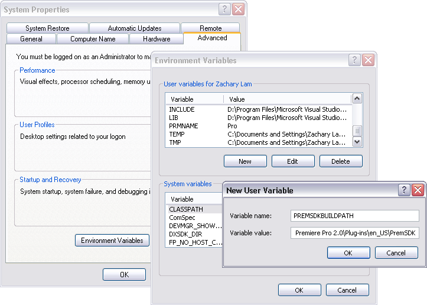

Premiere Pro C++ SDK Guide
byhttps://docsforadobe.dev
| Hosted at | https://ppro-plugins.docsforadobe.dev/ |
| Repository | https://github.com/docsforadobe/premiere-plugin-guide/ |
| Copyright | All content is copyright Adobe Systems Incorporated. |
Introduction¶
Welcome to the Adobe Premiere Pro Software Development Kit!
This is a living document, and is constantly being updated and edited. The latest release of the SDK is available at: https://www.adobe.io/apis/creativecloud/premierepro.html.
If you have questions about the APIs described in this document, or about integration with Premiere Pro, your question may already be answered on the Premiere Pro SDK forum at: https://community.adobe.com/t5/forums/filteredbylabelpage/board-id/premiere-pro/label-name/sdk.
History
Version History¶
| Date | Maintainer | Version |
|---|---|---|
| 23 Oct 2023 | Bruce Bullis | Version 24.0 |
| 6 Oct 2021 | Sanaz Golbabaei | Version 22.0 |
| 8 May 2020 | Bruce Bullis | Version 14.2 |
| 1 May 2019 | Bruce Bullis | Version 13.1 |
| 1 November 2018 | Bruce Bullis | Version CC 13.0 |
| 16 July 2018 | Zac Lam | Version CC 13.0 pre-release |
| 13 November 2017 | Zac Lam | Version CC 12.0 |
| 6 April 2017 | Zac Lam | Version CC 2017.1 |
| 4 November 2016 | Zac Lam | Version CC 2017 |
| 4 August 2015 | Zac Lam | Version CC 2015 |
| 16 June 2014 | Zac Lam | Version CC 2014 |
| 21 October 2013 | Zac Lam | Version CC October release |
| 16 July 2013 | Zac Lam | Version CC |
| 19 June 2012 | Zac Lam | Version CS6 release 2 |
| 30 April 2012 | Zac Lam | Version CS6 release 1 |
| 2 May 2011 | Zac Lam | Version CS5.5 |
| 28 April 2010 | Zac Lam | Version CS5 |
| 21 September 2009 | Zac Lam | Version CS4 |
| 5 October 2007 | Zac Lam | Version CS3 |
| 13 July 2006 | Zac Lam | Version 2.0 release 2 |
| 17 January 2006 | Zac Lam | Version 2.0 release 1 |
| 25 May 2004 | Zac Lam | Version 1.5 |
| 21 August 2003 | Zac Lam | Version 1.0 (Premiere Pro) |
| 19 July 2002 | Zac Lam & Bruce Bullis | Version 6.5 |
| 10 May 2001 | Bruce Bullis | Version 6 release 2 |
| 10 December 2000 | Bruce Bullis & Eric Sanders | Version 6 release 1 |
| 20 April 1998 | Brian Andrews | Version 5 |
| 9 February 1996 | Brian Andrews | Version 4.2 |
| 13 February 1995 | Matt Foster, Nick Schlott | Version 4.0 - first Windows release |
Ended: History
Introduction
What Premiere Plug-Ins Do¶
Premiere APIs provide access to many points of the video editing pipeline.
Recording from an external device, device control, media import and export, video effects and transitions, playback to external hardware, and integration with control surfaces can all be performed by plugins.
SDK Audience¶
The Premiere Pro Software Development Kit enables developers to create plugins for Premiere Pro, After Effects, Audition, Media Encoder, Character Animator, and Premiere Elements.
The required development environment for the Premiere Pro SDK for Windows is Microsoft Visual Studio 2015 Update 3 on Windows 7 or Windows 10 64-bit. When setting up Visual Studio you may need to adjust some installation settings to install the components for compiling 64-bit plugins. On macOS, the minimum environment is Xcode 7.3 on macOS 10.12 or later.
The SDK includes sample projects for these development environments. On Windows, projects can often be updated to more current versions of Microsoft Visual Studio by simply opening the project and approving the automatic conversion. The sample code is written in C++. Other compilers and programming languages are not supported. We cannot assist with platform API programming issues not central to Premiere Pro plugin programming.
If this is your first time developing a Premiere plugin, you can skip Whats New.
If you are developing on macOS, see a quickstart video on building a plugin using a similar SDK (on macOS) here, and then go directly to Where Do I Start.
Whats New¶
What's New in 24.0¶
With the removal of Capture functionality from Premiere Pro, support for Record modules and Device Control plug-ins have been removed from the SDK.
What's New in 15.4¶
We've updated the PrSetEnv.h header, to allow building ARM-native plugins.
What's New in 14.2¶
Cleared the dust and debris off of the SDK source files. ;) The primary motivation for this new SDK release is to provided updated headers. Example code utilizing those new headers, as well as documentation of their new contents, will (regrettably) need to wait for another day.
What's New in 13.1¶
Removed "CC" from the product name.
What's New in 13.0¶
The only significant change to Premiere Pro's C++ APIs for 13.0 is the addition of color-space specifiers to the Importer API. The ColorProfileRec structure is deprecated; instead, Importers will describe supported colorspaces (in response to imGetIndColorSpace ) using a ColorSpaceRec.
What's New in 12.0¶
Effects and Transitions¶
GPU Effects & Transitions built using this SDK are now compatible with After Effects 15.0 and later. The sample GPU effect projects have been updated so that they load in both Premiere Pro and After Effects.
The newly provided PrGPU SDK Macros and device functions allow you to write kernels that will compile on CUDA, and Metal.
Multiple effects and transitions can now be implemented in a single plugin binary, by defining multiple entry points in software at runtime. The new method for registering entry points will be a replacement for the PiPL resource, and is currently only supported in Premiere Pro. The sample effects and transitions demonstrate this new method, while Plug-In Property Lists (PiPL) Resource remains, for backwards-compatibility in PPro, and compatibility with AE.
Sequence Info Suite is now at version 5, adding the new call GetImmersiveVideoVRConfiguration(), which returns the VR video settings of the specified sequence.
New selector available for Export Info Suite: kExportInfo_SourceBitrate. This returns the source's bitrate in kbps, and is not available for all source types. exParamType can now be of type exParamType_thumbnail. A new flag exParamFlag_verticalAlignment can now be set so that property name and value controls are displayed vertically rather than side-by-side.
What's New in CC 2017.1¶
Importers¶
Importers that support captions can make use of the mayHaveCaptions flag in imFileInfoRec8, for better performance. Also, a imImageInfoRec is now added to imInitiateAsyncClosedCaptionScanRec, just for the width and height parameters.
Exporters¶
Exporters can advertise whether they support color profile embedding. There are also APIs to set color profile in the exporter, and a flag that controls whether profile is to be embedded. The color profile is passed to an exporter via exDoExportRec, for it to embed in the output media according to format standards. This is currently used for exports from After Effects through Media Encoder.
Transmit¶
New 10-bit and 12-bit RGB HLG formats have been added for expanded HDR support.
In App Info Suite, a new identifier has been added for Character Animator, which now supports transmit plugins.
VR Video Support¶
The Playmod Immersive Video Suite can be used to query whether or not ambisonics monitoring is on or not, in the VR Video Settings.
What's New in CC 2017¶
VR Video Support added¶
Transmit plugins can have the VR perspective in the desktop Monitor driven by the Head-Mounted Display, so when the person with the Head-Mounted Display looks in a different direction, the desktop Monitor shows that same perspective. To do this, the transmit plugin can use the new Playmod Immersive Video Suite to indicate that it supports tracking.
Once Premiere sees the transmitter supports tracking, when the user activates the VR viewer, the new menu item, "Track Head-Mounted Display" will become active, and can be toggled to begin tracking. The transmitter should call NotifyDirection() as frequently it wants with updated info. Premiere will pick up the new position on the next frame draw.
For importers, imFileInfoRec8 has now been expanded so that if an importer detects that a clip contains VR video, it can inform Premiere.
New Sample Projects¶
This SDK includes a new render path for the ProcAmp sample for Metal. This sample requires macOS 10.11.4 and later.
We've also added a sample GPU effect called Vignette, donated by Bart Walczak. This effect has OpenCL, CUDA, and software render paths. Software rendering in Premiere Pro includes
8-bit/32-bit RGB/YUV software render paths. Software rendering in After Effects includes 8-bit and 32-bit smart rendering.
And lastly, the Control Surface sample is now cross-platform.
New Panel/Scripting Capabilities¶
Scripting, the processing underlying HTML5 panels, is consistently being improved upon. In this release, we've added scripting functions to add/modify effect keyframes. See the sample panel code on GitHub:
https://github.com/Adobe-CEP/Samples/tree/master/PProPanel
In particular, see the function onPlayWithKeyframes() in jsx/Premiere.jsx
Miscellaneous¶
In Video Segment Render Suite, new versions of various calls have been added with an additional boolean value that allows renders to skip rendering of non-intrinsic effects.
What's New in CC 2024.0¶
The Transmit API has been expanded to enable multiple audio outputs, and plug-ins which stream video and audio information.
What's New in CC 2015.4¶
Metal rendering for Effects and Transitions¶
GPU-accelerated rendering using Metal is now supported for third-party effects and transitions. PrGPUDeviceFramework_Metal has been added as one of the enum values in PrGPUDeviceFramework.
What's New in CC 2015.3?¶
Control Surfaces¶
New suites have been added for Control Surfaces to support the Lumetri Color panel. Most controls are supported, including the color wheels, but not including the Curves controls.
There is now a shared location for Control Surface plugins. On Mac:
/Library/Application Support/Adobe/Common/Plugins/ControlSurface, and
~/Library/Application Support/Adobe/Common/Plugins/ControlSurface
On Win:
C:Program FilesAdobeCommonPluginsControlSurface
Importers¶
Video duration can now be reported as a 64-bit integer, using the new imFileInfoRec8. vidDurationInFrames, to support longer file lengths. There is also a new suite function, SetImporterInstanceStreamFileCount(), for importers to specify how many files they open.
Exporters¶
New flags can be set in exExporterInfoRec.flags, to restrict an exporter from being used in a way that doesn't make sense. Now, an exporter can specify that video-only export is not supported. Also, an exporter can turn off the Publish tab if it chooses to.
Effects¶
Source settings effects should use the updated Source Settings suite with new
SetIsSourceSettingsEffect() function. They should make this call during PF_Cmd
GLOBAL_SETUP. This function was added to handle the case when the effect is applied to proxy video.
Misc¶
Using the Sequence Info Suite, a new call has been added, GetProxyFlag(), for a plugin to know whether the proxy mode is on or off.
What's New in CC 2015.1?¶
Transmit¶
Native support for 12-bit Dolby PQ pixel formats, with Rec. 709, P3, and Rec. 2020 primaries, have been added.
What's New in CC 2015?¶
After Effects-Style Transitions¶
AE-style Transitions can now get and set transition start and end percentages. The user can change the start and end parameters in the Effect Controls panel. To allow a plugin to be informed of changes to these values, there are two new functions in the PF TransitionSuite: RegisterTransitionStartParam() and RegisterTransitionEndParam(), which register these parameters with the plugin as float parameters. Once registered, the plugin will receive PF_Cmd_USER_CHANGED_PARAM when these params change, as well as when the transition is first applied, so the plugin can initialize them to the desired value.
AE-style Transitions can now retrieve GPU frames from arbitrary locations in the underlying clips. There is a new PrGPUDependency_TransitionInputFrame, and PrGPUFilterFrameDependency has a new member to specify whether frames from the incoming or outgoing clips are needed.
Source Settings = Effect + Importer¶
Source Settings for clips can now be implemented using effects that are tied to importers. This has the advantage of providing settings in the Effect Controls panel, rather than in a modal dialog. Editors can adjust Source Settings for multiple clips this way. These effects are used for the DPX source settings, CinemaDNG, etc.
To implement this, an importer should set imImportInfoRec.hasSourceSettingsEffect to true. Then in imFileInfoRec8, it should set sourceSettingsMatchName to the match name of the effect to be used for the Source Settings.
On the effects side, a new PF Source Settings Suite has been added to PrSDKAESupport.h, for effects using the After Effects API. This is how an effect registers a function to handle the Source Settings command.
A source settings effect is used primarily for the parameter UI and management. A source settings effect doesn't provide the actual frames. In fact, the effect isn't even called with PF_Cmd_RENDER. The frames come directly from the importer, which provides frames based on the settings as passed to the importer via prefs data.
When a clip is first imported, the effect is called with PF_Cmd_SEQUENCE_SETUP. It should call PerformSourceSettingsCommand() in the Source Settings Suite, to initialize the prefs. This causes the importer to get called with imPerformSourceSettingsCommand, where it can read the file and set the default prefs. param1 of that function is imFileAccessRec8*, and param2 is imSourceSettingsCommandRec*.
When the source settings effect parameters are changed, the effect gets called with PF_Cmd_TRANSLATE_PARAMS_TO_PREFS. The function signature is:
PF_Err TranslateParamsToPrefs(
PF_InData* in_data,
PF_OutData* out_data,
PF_ParamDef* params[],
PF_TranslateParamsToPrefsExtra *extra)
With the new prefs, the importer will be sent imOpenFile8, imGetInfo8, imGetIndPixelFormat, imGetPreferredFrameSize, imGetSourceVideo, etc.
imSourceSettingsCommandRec and PF Source Settings Suite allow the effect to communicate directly with the importer, so that it can initialize its parameters properly, based on the source media. In the DPX source settings effect, for example, in PF_Cmd_SEQUENCE_SETUP, it calls PF_SourceSettingsSuite->PerformSourceSettingsCommand(), which calls through to the importer with the selector imPerformSourceSettingsCommand. Here, the importer opens the media, looks at the header and initializes the prefs based on the media. For
DPX, the initial parameters and default prefs are based on the bit depth of the video. These default prefs are passed back to the effect, which sets the initial param values and stashes a copy of them in sequence_data to use again for future calls to PF_Cmd_SEQUENCE_RESETUP.
Importers¶
For any importers that are using imClipFrameDescriptorRec, note that the structure definition has changed. Any importers that use this in both CC 2014 and CC 2015 or later will need to do a runtime check before accessing the members of this structure.
Exporters¶
Exporters can now use standard parameters for audio channel configuration, as used with the built-in QuickTime exporter. The new exporter parameters ADBEAudioChannelConfigurationGroup and ADBEAudioChannelConfiguration supercede ADBEAudioNumChannels. The new Export Audio Param Suite can be used to query/change the audio channel configuration.
The Sequence Audio Suite is now at version 2, revising MakeAudioRenderer() to take PrAudioChannelLabel* as a parameter.
Transmitters¶
Transmitters can get a few new bits of information to aid with A/V sync. In the Playmod Audio Suite, the new function GetNextAudioBuffer2() returns the actual time the rendered buffer is from.
Also, in tmPlaybackClock, the new members inAudioOffset and inVideoOffset have been added to specify the offset chosen by the user in the preferences.
The host accounts for these offsets automatically by sending frames early, but if a transmitter is manually trying to line up audio and video times, it can use this to know how far apart from each other they are supposed to be.
Miscellaneous¶
Legacy callbacks bottlenecks->ConvolvePtr() and IndexMapPtr() have had their parameter types updated to fix a bug. Any plugins that use these in both previous versions and CC 2015 will need to do a runtime check before calling this function.
Starting in CC 2015, we now provide installer hints for Mac. You'll find a new plist file "com. Adobe.Premiere Pro.paths.plist" at "/Library/Preferences". This contains hints for your Mac installer to know where to install plugins, and is similar to the registry entries we have been providing on Win.
New Sample Projects¶
This SDK includes updated GPU effect and transition samples that demonstrate GPU rendering. Thanks to Rama Hoetzlein from nVidia for the CUDA render path provided for the SDK_CrossDissolve sample!
A barebones Control Surface sample is now provided, too.
What's New in CC 2014 (8.2)?¶
Importers now have more visibility into the player's intent on a given async request, since the render context info is now passed in imSourceVideoRec.inRenderContext. Async importers can implement aiSelectEfficientRenderTime to specify if a frame request would be more efficient at another frame time, for example at I-frame boundaries. The Video Segment Render Suite has been updated to version 4, adding new calls that include imRenderContext as a parameter.
What's New in CC 2014 (8.1)?¶
Importers that support growing files now get a hint if the host knows the file has stopped growing:
imFileInfoRec8.ignoreGrowing.
Exporters can now get the list of source pixel formats used by the clips in a sequence that is being smart rendered. GetExportSourceInfo(, kExportInfo_SourcePixelFormat, ) provides this information.
What's New in CC 2014 (8.0.1)?¶
Importers can fill in imImageInfoRec.codecDescription to provide a string that will be displayed for clips in the Video Codec column of the Project panel.
What's New in CC 2014?¶
Importers can now choose the format they are rendering in, which allows importers to change pixel formats and quality based on criteria like enabled hardware and other source settings, such as HDR. To handle the negotiation, implement imSelectClipFrameDescriptor.
imSourceVideoRec now includes a quality attribute. PPix Cache Suite is now at version 6, adding AddFrameToCacheWithColorProfile2() and
GetFrameFromCacheWithColorProfile2(), which are the same as the ones added in version 5 with the addition of a PrRenderQuality parameter.
imFileInfoRec8.highMemUsage is no longer supported.
A new recorder return code was added, rmRequiresRoyaltyContent. Return this from
recmod_Startup8 or recmod_StartRecord, if the codec used is unlicensed.
OpenCL rendering now also uses the half-precision 16-bit floating point pixel format for rendering. GPU effects and transitions that support OpenCL should implement both 16f and 32f rendering.
A new plugin API has been introduced for hardware Control Surfaces. This is the API that allows support for EUCON and Mackie devices to control audio mixing and basic transport controls. The API supports two-way communication with Premiere Pro, so that hardware faders, VU meters, etc are in sync with the application.
Premiere Pro is now localized in Russian and Brazilian Portugese.
What's New in CC October 2013?¶
We've extended the After Effects API to support native transitions in Premiere Pro.
For device controllers, the new command cmdSetDeviceHandler was added. This command tells the device controller which panel is using the device controller - either the Capture panel, or Export to Tape panel.
For importers, imInitiateAsyncClosedCaptionScanRec now provides extra fields for the importer to fill in the estimated duration of all the captions. This is useful for certain cases where the embedded captions contain many frames of empty data.
We added version 2 of the Export File Suite to resolve a mismatch in seek modes.
What's New in CC July 2013?¶
The only significant additions made in the July 2013 update to version CC are in the device controller API.
What's New in CC?¶
New Edit to Tape Panel¶
You can think of this as the Export to Tape equivalent of the Capture panel for capturing, which provides a video preview and various settings in the PPro UI. Among the benefits are more seamless integration, a more familiar UI for users, integrated device presets, and some new capabilities like adding Bars and Tone / Black Video / Universal Counting Leader to the start of your layoff to tape. To use this new feature, read more about what's new in the device controller API.
New GPU Extensions for Effects and Transitions¶
New GPU Extensions to existing APIs allow effects and transitions to access video frames in GPU memory, when using the Mercury Playback Engine in a GPU-accelerated mode. See GPU Effects & Transitions for more information.
Closed Captioning Support in Importer and Exporter APIs¶
The importer and exporter APIs have been extended to support closed captioning embedded in media.
Note
Premiere Pro can also import and export captions in a sidecar file (e.g. .mcc, .scc, or .xml) alongside any media file, regardless of the media file format.
Miscellaneous Improvements¶
- A new pixel format for native 10-bit RGB support - PrPixelFormat_RGB_444_10u, as well as
PrPixelFormat_UYVY_422_32f_*formats - VST 3 support allows many more audio plugins to run in Premiere Pro
- Windows installer improvements, by adding new registry values for preset and settings locations.
- Get the current build number via the App Info Suite
- Importers can now support audio beyond basic mono, stereo, and 5.1, without implementing multiple streams, and importers can return varying pixel formats depending on the clip settings. Read more about what's new for importers.
- Exporters can get the number of audio channels in the source, and check if the user has checked "Use Previews" in the Export Settings dialog. They can also move an existing settings parameter to a different location. Read more about what's new for exporters.
- The Sequence Info Suite can retrieve the field type, zero point, and whether or not the timecode is drop-frame
- New flags to the transition API as a hint to optimize rendering when a transition only has an input on one side
- The Video Segment Suite provides access to a new property: Effect_ClipName
Premiere Pro is now localized in Chinese.
What's New in CS6.0.x?¶
CS6.0.2 adds more support for growing files in importers. A transmitter can now label its audio channels for the Audio Output Mapping preferences.
CS6.0.1 gives device controllers a way to get the number of frames dropped during an insert edit, to abort an Export to Tape if desired. This method is already superceded by the new Edit to Tape panel functionality in CC.
What's New in CS6?¶
Transmit API¶
We are introducing the Transmit API as the preferred means for external hardware monitoring. This new API provides vastly simplified support for monitoring on external hardware. Transmit plugins offer more flexible usage, since they are not tied to the sequence Editing Mode, which cannot be changed once a sequence has been edited. Transmitters can be specified by the user in Preferences > Playback. Other plugins such as importers and effects with settings preview dialogs can send video out to the active transmitter, opening up new possibilities for hardware monitoring. See Transmitters for more details.
Exporter Enhancements¶
Exporters can now use "push" model compression. This can simplify export code and improve performance. The "pull" model is still supported, and required for legacy versions and Encore.
We've added the Export Standard Param Suite, which provides the standard parameters used in many built-in exporters. This can greatly reduce the amount of code needed to manage standard parameters for a typical exporter, and guarantee consistency with built-in exporters.
Exporters can now set tooltip strings for parameters. Multiple exporters are now supported in a single plugin. And the Maximum Render Precision flag is now queried from the exporter, rather than being handled without the exporter's knowledge.
Exporters can now set events (error, warning, or info) for a specific encode in progress in the Adobe Media Encoder render queue, using the new Exporter Utility Suite. These events are displayed in the application UI, and are also added to the AME encoding log.
Make sure your presets go in the right location in the new AME Preset Browser. Read additional details of what's new in Exporters.
Stereoscopic Video Pipeline¶
We are also adding API support for stereoscopic video throughout the render pipeline. This affects importers, effects built using the After Effects API, and exporters.
Other Changes¶
Importers¶
Importers can now support growing files in Premiere Pro. We have also added a way for importers to specify all their source files to be copied by Collect Files in After Effects. There is also a new function in the Media Accelerator Suite to validate the content state of a media accelerator. See additional details of what's new in Importers.
Recorders¶
For Recorders, the parent window handle is now properly passed in during recmod_ShowOptions
when a recorder should display its modal setup dialog.
Players¶
For Players, pmPlayerSettings has a new member, mPrimaryDisplayFullScreen, which indicates whether or not the player should display fullscreen.
Device controllers¶
Device controllers have a new callback, DroppedFrameProc, to provide the feature to abort and Export to Tape if frames are dropped.
New video segment properties were added:
kVideoSegmentProperty_MediaClipScaleToFramePolicy,kVideoSegmentProperty_AdjustmentAdjustmentMediaIsOpaque,kVideoSegmentProperty_AdjustmentOperatorsHash,kVideoSegmentProperty_Media_InPointMediaTimeAsTicks,kVideoSegmentProperty_Media_OutPointMediaTimeAsTicks,kVideoSegmentProperty_Clip_TrackItemStartAsTicks,kVideoSegmentProperty_Clip_TrackItemEndAsTicks,kVideoSegmentProperty_Clip_EffectiveTrackItemStartAsTicks,kVideoSegmentProperty_Clip_EffectiveTrackItemEndAsTicks
The Memory Manager Suite is now at version 4. AdjustReservedMemorySize provides a way to adjust the reserved memory size relative to the current size. This may be easier for the plugin, rather than maintaining the absolute memory usage and updating it using the older ReserveMemory call.
MPEG-4 pixel formats and full-range Rec. 709 MPEG-2 and MPEG-4 formats have now been added for native support in the render pipeline.
What's New in CS5.5?¶
Importers¶
Importers can now support color management, when running in After Effects. Now, even nonsynthetic importers can explicitly provide peak audio data. And a new return value allows an importer to specify that it is dependent on a library that needs to be activated. See additional details of what's new in Importers.
Players¶
Players can now support closed captioning. See additional details of what's new in the players chapter.
Exporters¶
Exporters now have a call to request a rendered frame and then conform it to a specific pixel format. See additional details of what's new in Exporters.
Export Controller¶
We have opened up a new Export Controller API that can drive any exporter to output a file in any format and perform custom post-processing operations. Developers wanting to integrate Premiere Pro with an asset management system will want to use this API instead of the exporter API. See Export Controllers for more details.
A new pair of pixel formats was added to natively support full-range Rec. 601 4:2:0 YUV planar video, both progressive and interlaced: PrPixelFormat_YUV_420_MPEG2_FRAME_PICTURE_PLANAR_8u_601_FullRange and PrPixelFormat_YUV_420_MPEG2_FIELD_PICTURE_PLANAR_8u_601_FullRange.
The Video Segment Suite now provides a new call to retrieve a segment node for a requested time. There are also a few new properties for media nodes:
StreamIsContinuousTime,ColorProfileName,ColorProfileData, andScanlineOffsetToImproveVerticalCentering
The Sequence Info Suite now provides a call to get the sequence frame rate, which may be useful for effects.
The Image Processing Suite has a new call to set the aspect ratio flag of a DV frame.
What's New in CS5?¶
Importers¶
Importers now have access to the resolution, pixel aspect ratio, timebase, and audio sample rate of the source clip from a setup dialog. Custom importers can use a new call to update a clip after it has modified by the user in the setup dialog. Please refer to Importers for more info on what's new.
Recorders¶
Recorders can now provide audio metering during preview and capture.
Exporters and players¶
Exporters and players can automatically take advantage of GPU acceleration, if available on the end-user's system. Each project now has a setting for the renderer that the user can choose in the project settings dialog. When renders occur through the Sequence Render Suite or the Playmod Render Suite, they now go through the renderer chosen for the current project. This allows third-party exporters and players to use the built-in GPU acceleration available in the new Mercury Playback Engine.
Exporters and players can now handle any pixel format, with the new Image Processing Suite. Exporters and players that parse segments and perform their own rendering can now call the host for subtree rendering. See the Video Segment Render Suite for details.
Note
If you provide an installer for an exporter, custom presets created in Premiere Pro are now visible in AME and vice-versa.
Mac 64-Bit and Cocoa¶
It is invalid to unload any bundle that uses Cocoa because of restrictions in the Objective-C runtime which do not support unregistering classes. If a plugin uses Cocoa, it must call CFRetain on its own bundle, otherwise it will cause a crash when the application is closing and tries to unload the plugins.
What's New in CS4?¶
New Renderer API and Custom Pixel Formats¶
The new renderer API provides a way to take over and accelerate rendering of segments. Just as a player can choose which segments to accelerate, so a renderer can choose which segments to accelerate. Renderers may accelerate any segment, in any sequence, in any project.
Renderers also provide a way to add completely custom pixel formats to the render pipeline. Supporting a custom pixel format in an importer, a renderer, and an exporter is the new way to implement smart rendering, by passing custom compressed data from input to output.
Sequence Preview Formats¶
Sequence preview file formats are now defined by Sequence encoder preset files. Without any presets installed, you will not be able to create a new sequence using your custom editing mode.
Separate Processes During Export¶
When choosing export settings, the settings UI is displayed by Premiere Pro. When the user confirms the settings, the clip or sequence is passed to Media Encoder. From Media Encoder, frames from the clip or sequence can be retrieved and rendered without further participation from Premiere Pro. For a clip export, Media Encoder uses any installed importers to get source frames. For sequence export, Media Encoder uses a process called PProHeadless, to import and render frames to be exported.
Since there are so many processes involved during export, it is important that plugins be accessible to all processes, by being installed in the common plugins folder. PProHeadless Plugin Loading.log provides information on the PProHeadless process. PProHeadless is also used when the user creates a dynamic link to a .prproj that is not opened in Premiere Pro.
XMP metadata¶
There are built-in XMP metadata handlers for known filetypes. These handlers write and read metadata to and from the file, without going through the importer. imSetTimeInfo8 is no longer called, since this is set by the XMP handler for that filetype.
More Pixel Format Flexibility¶
Effects, transitions, and exporters no longer need to support 8-bit RGB at a minimum. So, for example, an effect can be written to process floating point YUV only. If necessary, Premiere will make an intermediate conversion so that the effect will receive the pixel format it supports.
Legacy API¶
Legacy API features, such as selectors and callbacks that are superceded by new ones, are deprecated, but are supported, unless indicated.
Where Do I Start¶
Read about the sample projects. Decide which one is closest to the functionality you want to provide. Build the plugin into the shared plugins folder.
Launch Premiere Pro with the debugger attached, and set breakpoints at the plugin's entry point to see all communication between Premiere Pro and the plugin.
The documentation is intended as a reference with detailed explanation where appropriate, but studying the interaction between Premiere Pro and plugins is the best way to understand it.
Write plugins by modifying sample plugin source code. This will greatly simplify your efforts, and make it easier for us to help you. Feel free to explore and experiment with the API on your own once you're familiar with it, but please, resist the temptation to start from scratch; you'll only force yourself to repeat other developers' mistakes, including our own.
If you run into behavior that seems wrong, see if you can reproduce the behavior using one of the unmodified sample projects. This can save you a lot of time, if you can determine whether the bug behavior was introduced by your modifications, or was already there to begin with.
Document Overview¶
This introduction information is common to all the plugin types.
All developers should read this chapter, and browse through chapters two and three before diving too deep into plugin development.
Resources is a short chapter that describes the Premiere Pro-specific resources used by plugins, including the Plug-in Property List (PiPL).
Universals documents concepts, data types, and structures used throughout the APIs. It also describes suites and functions used by more than one type of plugin.
Hardware introduces Media Abstraction, used by hardware integrators and software developers to integrate with Premiere and accelerate specific workflows.
This document is designed to be read non-linearly. You can browse through the topics from the bookmarks that appear in the left-hand panel in Acrobat, or the right-hand panel in the Preview application on macOS. A simple search for a well-chosen keyword will also turn up much information on any given topic.
Documentation Conventions¶
Functions, structure names and general C/C++ code are in Courier; MyStruct.member and MyFunction()
Underlined text in light blue is hyperlinked. Premiere selectors are italicized; imGetPrefs.
Getting Support and Providing Feedback¶
Please read relevant sections of this document and view the included sample code before requesting assistance. Please direct questions regarding installation, configuration, or use of Adobe products to Adobe Technical Support.
Having a solid understanding of digital video concepts is vital to developing plugins. This documentation assumes you understand basic video topics such as resolution, frame rates, field interlacing, pixel aspect ratio, bit depth, timecode, compression, color spaces, etc. You must also understand how your plugin will fit into a user's workflow in Premiere Pro. If you aren't yet familiar with Premiere Pro or video editing concepts, we recommend the Adobe Premiere Pro Classroom in a Book.
Use the Premiere Pro SDK forum to ask questions on the API and general integration.
Premiere Pro Plug-In Types¶
| Type | Description |
|---|---|
| Importers | Import video and audio media into Premiere. Synthetic importers, a subset, dynamically synthesize media without creating an actual file on disk. Custom importers, dynamically synthesize media to disk. |
| Export Controllers | Can drive any exporter to generate a file in any format and perform custom post-processing operations. Developers wanting to integrate Premiere Pro with an asset management system will want to use this API instead of the exporter API. |
| Exporters | Allows the user to output media to disk. |
| Transmitters | Sends video, audio, and closed captioning to any external device during playback and editing. |
| Video Filters | We strongly recommend using the After Effects SDK to develop effects plugins. Most of the effects included in Premiere Pro are After Effects plugins. Process a series of video frames with parameters that can be animated over time. |
| GPU Effects & Transitions | Process two video sources into a single destination over time. This API is based on the After Effects API, with certain functions to enable transition functionality in Premiere Pro. |
| Control Surfaces | Interface with a hardware control surface to support audio mixing, basic transport controls, and the Lumetri Color panel. The API supports two-way communication with Premiere Pro, so that motorized hardware faders, VU meters, etc can be in sync with the application. |
Other Supported Plug-In Standards¶
| Type | Description |
|---|---|
| Adobe After Effects API | Premiere Pro supports a portion of the AE API. The After Effects SDK is not included in the Premiere Pro SDK. The last chapter in the After Effects SDK Guide.pdf, included in the After Effects SDK, contains information on known differences with how Premiere Pro supports the AE API. |
| VST | Starting in CC, Premiere supports version 3 of the VST specification for audio effects. In CS6.x and previous versions, support was limited to version 2.4. |
| ASIO | An ASIO driver is often provided in addition to a transmit plug-in, to provide audio output during editing, playback, and Export To Tape. Prior to CS6, an ASIO driver was required to support audio input for voiceover recording in the audio mixer. On macOS, a Core Audio component may be provided rather than an ASIO driver. |
| Core Audio | macOS only. May be provided instead of an ASIO driver. |
Plug-in Support Across Adobe Video and Audio Applications¶
This chart shows which third-party plugins are supported by the various Video and Audio applications.
| Premiere Pro | After Effects | Media Encoder | Audition | Character Animator | Prelude | |
|---|---|---|---|---|---|---|
| After Effects AEGPs | X | |||||
| After Effects effects | X | X | ||||
| After Effects transitions | X | |||||
| ASIO | X | X | X | X | ||
| Control Surfaces | X | X | ||||
| CoreAudio | X | X | X | X | ||
| Premiere device controllers | X | |||||
| Premiere export controllers | X | |||||
| Premiere exporters | X | X | X | X | ||
| Premiere importers | X | X | X | X | X | |
| Premiere recorders | X | |||||
| Premiere transmitters | X | X | X | X | ||
| Premiere video filters | X | |||||
| QuickTime codecs | X | X | X | X | X | |
| Transitions | X | |||||
| VfW codecs | X | X | X | X | X | |
| VST audio effects | X | X |
Premiere Elements Plug-in Support¶
Premiere Elements uses the same core libraries for plug-in support that Premiere Pro does, although Premiere Elements is 32-bit, whereas Premiere Pro is 64-bit starting with CS5.
| Premiere Elements version | Equivalent Premiere Pro API version |
|---|---|
| 12 | CS6 |
| 11 | CS5.5 |
| 10 | CS5.5 |
| 9 | CS5 |
| 8 | CS4 |
It's always important to test the plug-in fully in each application before advertising compatibility.
Check out Guidelines for Exporters in Premiere Elements for instructions on how to set up your exporter to be used in Premiere Elements.
What Exactly Is a Premiere Pro Plugin?¶
Premiere plugins contain a single entry point of a type specific to each API.
Plugins are DLLs on Windows, and Carbon or Cocoa Bundles on macOS.
Plug-ins in the \Plug-ins[language] folder, and any of its subfolders, will be loaded at launch.
Plugins can have private resources.
Only one plug-in per file is parsed, unlike After Effects and Photoshop plugins, which can contain multiple entry points.
Sample Projects¶
Descriptions¶
| Name | Description |
|---|---|
| SDK File Importer | This importer supports .sdk media files. To use the importer, choose File > Import, and select an .sdk file. Such files may be created using the SDK Exporter. It supports uncompressed 8-bit RGB with or without alpha, and packed 10-bit YUV (v410). It supports mono, stereo, and 5.1 audio at arbitrary sample rates and 32-bit float. It supports trimming using the Project Manager, Properties and Data Rate Analysis, Unicode filenames, the avoidAudioConform flag, and can read video frames asynchronously. It also features a test harness for multistream audio, which can be turned on by uncommenting the MULTISTREAM_AUDIO_TESTING define in the header. |
| Synth Import | This synthetic importer generates 8-bit YUV and RGB, video only. To use it, choose File > New > SDK Synthetic Importer. When the clip is created, it demonstrates a sample settings dialog, which can be displayed again by double-clicking the clip in the Project Panel or Timeline Panel. Every time the settings dialog is displayed, it creates new footage in memory. It creates ten seconds of footage at 24 fps. The video consists of horizontal lines of random colors. No file is created on disk for an example of that, see the Custom Importer. |
| SDK Custom Import | This custom importer creates a clip similar to the Synth Import sample, but generates it to disk, rather than memory. To use it, choose File > New > SDK Custom Importer. Or, import an existing .sdkc clip from the File > Import dialog. On Windows, newly generated files with .sdkc file extensions are created in C:WindowsTemp. On macOS, they are created on the Desktop. After the sample settings dialog, it optionally displays a background frame from the timeline (useful for titlers). The generated footage is between 2 and 30 frames at 24 fps, with a random resolution between 32 and 720 pixels wide and between 32 and 480 high, at DV NTSC pixel aspect ratio. |
| ExportController | Adds a new menu item to File > Export > SDK Export Controller. When selected, it displays a simple message box on Windows, takes the DV NTSC widescreen preset, and exports a file to C:\Windows\Temp on Windows, or to the Desktop on macOS. |
| SDK Exporter | This exporter writes .sdk files. To use it, choose File > Export > Media, and in the Export Settings choose File Type: SDK File. It supports uncompressed 8-bit RGB with or without alpha, and packed 10-bit YUV (v410). It supports mono, stereo, and 5.1 audio at arbitrary sample rates and 32-bit float. It demonstrates custom parameters, including a custom settings button. It also writes marker data to an .html file with the same filename. To write files with v410 compression using 8-bit RGB sources, this sample uses routines to convert the 8-bit RGB data to 32-bit RGB, then to 32-bit YUV, and finally to v410. These same routines may be adapted for transitions, filters, and other plugin types. |
| Transmitter | The sample transmit plugin does not output to any hardware, but can be used to step through interactions between the host and plugin in the debugger. To use it, go the the Preferences > Playback, and choose the SDK Transmitter as the Audio Device, and as a Video Device. This transmit plugin provides the basic structure, separating concepts of plugin and instance. For video, it declares support for any pixel format and resolution. For audio, it declares support for 2 channels. It also declares a small latency value for demonstrative purposes. On Windows, there is some basic debug logging. It does not actually provide it's own clock at this time, but on playback it simply pretends to step forward a frame with every frame received. This may result in some bug behavior such as playing back at speeds faster or slower than normal, depending on how fast the host can push frames. |
| SDK_ProcAmp | This GPU-accelerated effect demonstrates a simple ProcAmp effect using the After Effects API with the Premiere Pro GPU extensions. The effect is found in the SDK folder of the Video Effects in the Effects Control panel. It supports Metal acceleration. This sample requires macOS 10.11.4 and later. |
| Vignette | This effect creates a vignette on video using the After Effects API with the Premiere Pro GPU extensions. Has CUDA and software render paths. Software rendering in Premiere Pro includes 8-bit/32-bit RGB/ YUV software render paths. Software rendering in After Effects includes 8-bit and 32-bit smart rendering. Thanks to Bart Walczak for donating this sample. |
| SDK_CrossDissolve | This GPU-accelerated transition demonstrates a simple cross dissolve transition using the After Effects API with the transition extensions. The transition is found in the SDK folder of the Video Transitions in the Effects Control panel. It supports CUDA acceleration. |
| ControlSurface | You should see the plugin in the PPro UI in Preferences > Control Surface, when you hit the Add button, as one of the options in the Device Class drop-down next to Mackie and EUCON (currently shows as "SDK Control Surface Sample"). Just a starting point for you to add your functionality. |
How To Build the SDK Sample Projects¶
The required development environment is described in SDK Audience.
See a quickstart video on building an effect using a similar SDK (on macOS) here.
We've combined the sample projects into a single master project, stored in the Examples folder of the SDK.
For macOS it is BuildAll.xcodeproj; for Windows, it is _BuildAll.sln.
You'll need to specify some settings so that the plugins are built into a folder where they will be loaded by the application you are developing for.
We recommend plugins be built into the following folder for macOS: /Library/Application Support/Adobe/Common/Plug-ins/[version]/MediaCore/
Version is locked at 7.0 for all CC versions, or CSx for earlier versions.
For example: /Library/Application Support/Adobe/Common/Plug-ins/7.0/MediaCore/
or: /Library/Application Support/Adobe/Common/Plug-ins/CS6/MediaCore/
and the following path for Windows:
[Program Files]\Adobe\Common\Plug-ins\[version]\MediaCore\\
for example: C:\Program Files\Adobe\Common\Plug-ins\7.0\MediaCore\\
or: C:\Program Files\Adobe\Common\Plug-ins\CS6\MediaCore\\
Note
This Windows path is only recommended for development purposes.
In Xcode, set the build location for the project in File > Project Settings. Press the Advanced button. Under Build Location choose Custom, select Absolute, and set the Products path.
In Visual Studio, for convenience, we have set the Output File for all sample projects to use the base path set by the environment variable PREMSDKBUILDPATH. You'll need to set this as a user environment variable for your system, and shown in the screenshot below.
 Setting Environment Variables
- On Windows, right-click My Computer > Properties, and in the left sidebar choose Advanced System Settings.
- In the dialog that appears, hit the Environment Variables button.
- In the User variables, create a new variable named PREMSDKBUILDPATH, with the path as described above. (e.g. "C:Program FilesAdobeCommonPlug-ins[version]MediaCore").
- Log out of Windows, and log back in so that the variable will be set.
When compiling the plugins, if you see a link error such as:
"Cannot open file "[MediaCore plugins path]plugin.prm", make sure to launch Visual Studio in administrator mode. In your Visual Studio installation, right-click devenv.exe, Properties > Compatibility > Privilege Level, click "Run this program as an administrator".
It's not recommended to copy plugins into the plugin folder after you've built them, because that won't allow you to debug the plugins while the host application is running.
Debugging Plug-Ins¶
Once you've got the plugin building directly into the plugins folder as explained above, here's how to specify Premiere Pro as the application to run during debug sessions:
Windows¶
- In the Visual Studio solution, in the Solution Explorer panel, choose the project you want to debug
- Right-click it and choose Set as StartUp Project
- Right-click it again and choose Properties
- In Configuration Properties > Debugging > Command, provide the path to the executable file of the host application the plugins will be running in (this may be Premiere Pro or After Effects)
- From there you can either hit the Play button, or you can launch the application and later at any point choose Debug > Attach to Process
macOS¶
- In Xcode, in the Project Navigator, choose the xcodeproj you want to debug
- Choose Product > Scheme > Edit Scheme
- Under Run, in the Info tab, for Executable, choose the host application the plugins will be running in (this may be Premiere Pro or After Effects)
- From there you can either hit the Play button to build and run the current scheme, or you can launch the application and later at any point choose Debug > Attach to Process.
Another way to do this in Visual Studio is by placing a line of code
_asm int 3;
or
DebugBreak();
You will then receive the Microsoft error reporting message, but if you hit the Debug button you will enable Just-In-Time Debugging and can attach to the process.
Load Em Up¶
Plug-in Caching¶
On its first launch, Premiere Pro loads all the plugins, reads the Plug-In Property Lists (PiPL) Resource, and sends any startup selectors to determine the plugins' capabilities. To speed up future application launches, it saves some of these capabilities in what we call the plugin cache (the registry on Windows, a Property List file on macOS).
The next time the application is launched, the cached data is used wherever possible, rather than loading all the plugins on startup. Using this changed data will make the application launch faster, but for a small set of plugins that need to be initialized every time, it may be undesirable. These include plugins that need to get run-time information that might change in between app launches (i.e. installed codec lists), and plugins that check for hardware and need to be able to fail. So we give your plugin control final say over whether or not it is reloaded each time.
By default, importers, recorders, and exporters are not cached. Exporters can be cached by setting exExporterInfoRec.isCacheable to non-zero during exSelStartup. Importers and recorders can be cached by returning *IsCacheable instead of *NoError (e.g. for importers, imIsCacheable instead of imNoError) on the startup selector.
By default, legacy video filters and device controllers are cached by default. To specify that legacy video filters must be reloaded each time, rather than cached, Premiere filters should respond to fsCacheOnLoad.
Resolving Plug-in Loading Problems¶
There are various tools to help in the development process.
On Windows only, you can force Premiere to reload all the plugins by holding down shift on startup. The plugin cache on macOS may be deleted manually from the user folder, at ~/Library/Preferences/com.Adobe.Premiere Pro [version].plist.
For plugin loading issues, you may first check one of the plugin loading logs.
On Windows: [user folder]\AppData\Roaming\Adobe\Premiere Pro\[version number]\Plugin Loading.log
On macOS, this is: ~/Library/Application Support/Adobe/Premiere Pro/[version number]/Plugin Loading.log
Your plugin will be listed by path and filename, and the log will contain details on what happened during the plugin loading process. Starting in CC 2017, it now logs any error codes returned from an effect on PF_Cmd_GLOBAL_SETUP.
If the log says a plugin has been marked as Ignore, the most common culprit is a library dependency that could not be loaded. If your plugin uses some image processing or proprietary code library, is it installed on the system, and in the right place? On Windows, a tool such as Dependency Walker (depends.exe) is helpful to check a plugin's dependencies.
Library Linkage¶
On Windows, we strongly recommend dynamically linking to libraries, rather than static linking. In Visual Studio, the runtime library linkage setting is in C/C++ > Code Generation > Runtime Library.
We ask developers to compile with the /MD flag (or /MDd for debug builds), and not with the /MT flag.
Failure to do so can contribute to the problem where the Premiere Pro process can run out of fiber-local storage slots, and subsequent plugins fail to load.
No Shortcuts¶
The Premiere Pro plugin loader does not follow Windows shortcuts. Although it does follow macOS symbolic links, we recommend against using symbolic links in the plugins folder, since the plugin loader checks the timestamp of the symbolic link rather than the timestamp of the plugin pointed to.
Explanation: If you use a symbolic link and the plugin fails to load once (for example, if the plugin pointed to isn't there) it will be marked to ignore when Premiere launches. Even if the plugin is restored to the proper location, the plugin loader will check the modification time of
the symbolic link, rather than the plugin pointed to, and continue to ignore the plugin until the modification date of the symbolic link is updated. So plugins should be placed directly in a plugins folder or subfolder.
Plug In Installation¶
Plug-ins must have an installer. This simplifies installation by the user, provides more compact distribution, and ensures all the pieces are installed correctly.
Create a container folder for your plug-in(s) to minimize user confusion.
Don't unintentionally overwrite existing plugins, or replace newer versions.
The installer should find the default installation directories as described below.
It is also appreciated when an installer allows the user to specify an alternate directory.
Plugins should be installed in the common plugin location.
Supported Premiere and After Effects plugins installed here will be loaded by Premiere Pro, After Effects, Audition, and Media Encoder.
Other plugin types, such as QuickTime and VfW codecs should be installed at the operating system level.
Windows¶
As of Premiere Pro version 22.0, the \Plug-ins directories have been renamed \Plugins, to better coincide with Apple's Human Interface Guidelines. Premiere Pro will continue to attempt to load plugins from \Plug-Ins directories as well, for the foreseeable future. We will continue to specify
Starting in CC, each version of Premiere Pro will create a unique registry key that provide locations of folders of interest for third-party installations for that version.
For example, here are the registry values for CC 2015.3:
Key: HKEY_LOCAL_MACHINE/Software/Adobe/Premiere Pro/10.0/
Value name: CommonPluginInstallPath
Value data: C:\Program Files\Adobe\Common\Plugins\7.0\MediaCore\\ (or whatever the proper MediaCore plugins folder is; note that this is the same as what the After Effects installer provides for a corresponding registry key)
Starting in CC 2015.3, control surface plugins should be installed here:
/Library/Application Support/Adobe/Common/Plug-ins/ControlSurface/
For sequence presets:
Value name: SequencePresetsPath
Value data: [Adobe Premiere Pro installation path]\Settings\SequencePresets\
For sequence preview presets:
Value name: SequencePreviewPresetsPath
Value data: [Adobe Premiere Pro installation path]\Settings\EncoderPresets\SequencePreview\
For exporter presets:
Value name: CommonExporterPresetsPath
Value data: [User folder]AppDataRoamingAdobeCommonAME7.0Presets\
Effects presets:
Value name: PluginInstallPath
Value data: [Adobe Premiere Pro installation path]\Adobe Premiere Pro\Plugins\Common
Third-party installers can start from this path, and then modify the string to build the path to the language-specific effect presets.
Prior to CC, the only path given in the registry was the common plug-in path for the most recently installed version of Premiere Pro:
HKEY_LOCAL_MACHINE/Software/Adobe/Premiere Pro/CurrentVersion
Value name: Plug-InsDir
Value data: REG_SZ containing the full path of the plugin folder.
As an example: C:\Program Files\Adobe\Common\Plugins\7.0\MediaCore\
The best way to locate other preset folders was to start from the root path for Premiere Pro in the registry at
HKEY_LOCAL_MACHINE\SOFTWARE\Microsoft\Windows\CurrentVersion\App Paths\\ Adobe Premiere Pro.exe.
Then, just add the proper subdirectories as described in the macOS section.
macOS¶
Starting in Premiere Pro version 22.0, The common plugin location is:
/Library/Application Support/Adobe/Common/Plugins/[version]/MediaCore/
Starting in CC 2015.3, control surface plugins should be installed here:
/Library/Application Support/Adobe/Common/Plugins/ControlSurface/
Previously, starting in CC 2015, Premiere Pro provided installer hints for Mac. You'll find com.Adobe.Premiere Pro.paths.plist at /Library/Preferences, which contains hints for your Mac installer to know where to install plugins, and is similar to the registry entries we have been providing on Win.
The common plugin location was at:
/Library/Application Support/Adobe/Common/Plug-ins/[version]/MediaCore/
Starting in CC 2015.3, control surface plugins should be installed here:
/Library/Application Support/Adobe/Common/Plug-ins/ControlSurface/
Following OS X Code Signing guidelines, plugins should be installed in this separate shared location rather than in the application bundle.
For sequence presets:
/Settings/SequencePresets/[Your specific folder]/
Sequence preview presets:
/Settings/EncoderPresets/SequencePreview/[Your editing mode GUID]/
Encoder presets:
/MediaIO/systempresets/[Your exporter folder]/
Effects presets:
/Plugins/[language subdirectory]/Effect Presets/ (see Localization for the list of language codes)
Editing modes:
/Settings/Editing Modes/
Plugin Naming Conventions¶
On Windows, Premiere Pro plugins must have the file extension ".prm". On macOS, they have the file extension ".bundle". Other supported plug-in standards use their conventional file extensions: ".aex" for After Effects plugins, ".dll" for VST plugins.
While it is not required for your plugin to load, naming your plugins using the plugin type as a prefix (e.g. ImporterSDK, FilterSDK, etc.) will help reduce user confusion.
Plugin Blocklisting (formerly Blacklisting)¶
Specific plugins can be blocked from being loaded by MediaCore in specific applications, using blocklists.
Note
This does not work for After Effects plugins loaded by AE, although it does work for AE plugins loaded in Premiere Pro.
In the plugins folder, look for the appropriate blacklist file, and append the the filename of the plugin to the file (e.g. BadPlugin, not BadPlugin.prm). If the file doesn't exist, create it first. "Blocklist.txt" contains names of plugins blacklisted from all apps. Plugins can be blocked from loading in specific apps by including them in "Blocklist Adobe Premiere Pro.txt", or "Blocklist After Effects.txt", etc.
Creating Sequence Presets¶
Not to be confused with encoder presets or sequence preview encoder presets, sequence presets are the successor to project presets. They contain the video, audio, timecode, and track layout information used when creating a new sequence.
If you wish to add Sequence Presets for the New Sequence dialog, save the settings with a descriptive name and comment. Emulate our settings files. Install the presets as described in this section.
Application-level Preferences¶
For Windows 7 restricted user accounts, the only place that code has guaranteed write access to a folder is inside the user documents folder and its subfolders.
..Users[user name]AppDataRoamingAdobePremiere Pro[version]\
This means that you cannot save data or documents in the application folder. There is currently no plugin API for storing preferences in the application prefs folder. Plugins can create their own preferences file in the user's Premiere prefs directory like so:
HRESULT herr = SHGetKnownFolderPath(FOLDERID_RoamingAppData, 0, NULL, preferencesPath);
strcat(preferencesPath, "\\Adobe\\Premiere Pro\\[version]\\MyPlugin.preferences");
On MacOS: NSSearchPathForDirectoriesInDomains(NSApplicationSupportDirector y,NSLocalDomainMask,)
This should get you started getting the Application Support folder which you can add onto to create something like:
/Library/Application Support/Adobe/Premiere Pro/[version]/ MyPlugin.preferences
Dog Ears¶
Premiere Pro's built-in player has a mode to display statistics, historically known as "dog ears", which can be useful in debugging and tuning performance of importers, effects, transitions, and transmitters. The statistics include frames per second, frames dropped during playback, pixel format rendered, render size, and field type being rendered.
You can bring up the debug console in Premiere Pro. You can do this via Ctrl/Cmd-F12. To enable the dog ears, type this:
debug.set EnableDogEars=true
to disable, use this:
debug.set EnableDogEars=false
If the enter keystroke seems to go to the wrong panel, this is an intermittent panel focus problem. Click the Tools or Info panel before typing in the Console panel, and the enter key will be processed properly.
Once enabled, the player displays the statistics as black text on a partially transparent background. This allows you to still see the underlying video (to some extent) and yet also read the text. When you turn off dog ears, the setting may not take effect until you switch or reopen your current sequence.
Note
If you are developing a transmitter, displaying dog ears will result in duplicate calls to PushVideo for the same frame. This happens because the player routinely updates the dog ears on a timer even when the frame hasn't changed for updated stats. As of CS6, this triggers a PushVideo to active transmitters as a side effect.
Localization¶
The language used by Premiere Pro is decided by the user during installation.
Plug-ins can determine this setting from the following locations:
On Windows, in the registry at HKEY_CURRENT_USER\Software\Adobe\Premiere Pro\[version], in a key named "Language".
On macOS, at ~/Library/Preferences/com.Adobe.Premiere Pro.[version].plist, at Root > Language.
The string will be set to one of the values below by Premiere Pro at startup.
| Language | String |
|---|---|
| English | en_US |
| French | fr_FR |
| German | de_DE |
| Italian | it_IT |
| Japanese | ja_JP |
| Spanish | es_ES |
| Korean | ko_KR |
| Chinese (new in CC) | zh_CN |
| Russian (new in CC 2014) | ru_RU |
| Brazilian Portugese (new in CC 2014) | pt_BR |
Changing the string will not change the language Premiere Pro runs in, unless you override the application language by placing a file in the following location:
Windows: [App installation folder]\lang-override.txt
macOS: [App Installation folder]/[Premiere Pro application package]/Contents/lang-override.txt
Best Practices¶
When a plugin receives a selector it doesn't recognize, it should always return the code specific to the plugin type that means the selector is not supported (i.e. imUnsupported, rmUnsupported, etc).
In this way, new selectors can be added to the API and legacy plugins will automatically answer whether or not they support it.
Structure Alignment¶
All the sample projects include PrSDKTypes.h.
This header sets the proper (single-byte) structure alignment and specifies the necessary (C-style) external linkage.
Ended: Introduction
Resources
Resources¶
There are two types of special resources that are specific to Premiere plugins: the PiPL and the IMPT.
This chapter describes these resources, and how certain plugin types use them.
Plug-In Property Lists (PiPL) Resource¶
For many plugin types, Premiere loads a PiPL (Plug-in Property List) resource. The PiPL is described in a file with a ".r" extension.
The complete PiPL syntax is described in PiPL.r.
You'll notice that PiPLs are really old. A vestige of 68k macOS programming, they spread to Windows.
However, if you develop from the sample projects, you shouldn't have to do anything to get them to build properly for Latin languages.
Which Types of Plugins Need PiPLs?¶
Exporters, players, and recorders do not need PiPLs.
Standard importers do not need PiPLs. Synthetic and custom importers use a basic PiPL to specify their name, and the match name that Premiere uses to identify them. The name appears in the File > New menu.
Device controllers use a basic PiPL to specify their name and the match name that Premiere uses to identify them.
Video filters use an extended PiPL to specify their name, the match name that Premiere uses to identify them, the bin they go in, how they handle pixel aspect ratio, whether or not they have randomness, and their parameters.
For more information on the ANIM_FilterInfo and ANIM_ParamAtom, see the resources section in Video Filters.
A Basic PiPL Example¶
#define plugInName "SDK Custom Import"
#define plugInMatchName "SDK Custom Import"
resource 'PiPL' (16000) {
{
// The plugin type
Kind {PrImporter},
// The name as it will appear in a Premiere menu, this can be localized
Name {plugInName},
// The internal name of this plugin - do not localize this. This is used for both Premiere and After Effects plugins.
AE_Effect_Match_Name {plugInMatchName}
// Transitions and video filters define more PiPL attributes here
}
};
How PiPLs Are Processed By Resource Compilers¶
On macOS, .r files are processed natively by Xcode, as a Build Phase of type Build Carbon Resources. This step is already set for the sample projects.
On Windows, .r files are processed with CnvtPiPL.exe, which creates an .rcp file based upon custom build steps in the project. The .rcp file is then included in the .rc file along with any other resources the plugin uses. These custom build steps are already in place in the sample projects.
To view them, open up the sample project in .NET. In the Solution Explorer, right-click the .r file and choose Properties. In the dialog, choose the Custom Build Step folder. The Command
Line contains the script for executing the CnvtPiPL.exe. Unless you are using a different compiler than the support compiler, or adding support for Asian languages, you should not need to modify the custom build steps. This script may also be found as a text file in the SDK at \\Examples\\Resources\\Win\\Custom Build Steps.txt. This text file also describes the additional switches used for Asian languages.
IMPT Resource¶
Premiere Pro looks for an IMPT resource to identify a plugin as an importer.
Before Premiere Pro 1.0, the IMPT resource was also used to declare the file extension supported by an importer.
Since file extensions are now declared during imGetIndFormat, the drawtype four character code in the IMPT resource is no longer used by Premiere Pro.
However, a unique drawtype fourcc is needed for the importer to function properly in After Effects on macOS.
Do not use 0x4D4F6F76. This is already reserved by After Effects.
1000 IMPT DISCARDABLE BEGIN
0x12345678 // Put your own unique hexadecimal code here
END
Ended: Resources
Universals
Universals¶
This chapter covers topics that are common to more than one type of Premiere plugin. We start by discussing fundamental concepts and common data structures. The rest of the chapter discusses the various function suites that are available to plugins.
Time¶
There are two different representations of time: scale over sampleSize, and ticks.
scale over sampleSize¶
The first representation of time uses value/scale/sampleSize components, either separated, or combined in a TDB_TimeRecord structure. scale over sampleSize defines the timebase. For example, to represent the NTSC standard of 29.97 frames per second, scale / sampleSize = 30000 / 1001. To represent the PAL standard of 25 frames per second, 25 / 1.
To represent the 24p standard of 23.976, 23976 / 1000, or 24000 / 1001. To represent most other timebases, use sampleSize = 1, and scale is the frame rate (e.g. 15, 24, 30 fps, etc). Another way of thinking about scale and sampleSize is that sampleSize is the duration of a frame of video, and scale is that duration of a second of video.
value is the time in the timebase given by scale over sampleSize. So, for example, 30 frames with a sampleSize of 1001 have a value of 30030.
To convert value to seconds, divide by scale. To convert value to frames, divide by sampleSize.
Sometimes, as when handling audio-only media, sampleSize refers to a sample of audio, and sampleSize = 1. In this case, scale is the audio sampling rate (22050, 32000, 44100, 48000 Hz, etc).
PrTime¶
Most newer areas of the API use a tick-based time value that is stored in a signed 64-bit integer. Variables that use this new format are of type PrTime. When a frame rate is represented as a PrTime, the frame rate is the number of ticks in a frame duration.
The current number of ticks per second must be retrieved using the callback in the Time Suite. This rate is guaranteed to be constant for the duration of the application's run-time.
Video Frames¶
Premiere stores each video frame in a PPix structure. A PPixHand is a handle to a PPix. This structure should not be accessed directly, but manipulated using various suites such as the PPix Suite, PPix 2 Suite, PPix Creator Suite, and PPix Creator 2 Suite.
Far from being just a boring buffer of RGB data, PPixes can contain a significant amount of information about a video frame, including: rectangle bounds (width, height), pixel aspect ratio, pixel format, field dominance, alpha interpretation, color space, gamma encoding, and more.
In the pixel buffer itself, there may be padding between neighboring horizontal rows of pixels. So when iterating through the pixels in the buffer, don't assume that the first pixel on the next line is stored immediately after the last pixel on the current line. Honor the rowbytes, which is a measure of the size in bytes of a row of pixels, including any extra padding.
Frames are guaranteed to be 16-byte aligned.
Pixel Formats And Color Spaces¶
As of CC, Premiere supports 69 different pixel formats, not including raw and custom formats.
Why so many? Each pixel format has it's unique advantages and disadvantages. 8-bit formats are compact, but lack quality. 32-bit ones are more accurate, but overkill in some situations.
Compressed formats are great for storing raw frames, but bad for effects processing. And so on In summary, choose wisely!
What Format Should I Use?¶
Starting in CS4, plugins no longer need to support 8-bit BGRA at a minimum. If required, Premiere can make intermediate format conversions in the render pipeline, although these intermediate conversions will be avoided if possible.
Previously in CS3 and earlier, all plugins except importers needed to support 8-bit per channel BGRA, even if they supported other formats.
When choosing which pixel formats to support, there are different factors to consider, depending on the plugin type.
Importers¶
Importers typically should provide frames in a format closest to the source format.
If needed, Premiere can convert any compressed format to a 8-bit or 32-bit uncompressed format. Keeping the format compressed as long as possible as it passes through the render pipeline will save memory and bandwidth.
Starting in Premiere Pro CC 2014, importers can now choose the format they are rendering in. This allows importers to change pixel formats and quality based on criteria like enabled hardware and other source settings, such as HDR. To handle the negotiation, implement imSelectClipFrameDescriptor.
Effects¶
Effects should support the uncompressed format(s) that works best with the effect's pixel processing algorithm.
If the algorithm is based on RGB pixel calculations, provide a fast render path using 8-bit BGRA, and optionally a high-quality render path using 32-bit BGRA. If the algorithm is Y'UV-based, use the VUYA pixel formats.
Exporters and Transmitters¶
Exporters and transmitters should request frames in a format closest to the output format. New in CS5, PrPixelFormat_Any can be used in exporter render requests.
Any render function that takes a list of pixel formats can now be called with just two formats - the desired 4:4:4:4 pixel format, and PrPixelFormat_Any. This allows the host to avoid frame conversions and decompressions in many very common cases. The best part is that the plugin doesn't need to
understand all the possible pixel formats to make use of this. It can use the Image Processing Suite to copy/convert from any a PPix of any format to a separate memory buffer, which is a copy that would likely need to be done anyway.
After the request is made, Premiere analyzes the preferred format of all importers and effects that are used to produce a single rendered frame, as well as the list of requested formats, and chooses the best format to use on a per-segment basis.
If the requestor supports more than one format, and the importers and effects used for various clips in the sequence support different formats, the render may use different formats for each segment.
Premiere Pro's built-in Rec. 601 to 709 color space conversion can be slow. So if the majority of the sources and effects use the Rec 601 color space, and if the exporter or transmitter can handle the 601 to 709 conversion quickly on its own, it may be faster to do the color space conversion in the exporter or transmitter.
Other Considerations¶
For high-bit depth support, the 32f formats are the recommended route, rather than the 16u formats. For example, an exporter that supports 10-bit Y'UV should ask for frames in 32f Y'UV format, and then convert the 32f to 10u.
The ARGB formats can be natively used in the After Effects render pipeline, and are used by After Effects effect plugins that do not specifically support any other pixel format. However, in Premiere Pro, these ARGB formats will require byte-swapping, and shouldn't be used.
Byte Order¶
BGRA, ARGB, and VUYA are written in order of increasing memory address from left to right. Uncompressed formats have a lower-left origin, meaning the first pixel in the buffer describes the pixel in the lower-left corner of the image. Compressed formats have format-specific origins. Use calls in the Image Processing Suite to get details on any format.
8-bit and 16-bit BGRA formats do not contain super whites or super blacks.
The 16-bit formats use channels that go from black at 0 to white at 32768, like After Effects and Photoshop 16-bit formats.
Unpacked, Uncompressed¶
| PrPixelFormat | Bits / Channel | Format / FourCC | Additional Details |
|---|---|---|---|
| BGRA_4444_8u | 8 | RGB | |
| VUYA_4444_8u | 8 | Y'UV | |
| VUYA_4444_8u_709 | 8 | Y'UV | Rec. 709 color space. New in Premiere Pro 4.1. |
| BGRA_4444_16u | 16 | RGB | |
| BGRA_4444_32f | 32 | RGB | |
| VUYA_4444_32f | 32 | Y'UV | |
| VUYA_4444_32f_709 | 32 | Y'UV | Rec. 709 color space. New in Premiere Pro 4.1. |
Unpacked, Uncompressed, native After Effects support only¶
| PrPixelFormat | Bits / Channel | Format / FourCC | Additional Details |
|---|---|---|---|
| ARGB_4444_8u | 8 | RGB | For native After Effects support. For native Premiere Pro support, use BGRA. |
| ARGB_4444_16u | 16 | RGB | |
| ARGB_4444_32f | 32 | RGB |
Unpacked, Uncompressed, with implicit alpha¶
| PrPixelFormat | Bits / Channel | Format / FourCC | Additional Details |
|---|---|---|---|
| BGRX_4444_8u | 8 | RGB | Implicitly opaque alpha channel. The actual data may be left filled with garbage, which allows optimized processing by both the plugin and host, with the understanding the the alpha channel is opaque. New in Premiere Pro CS5. |
| VUYX_4444_8u | 8 | Y'UV | |
| VUYX_4444_8u_709 | 8 | Y'UV | |
| XRGB_4444_8u | 8 | RGB | |
| BGRX_4444_16u | 16 | RGB | |
| XRGB_4444_16u | 16 | RGB | |
| BGRX_4444_32f | 32 | RGB | |
| VUYX_4444_32f | 32 | Y'UV | |
| VUYX_4444_32f_709 | 32 | Y'UV | |
| XRGB_4444_32f | 32 | RGB | |
| BGRP_4444_8u | 8 | RGB | Premultiplied alpha. New in Premiere Pro CS5. |
| VUYP_4444_8u | 8 | Y'UV | |
| VUYP_4444_8u_709 | 8 | Y'UV | |
| PRGB_4444_8u | 8 | RGB | |
| BGRP_4444_16u | 16 | RGB | |
| PRGB_4444_16u | 16 | RGB | |
| BGRP_4444_32f | 32 | RGB | |
| VUYP_4444_32f | 32 | Y'UV | |
| VUYP_4444_32f_709 | 32 | Y'UV | |
| PRGB_4444_32f | 32 | RGB |
Linear RGB¶
| PrPixelFormat | Bits / Channel | Format / FourCC | Additional Details |
|---|---|---|---|
| BGRA_4444_32f_Linear | 32 | RGB | These RGB formats have a gamma of 1, rather than the standard 2.2. New in Premiere Pro CS5. |
| BGRP_4444_32f_Linear | 32 | RGB | |
| BGRX_4444_32f_Linear | 32 | RGB | |
| ARGB_4444_32f_Linear | 32 | RGB | |
| PRGB_4444_32f_Linear | 32 | RGB | |
| XRGB_4444_32f_Linear | 32 | RGB |
Packed, Uncompressed formats¶
| PrPixelFormat | Bits / Channel | Format / FourCC | Additional Details |
|---|---|---|---|
| RGB_444_10u | New in Premiere Pro CC. Full range 10-bit 444 RGB little-endian | ||
| YUYV_422_8u_601 | 8 | 'YUY2' | New in Premiere Pro CS4. |
| YUYV_422_8u_709 | 8 | 'YUY2' | Rec. 709 color space. New in Premiere Pro CS4. |
| UYVY_422_8u_601 | 8 | 'UYVY' | New in Premiere Pro CS4. |
| UYVY_422_8u_709 | 8 | 'UYVY' | Rec. 709 color space. New in Premiere Pro CS4. |
| V210_422_10u_601 | 10 | 'v210' | New in Premiere Pro CS4. |
| V210_422_10u_709 | 10 | 'v210' | Rec. 709 color space. New in Premiere Pro CS4. |
| UYVY_422_32f_601 | 32 | 'UYVY' | New in Premiere Pro CC. |
| UYVY_422_32f_709 | 32 | 'UYVY' | New in Premiere Pro CC. |
Compressed Y'UV¶
| PrPixelFormat | Bits / Channel | Format / FourCC | Additional Details |
|---|---|---|---|
| NTSCDV25 | 8 | DV25 / 'dvsd' | |
| PALDV25 | 8 | DV25 / 'dvsd' | |
| NTSCDV50 | 8 | DV50 / 'dv50' | |
| PALDV50 | 8 | DV50 / 'dv50' | |
| NTSCDV100_720p | 8 | DV100 720p / 'dvh1' | |
| PALDV100_720p | 8 | DV100 720p / 'dvh1' | |
| NTSCDV100_1080i | 8 | DV100 1080i / 'dvh1' | |
| PALDV100_1080i | 8 | DV100 1080i / 'dvh1' | |
| YUV_420_MPEG2_FRAME_PICTURE_PLANAR_8u_601 | 8 | Y'UV 4:2:0 / 'YV12' | Progressive Rec. 601 color space |
| YUV_420_MPEG2_FIELD_PICTURE_PLANAR_8u_601 | 8 | Y'UV 4:2:0 / 'YV12' | Interlaced Rec. 601 color space |
| YUV_420_MPEG2_FRAME_PICTURE_PLANAR_8u_601_FullRange | 8 | Y'UV 4:2:0 / 'YV12' | New in Premiere Pro CS5.5. Progressive Rec. 601 color space, full range Y'UV |
| YUV_420_MPEG2_FIELD_PICTURE_PLANAR_8u_601_FullRange | 8 | Y'UV 4:2:0 / 'YV12' | New in Premiere Pro CS5.5. Interlaced Rec. 601 color space, full range Y'UV |
| YUV_420_MPEG2_FRAME_PICTURE_PLANAR_8u_709 | 8 | Y'UV 4:2:0 / 'YV12' | Progressive Rec. 709 color space |
| YUV_420_MPEG2_FIELD_PICTURE_PLANAR_8u_709 | 8 | Y'UV 4:2:0 / 'YV12' | Interlaced Rec. 709 color space |
| YUV_420_MPEG2_FRAME_PICTURE_PLANAR_8u_709_FullRange | 8 | Y'UV 4:2:0 / 'YV12' | New in Premiere Pro CS6. Progressive Rec. 709 color space, full range Y'UV. Matricies scaled from 709 by each component's excursion (Y is scaled by 219/255 and UV scaled by 224/256) |
| YUV_420_MPEG2_FIELD_PICTURE_PLANAR_8u_709_FullRange | 8 | Y'UV 4:2:0 / 'YV12' | New in Premiere Pro CS6. Interlaced Rec. 709 color space, full range Y'UV |
| YUV_420_MPEG4_FRAME_PICTURE_PLANAR_8u_601 | 8 | Y'UV 4:2:0 / 'YV12' | New in Premiere Pro CS6. Progressive Rec. 601 color space |
| YUV_420_MPEG4_FIELD_PICTURE_PLANAR_8u_601 | 8 | Y'UV 4:2:0 / 'YV12' | New in Premiere Pro CS6. Interlaced Rec. 601 color space |
| YUV_420_MPEG4_FRAME_PICTURE_PLANAR_8u_601_FullRange | 8 | Y'UV 4:2:0 / 'YV12' | New in Premiere Pro CS6. Progressive Rec. 601 color space, full range Y'UV |
| YUV_420_MPEG4_FIELD_PICTURE_PLANAR_8u_601_FullRange | 8 | Y'UV 4:2:0 / 'YV12' | New in Premiere Pro CS6. Interlaced Rec. 601 color space, full range Y'UV |
| YUV_420_MPEG4_FRAME_PICTURE_PLANAR_8u_709 | 8 | Y'UV 4:2:0 / 'YV12' | New in Premiere Pro CS6. Progressive Rec. 709 color space |
| YUV_420_MPEG4_FIELD_PICTURE_PLANAR_8u_709 | 8 | Y'UV 4:2:0 / 'YV12' | New in Premiere Pro CS6. Interlaced Rec. 709 color space |
| YUV_420_MPEG4_FRAME_PICTURE_PLANAR_8u_709_FullRange | 8 | Y'UV 4:2:0 / 'YV12' | New in Premiere Pro CS6. Progressive Rec. 709 color space, full range Y'UV. Matricies scaled from 709 by each component's excursion (Y is scaled by 219/255 and UV scaled by 224/256) |
| PrPixelFormat_YUV_420_MPEG4_FIELD_PICTURE_PLANAR_8u_709_FullRange | 8 | Y'UV 4:2:0 / 'YV12' | New in Premiere Pro CS6. Interlaced Rec. 709 color space, full range Y'UV |
Miscellaneous¶
| PrPixelFormat | Bits / Channel | Format / FourCC | Additional Details |
|---|---|---|---|
| Raw | ? | ? | Raw, opaque data, with no rowbytes or height |
Custom Pixel Formats¶
New in CS4, custom pixel formats are supported. Plugins can define a pixel format which can pass through various aspects of our pipeline, but remain completely opaque to the built-in renderers. Use the macro MAKE_THIRD_PARTY_CUSTOM_PIXEL_FORMAT_FOURCC in the Pixel Format Suite. Please use a unique name to avoid collisions.
The format doesn't need to be registered in any sense. They can just be used in the same way the current pixel formats are used, though in many cases they will be ignored.
The first place the new pixel formats can appear in the render pipeline is at the importer level. Importers can advertise the availability of these pixel formats during imGetIndPixelFormat, just as they would for any other format.
Note
Importers must also support a non-custom pixel format, for the case where the built-in renderer is used, which would not be prepared to handle an opaque pixel format added by a third-party.
In the importer, use the new CreateCustomPPix call in the PPix Creator 2 Suite, and specify a custom pixel format and a memory buffer size, and the call will pass back a PPix of the requested format. These PPixes can then be returned from an importer, like any other. The memory for the PPix will be allocated by MediaCore, and must be a flat data structure as they will need to be copied between processes.
However, because the data itself is completely opaque, it can easily be a reference to another pixel buffer, as long as the reference can be copied. For example, the buffer could be a constant 16 bytes, containing a GUID which can be used to access a memory buffer by name in another process.
To query for available custom pixel formats from the player, use the GetNumCustomPixelFormats and GetCustomPixelFormat calls in the Clip Render Suite. The custom pixel formats will not returned by the regular calls to get the supported frame formats, mostly to prevent them from being used.
The other Clip Render Suite functions will accept requests for custom pixel formats and will return these custom PPixes like any others.
With the Clip Render Suite, a third-party player can directly access these custom PPixes from a matched importer.
Smart Rendering¶
Smart rendering involves passing compressed frames from the importer to the exporter, to bypass any unnecessary decompression and recompression, which reduces quality and performance.
The way to implement this is by passing custom PPixes between an importer, exporter, and usually a renderer.
In the rare case of exporting a single clip, using the Clip Render Suite in the exporter to request custom PPixes from the importer is sufficient. But in the more common case of exporting a sequence, a renderer that supports the custom pixel format is required.
When an exporter running in Media Encoder parses the segments in the sequence, it only has a very high-level view. It sees the entire sequence as a single clip (which is actually a temporary project file that has been opened using a Dynamic Link to the PProHeadless process), and it sees any optional cropping or filters as applied effects.
So when the exporter parses that simple, high-level sequence, if there are no effects, it should use the MediaNode's ClipID with the Clip Render Suite to get frames directly from the PProHeadless process. In the PProHeadless process, the renderer can step in and parse the real sequence in all its glory.
It can use the Clip Render Suite to get the frames in the custom pixel format directly from the importer, and then set the custom PPix as the render result. This custom PPix then is available to the exporter, in a pristine, compressed PPix.
Pixel Aspect Ratio¶
Pixel Aspect Ratio (PAR) is usually represented as a rational number, with a numerator and a denominator.
Note
Several PAR values were changed in CS4 to match broadcast standards.
Here are some examples of pixel aspect ratios:
- NTSC DV 0.9091 PAR is (10, 11)
- NTSC DV Widescreen 1.2121 PAR is (40, 33)
- PAL DV 1.0940 PAR is (768, 702)
- PAL DV 1.4587 PAR is (1024, 702)
- Square 1.0 PAR is (1,1)
In certain legacy structures, PAR is represented as a single 32-bit integer, such as in recCapInfoRec.pixelAspectRatio.
This uses a representation where the numerator is bit-shifted 16 to the left, and OR'd with the denominator. For example NTSC DV 0.9091 PAR is (10 << 16) \| 11.
Fields¶
There are different constants defined for fields. These constants are now largely interchangable in CS4, since the conflicting constants for the old compiler API have been removed.
| Exporters, Players, Video Segment Suite, etc | Recorders |
|---|---|
prFieldsNone |
kMALFieldsNone |
prFieldsUpperFirst |
kMALFieldsUpperFirst |
prFieldsLowerFirst |
kMALFieldsLowerFirst |
prFieldsUnknown |
kMALFieldsUnknown |
prFieldsAny |
kMALFieldsInvalid |
prFieldsInvalid |
Audio¶
32-bit Float, Uninterleaved Format¶
All audio calls to and from Premiere use arrays of buffers of 32-bit floats to pass audio. Audio is not interleaved, rather separate channels are stored in separate buffers. So the structure for stereo audio looks like this:
float* audio[2];
where audio[0] is the address of a buffer N samples long, and audio[1] is the address of a second buffer N samples long. audio[0] contains the left channel, and audio[1] contains the right channel. N is the number of sample frames in the buffer.
Since Premiere uses 32-bit floats for each audio sample, it can represent values above 0 dB. 0 dB corresponds to +/- 1.0 in floating point. A floating point sample can be converted to a 16-bit short integer by multiplying by 32767.0 and casting the result to a short.
E.g.:
sample16bit[n] = (short int) (sample32bit[n] * 32767.0)
The plugin is responsible for converting to and from the 32-bit uninterleaved format when reading a file that uses a different format. There are calls to convert between formats in the Audio Suite. For symmetry in the int <-> float conversions, we recommend you use the utility functions provided.
Audio Sample Types¶
Since 32-bit floats are the only audio format ever passed, there is no option of sample type or bit depth. However, file formats do use a variety of sample types and bit depths, so AudioSampleTypes define a variety of possible formats.
These formats are used to set members in structures passed to Premiere to define the user interface, and do not affect the format of the audio passed to and from Premiere.
| PrAudioSampleType | Description |
|---|---|
kPrAudioSampleType_8BitInt |
8-bit integer |
kPrAudioSampleType_8BitTwosInt |
8-bit integer, two's complement |
kPrAudioSampleType_16BitInt |
16-bit integer |
kPrAudioSampleType_24BitInt |
24-bit integer |
kPrAudioSampleType_32BitInt |
32-bit integer |
kPrAudioSampleType_32BitFloat |
32-bit floating point |
kPrAudioSampleType_64BitFloat |
64-bit floating point |
kPrAudioSampleType_16BitIntBigEndian |
16-bit integer, big endian |
kPrAudioSampleType_24BitIntBigEndian |
24-bit integer, big endian |
kPrAudioSampleType_32BitIntBigEndian |
32-bit integer, big endian |
kPrAudioSampleType_32BitFloatBigEndian |
32-bit floating point, big endian |
kPrAudioSampleType_Compressed |
Any non-PCM format |
kPrAudioSampleType_Packed |
Any PCM format with mixed sample types |
kPrAudioSampleType_Other |
A sample type not in this list |
kPrAudioSampleType_Any |
Any available sample type (used by exporters) |
Audio Sample Frames¶
A sample frame is a unit of measurement for audio. One audio sample frame describes all channels of one sample of audio. Each sample is a 32-bit float. Thus, the storage requirement of an audio sample frame in bytes is equal to 4 * number of channels.
Audio Sample Rate¶
PrAudioSample is a prInt64
Audio Channel Types¶
Premiere currently supports four different audio channel types: mono, stereo, 5.1, and max channel.
Greater than 5.1 channel support was originally added in Premiere Pro 4.0.1, with partial support for a 16 channel master audio track, only for importing OMFs and playing out to hardware.
In CS6, 16-channel audio export was added.
Starting in CC, the audio channel support is increased to 32 channels.
| PrAudioChannelType | Description |
|---|---|
kPrAudioChannelType_Mono |
Mono |
kPrAudioChannelType_Stereo |
Stereo. The order of the stereo channels is:
|
kPrAudioChannelType_51 |
5.1 audio. The order of the 5.1 channels is:
|
kPrAudioChannelType_MaxChannel |
New in CC.kMaxAudioChannelCount, defined as 32 channels as of CC.All channels use kPrAudioChannelLabel_Discrete. |
Memory Management¶
Premiere Pro has a media cache in which it stores imported frames, intermediate frames (intermediate stages of a render), fully rendered frames, and audio.
This is sized based on a specific percentage of physical memory, taking into account if multiple Adobe applications are also running.
Premiere Pro manages this cache itself, so as it adds new items to the cache, it flushes least recently used items.
What Really is a Memory Problem?¶
Often, users monitoring memory usage are alarmed when they see memory growing to a specific point during a render or playback. When the memory doesn't drop right back down after a render or playback, they might think they have found a memory leak. However, keeping in mind the function of the Premiere Pro media cache, this behavior is to be expected.
On the other hand, memory contention between plugins and the rest of Premiere Pro can lead to memory problems. If a plugin allocates a significant amount of memory and the Premiere Pro media cache has not accounted for it, this means there is less free memory available after the media cache grows to the predefined size. Even if Premiere Pro does not completely run out of memory, limited memory can cause memory thrashing as memory is moved around to make room for video frames, which in turn can cause poor performance.
Solutions for Memory Contention¶
The best approach to reduce memory contention is to reduce the memory requirements of each plugin. However, if the memory requirements of a plugin are significant, it should also use the Memory Manager Suite to report any memory usage that would not already be accounted for.
Frames allocated using the PPix Creator Suite are accounted for, but any memory allocated using the old PPix and Memory functions are not automatically accounted for.
Basic Types Structures¶
These types and structures are defined in PrSDKTypes.h and PrSDKStructs.h, and are used throughout the Premiere API.
Premiere defines cross-platform types for convenience when developing plugins for both Windows and Mac OS.
| Name | Description |
|---|---|
prColor |
An unsigned 32-bit integer that stores an RGB color. This type is useful for the 8-bpc colors retrieved by the color picker in a video effect or transition. Color channels are stored as BGRA, in order of increasing memory address from left to right. |
prWnd |
A Windows HWND or Mac OS NSView* |
prParentWnd |
A Windows HWND or Mac OS NSWindow* |
prOffscreen |
A Windows HDC |
prRect |
A Windows RECT or Mac OS Rect.Use the utility function prSetRect to set the dimensions of a prRect struct.This should be used because Mac OS Rect members have a different ordering than Windows RECT members. |
prFloatRect |
typedef struct { |
prRgn |
A Windows HRGN |
prPoint, LongPoint |
typedef struct {LongPoint is deprecated, but still used for a couple of Bottleneck callbacks |
| prFPoint | typedef struct { |
prPixel |
(Deprecated) |
prPixelAspectRatio |
(Deprecated) |
PPix, *PPixPtr, **PPixHand |
Holds a video frame or field, and contains related attributes such as pixel aspect ratio and pixel format. Manipulate PPixs using the PPix Suite, never directly. |
TDB_TimeRecord |
A time database record representing a time value in the context of a video frame rate.typedef struct { |
prBool |
Can be either kPrTrue or kPrFalse |
PrMemoryPtr, *PrMemoryHandle |
A char* |
PrTimelineID, PrClipID |
A 32-bit signed integer. |
prUTF8Char |
An 8-bit unsigned integer. |
PrSDKString |
An opaque data type that should be accessed using the new String Suite. |
PrParam |
Used for exporter parametersstruct PrParam |
prDateStamp |
Used in by importers in imFileAttributesRec.creationDateStamp.typedef struct |
Suites¶
There are different sets of function suites available to Premiere plugins. SweetPea Suites are the more modern suites that have been added for most new functionality. The piSuites are still needed for various functionality that has not all been superceded by SweetPea Suites.
Whenever possible, use SweetPea Suites.
There are also function suites more specific to certain plugin types. The Bottleneck Functions are useful for transitions and video filters. Other suites available to only one plugin type are documented in the appropriate chapter for that plugin type.
SweetPea Suites¶
Overview¶
Suites common to more than one plugin type are documented in this chapter below.
Suites that are only used by one plugin type are documented in the chapter on that plugin type.
Below is a table of all suites available in Premiere Pro:
| Suite Name | Relevant to Plug-in Type |
|---|---|
| Accelerated Render Invocation Suite | Exporters |
| App Info Suite | All |
| Application Settings Suite | All |
| Async File Reader Suite | Importers |
| Async Operation Suite | All |
| Audio Suite | Importers, Exporters |
| Captioning Suite | Device Controllers, Exporters, Transmitters |
| Clip Render Suite | Exporters |
| Deferred Processing Suite | Importers |
| Error Suite | All except Exporters starting in CS6 |
| Export File Suite | Exporters |
| Export Info Suite | Exporters |
| Export Param Suite | Exporters |
| Export Progress Suite | Exporters |
| Export Standard Param Suite | Exporters |
| Exporter Utility Suite | Exporters |
| File Registration Suite | Importers, Transitions, Video Filters |
| Flash Cue Marker Data Suite | Exporters |
| GPU Device Suite | GPU Effects and Transitions |
| Image Processing Suite | All |
| Importer File Manager Suite | Importers |
| Legacy Callback Suites | All |
| Marker Suite | Exporters |
| Media Accelerator Suite | Importers |
| Memory Manager Suite | All |
| Palette Suite | Exporters |
| Pixel Format Suite | All |
| Playmod Audio Suite | Transmitters |
| Playmod Device Control Suite | None (Deprecated) |
| Playmod Overlay Suite | Transmitters |
| Playmod Render Suite | None (Deprecated) |
| PPix Cache Suite | Importers |
| PPix Creator Suite | All |
| PPix Creator 2 Suite | All |
| PPix Suite | All |
| PPix 2 Suite | All |
| Quality Suite | None (Deprecated) |
| RollCrawl Suite | Exporters |
| Scope Render Suite | None (Deprecated) |
| Sequence Audio Suite | Exporters |
| Sequence Info Suite | Importers, Transitions, Video Filters |
| Sequence Render Suite | Exporters |
| Stock Image Suite | None (Deprecated) |
| String Suite | All |
| Threaded Work Suite | All |
| Time Suite | All |
| Transmit Invocation Suite | All |
| Video Segment Render Suite | Exporters |
| Video Segment Suite | Exporters |
| Window Suite | All |
Acquiring and Releasing the Suites¶
All SweetPea suites are accessed through the Utilities Suite. Plugins can acquire the suites.
SPBasicSuite SPBasic = NULL;
PrSDKPixelFormatSuite *PixelFormatSuite = NULL;
SPBasic = stdParmsP->piSuites->utilFuncs->getSPBasicSuite();
if (SPBasic) {
SPBasic->AcquireSuite ( kPrSDKPixelFormatSuite, kPrSDKPixelFormatSuiteVersion, (const void**)&PixelFormatSuite);
}
Don't forget to release the suites when finished!
if (SPBasic && PixelFormatSuite)
{
SPBasic->ReleaseSuite ( kPrSDKPixelFormatSuite,
kPrSDKPixelFormatSuiteVersion);
}
Versioning¶
Generally from version to version, the changes made to a suite are additive, so it is recommended to work with the most recent version of a suite if possible. However the latest version of a suite may not be supported by older versions of Premiere Pro or other host applications. Attempting to acquire suites that are unsupported by the host application will result in a NULL pointer being returned from AcquireSuite.
For a plugin to support multiple versions, it may choose to use a specific older version of the suite that is supported across those multiple versions. Alternatively, it may check the version of the host application (using the App Info Suite), and use the new suites where available, or the older suites when running in an older version. To acquire a specific older version of a suite, rather than requesting kPrSDKPixelFormatSuiteVersion in the example above, use a specific version number instead.
App Info Suite¶
Useful for plug-i that are shared between different applications, such as After Effects plugins, Premiere exporters, transmitters, and importers, where it may be important to know which host, version, or language the plugin is currently running in.
Note
This suite is not available to AE effects running in AE.
This suite provides the host application and version number. For a version such as 6.0.3, it will return major = 6, minor = 0, and patch = 3. See PrSDKAppInfoSuite.h.
Starting in version 2 of the suite, introduced in CC, the suite has a new selector to retrieve the build number. SpeedGrade CC supports this suite starting with the July 2013 update.
In version 3, starting in CC 2014, the suite has a new selector to retrieve the language as a NULL-terminated string identifying the locale used in the host application. For example: "en_US", "ja_JP", "zh_CN".
Application Settings Suite¶
New in CS4. This suite provides calls to get the scratch disk folder paths defined in the current project, where the captured files and preview files are created. It also provides a call to get the project file path. All paths are passed back as PrSDKStrings. Use the new String Suite to extract the strings to UTF-8 or UTF-16. See PrSDKApplicationSettingsSuite.h.
Audio Suite¶
Calls to convert to and from the native audio format used by the Premiere API, at various bit depths. See PrSDKAudioSuite.h.
Captioning Suite¶
This suite enables a device controller, exporter, player, or transmitter to get the closed captioning data attached to a sequence. This suite provides the data in either Scenarist (CEA-608, *.scc) and MacCaption (CEA-708, *.mcc) formats. In the case of CEA-708, it includes not just the text to display, but it's also the position information, and background, font, etc. If the transmitter or player just wants to overlay the captioning data on a frame, it can use the Playmod Overlay Suite instead.
Clip Render Suite¶
New in 2.0. Use this suite in the player or renderer, to request source frames directly from the importer. There are calls to find the supported frame sizes and pixel formats, so that the caller can make an informed decision about what format to request. Frames can be retrieved synchronously or asynchronously. Asynchronous requests can be cancelled, for example if the frames have passed their window of playback. See PrSDKClipRenderSuite.h.
Starting in CS4, this suite includes calls to find any custom pixel format supported by a clip, and to get frames in those custom pixel formats.
An exporter can use this suite to request frames from the renderer in a compressed pixel format.
Error Suite¶
Uses a single callback for errors, warnings, and info. This callback will activate a flashing icon in the lower left-hand corner of the main application window, which when clicked, will open up the new Events Window containing the error information. See PrSDKErrorSuite.h.
Starting in version 3 of the suite, introduced in CS4, the suite supports UTF-16 strings. Starting in CS6, exporters should use the Exporter Utility Suite to report events.
File Registration Suite¶
Used for registering external files (such as textures, logos, etc) that are used by a plugin instance but do not appear as footage in the Project Window. Registered files will be taken into account when trimming or copying a project using the Project Manager. See PrSDKFileRegistrationSuite.h.
Flash Cue Marker Data Suite¶
New in CS4. Specific utilities to read Flash cue points. Use in conjunction with the Marker Suite. See PrSDKFlashCueMarkerDataSuite.h.
Image Processing Suite¶
New in CS5. Various calls to get information on pixel formats and process frames. The ScaleConvert() call is the way to copy-convert from a buffer of any supported pixel format to a separate memory buffer.
In version 2, new in CS5.5, we have added StampDVFrameAspect(), which allows a plugin to set the aspect ratio of a DV frame. This was added to supplement ScaleConvert(), which doesn't have an aspect ratio parameter.
Marker Suite¶
New in CS4. New way to read markers of all types. See PrSDKMarkerSuite.h.
Memory Manager Suite¶
New in Premiere Pro 2.0. Calls to allocate and deallocate memory, and to reserve an amount of memory so that it is not used by the host. See PrSDKMemoryManagerSuite.h.
In CS6, the suite is now at version 4. AdjustReservedMemorySize provides a way to adjust the reserved memory size relative to the current size. This may be easier for the plugin, rather than maintaining the absolute memory usage and updating it using the older ReserveMemory call.
ReserveMemory¶
A plugin instance can call ReserveMemory as a request to reserve space so that Premiere's media cache does not use it. Each time ReserveMemory is called, it updates Premiere Pro on how many bytes the plugin instance is currently reserving. The amount specified is absolute, rather than cumulative. So to release any reserved memory to be made available to Premiere Pro's media cache, call it with a size of 0. However, it's not needed to reset this when exporters are destructed on exSDK_EndInstance, since the media manager will be deleting all the references anyways.
ReserveMemory changes the maximum size of Premiere's Media Cache. So if the cache size starts at 10 GB, and you reserve 1 GB, then the cache will not grow beyond 9 GB. ReserveMemory will reserve a different amount of memory, depending on the amount of available memory in the system, and what other plugin instances have already reserved. The media cache needs a minimum amount of memory to play audio, render, etc.
Starting in version 2 of the suite, introduced in CS4, there are calls to allocate/deallocate memory. This is necessary for exporters, which are not passed the legacy memFuncs.
Pixel Format Suite¶
See the table of supported pixel formats. GetBlackForPixelFormat returns the minimum (black) value for a given pixel format. GetWhiteForPixelFormat returns the maximum (white) value for a given pixel format. Pixel types like YUYV actually contain a group of two pixels to specify a color completely, so the data size returned in this case will be 4 bytes (rather than 2). This call does not support MPEG-2 planar formats.
ConvertColorToPixelFormattedData converts an BGRA/ARGB value into a value of a different pixel type. These functions are not meant to convert entire frames from one colorspace to another, but may be used to convert a single color value from a filter color picker or transition border. To convert frames between pixel formats, see the Image Processing Suite.
New in Premiere Pro 4.0.1, MAKE_THIRD_PARTY_CUSTOM_PIXEL_FORMAT_FOURCC() defines a custom pixel format.
Playmod Overlay Suite¶
New in CS5.5. A transmitter can ask Premiere Pro to render the overlay for a specific time. As of CS6, this is only used for closed captioning.
To render the closed captioning overlay, it is not necessary to know anything about the closed captioning data, whether it is CEA-608 or CEA-708. RenderImage will simply produce a PPixHand.
The reason why it's not called Closed Captioning Overlay Suite is because going forward we want to use it as a general suite that provides all kinds of overlays. That way, when we add more overlay types in the future, you don't need to worry about updating your player each time to mirror the implementation on your side. In the future, we will likely use this same suite to render static overlays, such as safe areas. To support those, even if VariesOverTime returns false, you can call HasVisibleRegions at time 0.
Version 2 in CC 2014 removes CalculateVisibleRegions().
RenderImage¶
Render the overlay into an optionally provided BGRA PPixHand. RenderImage does not composite the overlay onto an existing frame, it just renders the overlay into the visible regions. After rendering the overlay at the player's display size, you will then need to composite that result over the frame.
If the user has zoomed the video, it could be wasteful to render a full-sized overlay image and then scale it. For better performance, the overlay can be rendered at the actual display size. The inDisplayWidth, inDisplayHeight and inLogicalRegion parameters provide this extra information needed to optimize for scaling in the UI.
As an example, let's say the sequence is 720x480 at 0.9091 PAR, and the Sequence Monitor is set to show the full frame at square PAR. Set inLogicalRegion to (0, 0, 720, 480), and inDisplayWidth to 654 and inDisplayHeight to 480.
If the Monitor zoom level was set to 50%, then the inLogicalRegion should stay the same, but display width and height should be set to 327x240. If zoomed to 200%, display width and height should be set to 1308x960. To pan around (as opposed to showing the entire frame), the logical region should be adjusted to represent the part of the sequence frame currently being displayed.
prSuiteError (*RenderImage)(
PrPlayID inPlayID,
PrTime inTime,
const prRect* inLogicalRegion,
int inDisplayWidth,
int inDisplayHeight,
prBool inClearToTransparentBlack,
PPixHand* ioPPix);
| Parameter | Description |
|---|---|
inLogicalRegion |
The non-scaled region of the source PPix to overlay |
inDisplayWidth |
Width and height of PPix, if provided in ioPPix, scaled to account for Monitor zoom and PAR |
inDisplayHeight |
|
inClearToTransparentBlack |
If kPrTrue, the frame will first be cleared to transparent black before render |
ioPPix |
The frame into which to draw the overlay. If NULL, the host will allocate the PPix. If provided, the PPix must be BGRA, square pixel aspect ratio, and sized to inDisplayWidth & inDisplayHeight. |
GetIdentifier¶
prSuiteError (*GetIdentifier)(
PrPlayID inPlayID,
PrTime inTime,
const prRect* inLogicalRegion,
int inDisplayWidth,
int inDisplayHeight,
prBool inClearToTransparentBlack,
prPluginID* outIdentifier);
HasVisibleRegions¶
prSuiteError (*HasVisibleRegions)(
PrPlayID inPlayID,
PrTime inTime,
const prRect* inLogicalRegion,
int inDisplayWidth,
int inDisplayHeight,
prBool* outHasVisibleRegions);
VariesOverTime¶
prSuiteError (*VariesOverTime)(
PrPlayID inPlayID,
prBool* outVariesOverTime);
PPix Cache Suite¶
Used by an importer, player, or renderer to take advantage of the host application's PPix cache. See PrSDKPPixCacheSuite.h.
Starting in version 2 of this suite, introduced in Premiere Pro 4.1, AddFrameToCache and GetFrameFromCache now have two extra parameters, inPreferences and inPreferencesLength. Now frames are differentiated within the cache, based on the importer preferences, so when the preferences change, the host will not use the old frame when it gets a frame request.
Version 4, new in CS5.0.3, adds ExpireNamedPPixFromCache() and ExpireAllPPixesFromCache(), which allow a plugin to remove one or all PPixes from the Media Cache, which can be useful if the media is changing due to being edited in a separate application.
To expire an individual frames expired using ExpireNamedPPixFromCache(), the identifier must be known. The plugin may specify an identifier using AddNamedPPixToCache(). If a frame is in the cache with multiple names, and you expire any one of those names, then the frame will be expired. Alternatively, for rendered frames, the identifier may be retrieved using GetIdentifierForProduceFrameAsync() in the Video Segment Render Suite.
Clearing the cache will not interfere with any outstanding requests, because each request holds dependencies on the needed frames.
Version 5, new in CS5.5, adds the new color profile-aware calls AddFrameToCacheWithColorProfile() and GetFrameFromCacheWithColorProfile().
Version 6, new in CC 2014, adds AddFrameToCacheWithColorProfile2() and GetFrameFromCacheWithColorProfile2(), which are the same as the ones added in version 5 with the addition of a PrRenderQuality parameter.
Version 7, adds AddFrameToCacheWithColorSpace() and GetFrameFromCacheWithColorSpace(), these APIs deprecate AddFrameToCacheWithColorProfile2() and GetFrameFromCacheWithColorProfile2().
PPix Creator Suite¶
Includes callbacks to create and copy PPixs. See also the PPix Creator 2 Suite.
CreatePPix¶
Creates a new PPix. The advantage of using this callback is that frames allocated are accounted for in the media cache, and are 16-byte aligned.
ppixNew and newPtr don't allocate memory in the media cache, or perform any alignment.
prSuiteError (*CreatePPix)(
PPixHand* outPPixHand,
PrPPixBufferAccess inRequestedAccess,
PrPixelFormat inPixelFormat,
const prRect* inBoundingRect);
| Parameter | Description |
|---|---|
PPixHand *outPPixHand |
The new PPix handle if the creation was successful. NULL otherwise. |
PrPPixBufferAccess inRequestedAccess |
Requested pixel access. Read-only is not allowed (doesn't make sense).PrPPixBufferAccess values are defined in PPix Suite. |
PrPixelFormat inPixelFormat |
The pixel format of this PPix |
ClonePPix¶
Clones an existing PPix.
It will ref-count the PPix if only read access is requested and the PPix to copy from is read-only as well, otherwise it will create a new one and copy.
prSuiteError (*ClonePPix)(
PPixHand inPPixToClone,
PPixHand* outPPixHand,
PrPPixBufferAccess inRequestedAccess);
| Parameter | Description |
|---|---|
PPixHand inPPixToClone |
The PPix to clone from. |
PPixHand *outPPixHand |
The new PPix handle if the creation was successful. NULL otherwise. |
PrPPixBufferAccess inRequestedAccess |
Requested pixel access. Only read-only is allowed right now. PrPPixBufferAccess values are defined in PPix Suite. |
PPix Creator 2 Suite¶
More callbacks to create PPixs, including raw PPixs.
Starting in version 2 of this suite, introduced in Premiere Pro 4.0.1, there is a new CreateCustomPPix call to create a PPix in a custom pixel format.
New APIs added to create PPix with specific color space. Color aware Importers should use new color managed APIs for PPix creation. See PrSDKPPixCreator2Suite.h.
PPix Suite¶
Callbacks and enums pertaining to PPixs. See also PPix 2 Suite.
PrPPixBufferAccess¶
Can be either:
PrPPixBufferAccess_ReadOnly,PrPPixBufferAccess_WriteOnly,PrPPixBufferAccess_ReadWrite
Dispose¶
This will free this PPix. The PPix is no longer valid after this function is called.
prSuiteError (*Dispose)(
PPixHand inPPixHand);
| Parameter | Description |
|---|---|
PPixHand inPPixHand |
The PPix handle to dispose. |
GetPixels¶
This will return a pointer to the pixel buffer.
prSuiteError (*GetPixels)(
PPixHand inPPixHand,
PrPPixBufferAccess inRequestedAccess,
char** outPixelAddress);
| Parameter | Description |
|---|---|
PPixHand inPPixHand |
The PPix handle to operate on. |
PrPPixBufferAccess inRequestedAccessMost PPixs do not support write access modes. |
Requested pixel access. |
char** outPixelAddress |
The output pixel buffer address. May be NULL if the requested pixel access is not supported. |
GetBounds¶
This will return the bounding rect.
prSuiteError (*GetBounds)(
PPixHand inPPixHand,
prRect* inoutBoundingRect);
| Parameter | Description |
|---|---|
PPixHand inPPixHand |
The PPix handle to operate on. |
prRect* inoutBoundingRect |
The address of a bounding rect to be filled in. |
GetRowBytes¶
This will return the row bytes of the PPix.
prSuiteError (*GetRowBytes)(
PPixHand inPPixHand,
csSDK_int32* outRowBytes);
| Parameter | Description |
|---|---|
PPixHand inPPixHand |
The PPix handle to operate on. |
csSDK_int32* outRowBytes |
Returns how many bytes must be added to the pixel buffer address to get to the next line. |
GetPixelAspectRatio¶
This will return the pixel aspect ratio of this PPix.
prSuiteError (*GetPixelAspectRatio)(
PPixHand inPPixHand,
csSDK_uint32* outPixelAspectRatioNumerator,
csSDK_uint32* outPixelAspectRatioDenominator);
| Parameter | Description |
|---|---|
PPixHand inPPixHand |
The PPix handle to operate on. |
PrPixelFormat* outPixelFormat |
Returns the pixel format of this PPix |
GetUniqueKey¶
This will return the unique key for this PPix.
| Returns | If |
|---|---|
| error | the buffer size is too small (call GetUniqueKeySize to get the correct size) |
| error | the key is not available |
| success | the key data was filled in |
prSuiteError (*GetUniqueKey)(
PPixHand inPPixHand,
unsigned char* inoutKeyBuffer,
size_t inKeyBufferSize);
| Parameter | Description |
|---|---|
PPixHand inPPixHand |
The PPix handle to operate on. |
unsigned char* inoutKeyBuffer |
Storage for the key to be returned. |
size_t inKeyBufferSize |
Size of buffer |
GetUniqueKeySize¶
This will return the unique key size. This will not change for the entire run of the application.
prSuiteError (*GetUniqueKeySize)(
size_t* outKeyBufferSize);
| Parameter | Description |
|---|---|
size_t* outKeyBufferSize |
Returns the size of the PPix unique key. |
GetRenderTime¶
This will return the render time for this PPix.
prSuiteError (*GetRenderTime)(
PPixHand inPPixHand,
csSDK_int32* outRenderMilliseconds);
| Parameter | Description |
|---|---|
PPixHand inPPixHand |
The PPix handle to operate on. |
csSDK_int32* outRenderMilliseconds |
Returns the render time in milliseconds. If the frame was cached, the time will be zero. |
PPix 2 Suite¶
A call to get the size of a PPix. Starting in version 2 of this suite, introduced in CS4, there is a new GetYUV420PlanarBuffers call to get buffer offsets and rowbytes of YUV_420_MPEG2 pixel formats. See PrSDKPPix2Suite.h.
RollCrawl Suite¶
Used by a player or renderer to obtain the pixels for a roll/crawl. The player or render can then move and composite it using accelerated algorithms or hardware. See PrSDKRollCrawlSuite.h.
Sequence Info Suite¶
New in CS4. Calls to get the frame size and pixel aspect ratio of a sequence. This is useful for importers, transitions, or video filters, that provide a custom setup dialog with a preview of the video, so that the preview frame can be rendered at the right dimensions. See PrSDKSequenceInfoSuite.h.
Version 2, new in CS5.5, adds GetFrameRate().
Version 3, new in CC, adds GetFieldType(), GetZeroPoint(), and GetTimecodeDropFrame().
String Suite¶
New in CS4. Calls to allocate, copy, and dispose of PrSDKStrings. See PrSDKStringSuite.h.
Threaded Work Suite¶
New in CS4. Calls to register and queue up a threaded work callback for processing on a render thread. If you queue multiple times, it is possible for multiple threads to call your callback. If this is a problem, you'll need to handle this on your end.
Time Suite¶
A SweetPea suite that includes the following structure, callbacks, and enum:
pmPlayTimebase¶
| Member | Description |
|---|---|
csSDK_uint32 scale |
rate of the timebase |
csSDK_int32 sampleSize |
size of one sample |
csSDK_int32 fileDuration |
number of samples in file |
PrVideoFrameRates¶
| Member | Description |
|---|---|
kVideoFrameRate_24Drop |
24000 / 1001 |
kVideoFrameRate_24 |
24 |
kVideoFrameRate_PAL |
25 |
kVideoFrameRate_NTSC |
30000 / 1001 |
kVideoFrameRate_30 |
30 |
kVideoFrameRate_PAL_HD |
50 |
kVideoFrameRate_NTSC_HD |
60000 / 1001 |
kVideoFrameRate_60 |
60 |
kVideoFrameRate_Max |
0xFFFFFFFF |
GetTicksPerSecond¶
Get the current ticks per second. This is guaranteed to be constant for the duration of the runtime.
prSuiteError (*GetTicksPerSecond)(
PrTime* outTicksPerSec);
GetTicksPerVideoFrame¶
Get the current ticks in a video frame rate. inVideoFrameRate may be any of the PrVideoFrameRates enum.
prSuiteError (*GetTicksPerVideoFrame)(
PrVideoFrameRates inVideoFrameRate,
PrTime* outTicksPerFrame);
GetTicksPerAudioSample¶
Get the current ticks in an audio sample rate.
| Returns | If |
|---|---|
kPrTimeSuite_RoundedAudioRate |
the requested audio sample rate is not an even divisor of the base tick count and therefore times in this rate will not be exact. |
kPrTimeSuite_Success |
otherwise |
prSuiteError (*GetTicksPerAudioSample)(
float inSampleRate,
PrTime* outTicksPerSample);
Video Segment Render Suite¶
This suite uses the built-in software path for rendering, and supports subtree rendering. This means the plugin can ask the host to render a part of the segment, and then still handle the rest of the rendering. This is useful if, for example, one of the layers has an effect that the plugin cannot render itself. The plugin can have the host render that layer, but then handle the other layers along with the compositing.
In version 2, new in CS5.5, the new call SupportsInitiateClipPrefetch() can be used to query whether or not a clip supports prefetching.
In version 3, new in CS6, the function signatures have been modernized, using inSequenceTicksPerFrame rather than inFrameRateScale and inFrameRateSampleSize.
Video Segment Suite¶
This suite provides calls to parse a sequence and get details on video segments. All the queryable node properties are in PrSDKVideoSegmentProperties.h. These properties will be returned as PrSDKStrings, and should be managed using the String Suite. The segments provide a hash value that the caller can use to quickly determine whether or not a segment has changed. This hash value can be maintained even if a segment is shifted in time
In version 4, new in CS5.5, the new call AcquireNodeForTime() passes back a segment node for a requested time. There are also a few new properties for media nodes: StreamIsContinuousTime, ColorProfileName, ColorProfileData, and ScanlineOffsetToImproveVerticalCentering.
In version 5, new in CC, a new video segment property is available: Effect_ClipName. In version 6, new in CC 2014, AcquireFirstNodeInTimeRange() and
AcquireOperatorOwnerNodeID() were added, along with the new node type kVideoSegment_NodeType_AdjustmentEffect.
The basic structure of the video segments is that of a tree structure. There is a Compositor node with n inputs. Each of those inputs is a Clip node, which has one input which is a Media node, and it also has n Operators, which are effects.
So, a simple example, three clips in a stack, the top one with three effects looks like this:
Segment
Compositor Node
Clip Node
Media Node (bottom clip) Clip Node
Clip Node
Media Node (middle clip) Clip Node
Clip Node
Media Node (top clip)
Clip Operators (Blur, Color Corrector, Motion)
To get a good idea of the segment structure, try the SDK player, create a sequence using the SDK Editing Mode, and watch the text overlay in the Sequence Monitor as you perform edits.
See PrSDKVideoSegmentSuite.h and PrSDKVideoSegmentProperties.h.
Window Suite¶
New in CS4. This is the new preferred way to get the handle of the mainframe window, especially for exporters, who don't have access to the legacy piSuites.
Legacy Callback Suites¶
piSuites¶
These callbacks are available to all plugins, although many of these callbacks are only appropriate for specific plugin types.
typedef struct {
int piInterfaceVer;
PlugMemoryFuncsPtr memFuncs;
PlugWindowFuncsPtr windFuncs;
PlugppixFuncsPtr ppixFuncs;
PlugUtilFuncsPtr utilFuncs;
PlugTimelineFuncsPtr timelineFuncs;
} piSuites, *piSuitesPtr;
| Member | Description |
|---|---|
piInterfaceVer |
API version
|
| memfuncs | Pointer to memory functions |
| windFuncs | Pointer window functions |
| ppixFuncs | Pointer PPix functions |
| utilFuncs | Pointer to utility functions. In the utilFuncs, the getSPBasicSuite callback provides access to the SweetPea Suites, which are used for most of the newer functions. |
| timelineFuncs | Pointer to timeline functions |
Memory Functions¶
Memory and handle allocation. Where possible, use the PPix Creator Suite for PPix-specific allocation.
Strings passed to and from Premiere in API structures are always null-terminated C strings.
| Function | Description |
|---|---|
newPtr |
Allocates a block of memory, returns a pointer to the new block.char* newPtr (csSDK_uint32 size); |
newPtrClear |
Equivalent to newPtr, but initializes the memory to 0.char* newPtrClear (csSDK_uint32 size); |
setPtrSize |
Resizes an allocated memory block.void setPtrSize ( |
getPtrSize |
Returns size in bytes of an allocated memory block.csSDK_int32 getPtrSize (char *ptr); |
disposePtr |
Frees an allocated memory block.void disposePtr (char *ptr); |
newHandle |
Allocates a block of memory, returning a handle to it.char** newHandle (csSDK_uint32 size); |
newHandleClear |
Equivalent to newHandle, but initializes the memory to 0.char** newHandleClear (csSDK_uint32 size); |
setHandleSize |
Resizes an allocated memory handle.csSDK_int16 setHandleSize ( |
getHandleSize |
Returns the size (in bytes) of an allocated block.csSDK_int32 getHandleSize ( char **PrMemoryHandle); |
disposeHandle |
Disposes of a previously allocated handle.void disposeHandle (char **PrMemoryHandle); |
lockHandle unlockHandle |
These legacy functions are deprecated and should no longer be used. |
Window Functions¶
Window management routines. Superceded by the Window Suite.
| Function | Description |
|---|---|
updateAllWindows |
Updates all windows. Windows only, doesn't work on Mac OS.void updateAllWindows (void); |
getMainWnd |
Returns the main application HWND.void getMainWnd (void); |
PPix Functions¶
Used to manipulate a PPix. Superceded by the PPix Creator Suite for PPix allocation and the PPix Suite for general PPix functions.
| Function | Description |
|---|---|
ppixGetPixels |
Returns a pointer to the array of pixels contained in a PPix.char* ppixGetPixels (PPixHand pix); |
ppixGetBounds |
Returns the bounds of a PPix.void ppixGetBounds ( |
ppixGetRowbytes |
Returns the rowbytes of a PPix so you can properly parse the pixels returned by ppixGetPixels.int ppixGetRowbytes (PPixHand pix); |
ppixNew |
Allocates and returns a handle to a new PPix, with specified bounds. Since this is an older call, the pixel format is hardcoded to BGRA_4444_8u. PPixHandle ppixNew (prRect *bounds); |
ppixDispose |
Frees a PPixHand.void ppixDispose (PPixHand pix); |
ppixLockPixels ppixUnlockPixels |
These legacy functions are deprecated and should no longer be used. |
ppixGetPixelAspectRatio |
Passes back the pixel aspect ratio of a PPixHand. Premiere populates the longs with the PAR numerator and denominator. int ppixGetPixelAspectRatio ( |
ppixGetAlphaBounds |
Passes back the alpha bounds of a PPixHand.void ppixGetAlphaBounds ( |
Utility Functions¶
| Function | Description |
|---|---|
getSerialNumber |
Passes back Premiere's serial number.void getSerialNumber (char* buffer);
|
getFileTimebase |
Passes back a file's timebase in a TDB_TimeRecord (allocated by the plugin).If the file is already in the sequence, it is preferable to get a file's timebase using the Video Segment Suite to get the kVideoSegmentProperty_Media_StreamFrameRate.Note: Know your formats. Don't ask an audio only format for video, you may get unexpected results. csSDK_int32 getFileTimebase (
|
getFileVideo |
Gets a frame of video (at a specified time) from a file. If the file is already in the sequence, it is preferable to get a file's video using the Clip Render Suite. csSDK_int32 getFileVideo ( filespec: the description of the fileframe: the frame to retrievethePort: where the frame will be delivered, allocate prior to callingbounds: the boundary of the portflags: unused |
getFileVideoBounds |
Passes back the bounds of a file. If the file is already in the sequence, it is preferable to get a file's video bounds using the Clip Render Suite. csSDK_int32 getFileVideoBounds ( |
getSPBasicSuite |
This very important call returns the SweetPea suite that allows plugins to acquire and release all other SweetPea Suites.SPBasicSuite* getSPBasicSuite(); |
getFileExtString |
Passes back the list of valid entensions/filter strings given a class of media (see file types constants below).csSDK_int32 (plugGetFileExtStringFunc)(
|
Timeline Functions¶
| Function | Description |
|---|---|
getClipVideo |
Superceded by the Clip Render Suite, which provides asynchronous import. Retrieves a frame from a clip in a segment tree returned from the Video Segment Suite. It can be used by to retrieve and store a still frame, such as a title, for playback. This call is expensive; use it carefully. csSDK_int32 getClipVideo (
|
getWorkArea |
Passes back two longs with the start and end of the current work area (read-only). Set timelineData to the timelineData of the current sequence. csSDK_int32 getWorkArea ( |
getCurrentTimebase |
Passes back the current timebase of the timeline (scale + sampleSize).void getCurrentTimebase(
|
getCurrentPos |
Returns the position of the current time indicator (the position bar set by the user). If (-1) is returned, the position bar in the timeline is not present. csSDK_int32 getCurrentPos(
|
getPreviewFrameEx |
Gets a fully rendered frame from the timeline (all layers). Used by video filters and transitions for previews in a modal setup dialog. If the return value is -1, an error occurred, but if it is 0, the callback has returned safely. Exporters rendering final movies should NOT use this callback. csSDK_int32 getPreviewFrameEx(
|
getClipVideoBounds |
Passes back the dimensions of a clip in a sequence. For rolling/ crawling titles, use the Roll/Crawl Suite to get the dimensions instead.csSDK_int32 getClipVideoBounds ( |
getClipVideoEx |
Superceded by the Clip Render Suite, which provides asynchronous import. Retrieves a frame from a clip in a segment tree returned from the Video Segment Suite. It can be used by to retrieve and store a still frame, such as a title, for playback. This call is expensive; use it carefully. csSDK_int32 getClipVideoEx (
|
Bottleneck Functions¶
The pointer to the legacy bottleneck functions is passed only to transitions and video filters.
These functions are not exposed for other plugin types.
These functions are not aware of different pixel formats, and are intended only for 8-bit BGRA processing.
Sample usage:
((*theData)->bottleNecks->StretchBits) (*srcpix,
*dstpix,
&srcbox,
&srcbox,
0,
NULL);
| Function | Description | |
|---|---|---|
StretchBits |
Stretches and copies an image, including the alpha channel. When the destination is larger than the source, it performs bilinear interpolation for smooth scaling. void StretchBits ( StretchBits only works on 8-bit PPixs. srcRect is the area of the source PPix to copy; dstRect is used to scale the copy. Valid modes are cbBlend, cbInterp, and cbMaskHdlFor cbBlend, the low byte of the mode defines the amount of blend between the source and destination in a range of 0-255.Example: To blend 30% of the source with the destination, use cbBlend | (30*255/100)While much slower than cbBlend, cbInterp mode does bilinear interpolation when resizing a source PPix to a larger destination, resulting in a much smoother image.cbMaskHdl tells StretchBits that prRgn is a handle to a 1-bit deep buffer the same size as the source and destination PPixs, to be used as a mask. Pass 0 for no clipping. The prRgn parameter is only used on Windows. |
|
DistortPolygon |
Maps the source rectangle to a four-point polygon in the destination.void DistortPolygon ( When scaling up, DistortPolygon uses bilinear interpolation; it uses pixel averaging when scaling down. |
|
MapPolygon |
Maps a four-point src polygon into a four-point polygon (dstpts). If the source polygon is a rectangle, it is equivalent to DistortPolygon.void MapPolygon ( |
|
DistortFixed |
Equivalent to DistortPolygon, using fixed-point coordinates.void DistortFixed ( |
|
FixedToFixed |
Equivalent to MapPolygon, using fixed-point coordinates.void FixedToFixed ( |
|
DoIndexMap |
Image map function.void DoIndexMap ( |
|
DoConvolve |
Convolution function.void DoConvolve ( |
Ended: Universals
Hardware Integration
Hardware¶
To integrate hardware with Premiere Pro, you may consider developing up to five types of plugins:
- importers,
- recorders,
- exporters,
- transmitters, and
- device controllers
Premiere Pro provides the user interface for the capture, timeline, monitor, and export panels; the plugins provide the functionality behind the interface.
Hardware Integration Components¶
Importers¶
Importers are used whenever frames of video or audio from a clip are needed. To give Premiere Pro the ability to read media that uses a new format or codec, develop an importer. See Importers for more information.
Recorders¶
Users may choose a recorder in Project > Project Settings > General > Capture Format. Recorders are used to grab frames from a hardware source and write them to a file, to be imported for editing.
Exporters¶
Exporters are used whenever Premiere Pro renders preview files, or performs an export on a clip or sequence. To give Premiere Pro the ability to write media that uses a new format or codec, develop an exporter. The exporter used to render preview files in the timeline is set in Sequence > Sequence Settings > Preview File Format. The exporter used for exports is chosen when the user selects File > Export > Media > File Type. See Exporters for more information.
Transmitters¶
A transmitter handles the display of video on any external A/V hardware and secondary output. To give Premiere Pro the ability to play video out to hardware for preview and final playout, write a transmitter. See Transmitters for more information.
ClassID, Filetype and Subtype¶
All plugin types that support media must identify unique classID, filetype, and subtype.
These are all four character codes, or 'fourCCs'.
| Identifier | Purpose |
|---|---|
filetype |
Identifies the plugin's associated file type(s). Plugins create lists of filetypes they support. |
subtype |
Differentiates between files of the same filetype. Identifies the codec or compression to be used. |
classID |
With the new editing mode system starting in CS4, the classID is far less important. It is used as part of the identification for exporters in the Editing Mode XML. And plugins may share information with most other plugins running in the same process using the ClassData Functions. |
ClassData Functions¶
All plugin types that support media can use these callbacks to share information associated with their classID.
For example, these plugins can confirm their hardware is present and operational using the ClassData functions.
They all call getClassData during initialization. If getClassData returns 0, the module checks for and initialize the hardware.
It then calls setClassData to store information about the current context. Use handles, not pointers, for storing info.
typedef struct {
SetClassDataFunc setClassData;
GetClassDataFunc getClassData;
} ClassDataFuncs, *ClassDataFuncsPtr;
| Function | Description |
|---|---|
setClassData |
Writes class data, destroys previous data.int setClassData (
Note that all plugins that share the data must use the same data structure. |
getClassData |
Retrieves the class data for the given class.int getClassData (
|
Ended: Hardware Integration
Importers
Importers¶
Importers provide video, audio and/or closed captioning from the media source. This source can be a single file, a set of files, a communication link between another application, etc.
Standard importers appear as choices in the File > Import dialog, in the Files of type drop-down menu. Importers can support movies, still images, series of still images, and/or audio. If your importer provides enhanced support for a format already supported by another importer that ships with Premiere, set a high value in imImportInfoRec.priority to give your importer the first opportunity to handle the file.
Synthetic importers synthesize source material, rather than reading from disk. They appear in the File > New menu.
Custom importers are a special type of synthetic importer, implemented to better support titlers. Custom importers can create files on disk; synthetic importers don't. Custom importers either create new media or import existing media handled by the importer. After the file is created, the media is treated like a standard file by the host application. Additionally, the media can be modified by the importer when the user double-clicks on it in the Project Panel.
| Importer Type | Reads from disk | Creates clips | Menu Location |
|---|---|---|---|
| Standard | Yes | No | File > Import |
| Synthetic | No | Yes | File > New |
| Custom | Yes | Yes | File > New File > Import |
If you've never developed an importer before, you can skip What's New, and go directly to Getting Started.
What's New¶
What's New in Premiere Pro CC 2019 (13.0)¶
We've begun adding colorspace support to Premiere Pro's APIs, beginning with Importers.
Adding APIs AddFrameToCacheWithColorSpace() and GetFrameFromCacheWithColorSpace() which will deprecate AddFrameToCacheWithColorProfile2() and GetFrameFromCacheWithColorProfile2().
What's New in Premiere Pro CC 2014¶
Importers can now choose the format they are rendering in, which allows importers to change pixel formats and quality based on criteria like enabled hardware and other Clip Source Settings, such as HDR. To handle the negotiation, implement imSelectClipFrameDescriptor.
imSourceVideoRec now includes a quality attribute. PPix Cache Suite is now at version 6, adding AddFrameToCacheWithColorProfile2() and GetFrameFromCacheWithColorProfile2(), which are the same as the ones added in version 5 with the addition of a PrRenderQuality parameter.
imFileInfoRec8.highMemUsage is no longer supported.
What's New in Premiere Pro CC October 2013 release?¶
imInitiateAsyncClosedCaptionScanRec now provides extra fields for the importer to fill in the estimated duration of all the captions. This is useful for certain cases where the embedded captions contain many frames of empty data.
What's New in Premiere Pro CC?¶
Starting in CC, importers can support closed captioning that is embedded in the source media. Note that Premiere Pro can also import and export captions in a sidecar file (e.g. .mcc, .scc, or
.xml) alongside any media file, regardless of the media file format. This does not require any specific work on the importer side. The importer only needs to add support if it will support embedded closed captions.
Importers can now support audio beyond basic mono, stereo, and 5.1, without implementing multiple streams (existing importers do not need to be updated). The importer specifies a channel layout by implementing the new imGetAudioChannelLayout selector. Otherwise the channel layout will be assumed to be discrete.
The clip preferences are now passed with imIndPixelFormatRec, so that an importer can choose to return varying pixel formats depending on the Clip Source Settings.
What's New in Premiere Pro CS6.0.2?¶
This release adds more support for growing files by adding a new flag, imFileInfoRec8.mayBeGrowing.
What's New in Premiere Pro CS6?¶
Importers can now bring in stereoscopic footage as a single clip with separate left and right channels.
With some additional work, importers can now support growing files. The refresh rate for growing files is set by the user in Preferences > Media > Growing Files. The importer should get the refresh rate using the new call GetGrowingFileRefreshInterval() in the Importer File Manager Suite. Call RefreshFileAsync() to refresh the file.
A new selector, imQueryInputFileList, was added to support Collect Files in After Effects for file types that use more than a single file. In imImportInfoRec, a new member, canProvideFileList, specifies whether the importer can provide a list of all files for a copy operation. If the importer does not implement this selector, the host will assume the media just uses a single file at the original imported media path.
The Media Accelerator Suite is now at version 4. FindPathInDatabaseAndValidateContentState provides a new way to find existing media accelerators, making sure they are up-to-date.
Importers can now choose whether or not they want to provide peak audio data on a clip-by-clip basis.
The importer-wide setting still remains in imImportInfoRec.canProvidePeakAudio, but an importer can override the general setting by setting imFileInfoRec8.canProvidePeakAudio appropriately.
What's New in Premiere Pro CS5.5?¶
Importers can now support color management, when running in After Effects. The importer should set imImageInfoRec.colorProfileSupport to imColorProfileSupport_Fixed, and then describe the color profiles supported by the clip using the new imGetIndColorProfile selector. When importing the frame, specify the color profile in imSourceVideoRec. selectedColorProfileName. The PPix Cache Suite has been updated to differentiate between color profiles as well.
New canProvidePeakAudio flag to allow an importer to provide peak audio data by responding to imGetPeakAudio.
The new return value, imRequiresProtectedContent, allows an importer to be disabled if a library it depends on has not been activated.
What's New in Premiere Pro CS5?¶
When an importer's settings dialog is opened, the importer now has access to the resolution, pixel aspect ratio, timebase, and audio sample rate of the source clip, in imGetPrefsRec.
Custom importers can now use a new call in the Importer File Manager Suite, RefreshFileAsync(), to be able to update a clip after it is modified in imGetPrefs8.
Two new selectors have been added.
imQueryDestinationPathallows importers that trim or copy files to be able to change the destination path of the trimmed or copy file.imQueryContentStategives the host an alternate way of checking the state of a clip, for clips that have multiple source files.
A new return value, inFileNotAvailable can be returned from imQueryContentState if the clip is no longer available because it is offline or has been deleted.
As a convenience, when a file is opened, an importer can tell Premiere Pro how much memory to reserve for the importer's usage, rather than calling ReserveMemory in the Memory Manager Suite. The importer should pass back this value in imFileOpenRec8.outExtraMemoryUsage.
Several new return values are available for more descriptive error reporting:
imBadHeader,imUnsupportedCompression,imFileOpenFailed,imFileHasNoImportableStreams,imFileReadFailed,imUnsupportedAudioFormat,imUnsupportedVideoBitDepth,imDecompressionError, andimInvalidPreferences
What's New in Premiere Pro CS4?¶
For CS4 only, importers are loaded and called from a separate process. As a result of being in a separate process, (1) all importers must do their own file handling, (2) privateData is no
longer accessible from imGetPrefs8, and (3) the compressed frame selectors such as imGetCompressedFrame are no longer supported (this may now be achieved using custom pixel formats and a renderer plugin).
To debug importers, attach to the ImporterProcessServer process. There is also a separate Importer Process Plugin Loading.log.
All legacy selectors have been removed, and are now longer supported. All structures used only in these legacy selectors have been removed as well.
There are built-in XMP metadata handlers for known filetypes. These handlers write and read metadata to and from the file, without going through the importer. imSetTimeInfo8 is no longer called, since this is set by the XMP handler for that filetype.
All file-based importers (which does not include synthetics) are required to do their own file handling now, rather than having Premiere Pro open the files. The imCallbackFuncs: OpenFileFunc and ReleaseFileFunc are no longer supported.
Due to the out-of-process importing, privateData is not accessible during imGetPrefs8, and has been removed from imGetPrefsRec.
imGetFrameInfo, imDisposeFrameInfo, imGetCompressedFrame, and imDisposeCompressedFrame are no longer supported. Supporting a custom pixel format in an importer, a renderer, and an exporter is the new way to implement smart rendering, by passing custom compressed data from input to output.
New imFrameNotFound return code. Returned if an importer could not find the requested frame (typically used with async importers).
New in Premiere Pro 4.1, importer prefs are now part of imSourceVideoRec, passed to both imGetSourceVideo and the async import calls
New in Premiere Pro 4.1, there is a new filepath member in imFileInfoRec8. For clips that have audio in files separate from the video file, set the filename here, so that UMIDs can properly be generated for AAFs.
What's New in Premiere Pro CS3?¶
Importers can specify an initial poster frame for a clip in imImageInfoRec.
Importers can specify subtype names during the new imGetSubTypeNames selector. This selector is sent after each imGetIndFormat, which gives an importer the opportunity to enumerate all the fourCCs and display names (e.g. "Cinepak") of their known compression types for a specific filetype. The importer can return imUnsupported, or create an array of imSubTypeDescriptionRec records (pairs of fourCCs and codec name strings) for all the codecs/subtypes it knows about.
Importers that open their own files should specify how many files they keep open between imOpenFile8 and imQuietFile using the new Importer File Manager Suite, if the number is not equal to one. Importers that don't open their own files, or importers that only open a single file should not use this suite. Premiere's File Manager now keeps track of the number of files held open by importers, and limits the number open at a time by closing the least recently used files when too many are open. On Windows, this helps memory usage, but on Mac OS this addresses a whole class of bugs that may occur when too many files are open.
Importers can also specify that certain files have very high memory usage, by setting imFileInfoRec8.highMemUsage. The number of files allowed to be open with this flag set to true is currently capped at 5.
Importers can now specify an arbitrary matte color for premultiplied alpha channels in imImageInfoRec.matteColor. Importers can state that they are uncertain about a clip's pixel aspect ratio, field type, or alpha info in imImageInfoRec.interpretationUncertain.
The imInvalidHandleValue is now -1 for Mac OS.
Importers can specify a transform matrix for frames by setting imImageInfoRec.canTransform = kPrTrue, and then during imImportImage, when imImportImageRec.applyTransform is non-zero, use imImportImageRec.transform, and destClipRect to calculate the transform - This code path is currently not called by Premiere Pro. After Effects uses this call to import Flash video.
New in Premiere Pro 3.1, the new capability flag, imImportInfoRec.canSupplyMetadataClipName, allows an importer to set the clip name from metadata, rather than the filename. The clip name should be set in imFileInfoRec8.streamName. This is useful for clips recorded by some new file-based cameras.
New in Premiere Pro 3.1, the new imGetFileAttributes selector allows an importer to provide the clip creation date in the new imFileAttributesRec.
Getting Started¶
The Basics of Import¶
For each clip, importers can tell Premiere the resolutions and pixel formats they can decode video frames to.
Premiere will request video frames as needed during scrubbing, playback, or export.
Audio will be requested right when the clip is imported, if audio conforming or peak file generation is necessary.
If audio conforming is not necessary, audio frames will be requested as needed during scrubbing, playback, or export.
Premiere requests audio in arrays of 32-bit float, uninterleaved format.
Try the Sample Importer Plug-ins¶
Choose which one of the three sample importers matches closest with your desired functionality.
Build that one, or if you are still not sure, build all three! Step through the code in your debugger to learn order of events.
Start your importer by modifying one of the SDK samples.
imGetSourceVideo versus imImportImage¶
For synchronous import, there are two different selectors an importer can use to provide frames to the host.
Why? imGetSourceVideo is best for media that has specific resolutions.
Importers that support imGetSourceVideo can import frames at their native resolution or specify preferred resolutions, rather than having to scale the frames to an arbitrary size.
imImportImage is only useful for resolution-independent video, such as vector-based graphics.
Choose the one that fits the media your importer will support.
The SDK importer demonstrates imGetSourceVideo because resolution dependent video is much more common.
The synthetic importer sample demonstrates imImportImage because it generates video on-the-fly and doesn't have a preference as to video resolution.
imImageInfoRec.supportsGetSourceVideo should be set to true if the importer wants to support imGetSourceVideo.
Asynchronous Import¶
Importers can optionally support asynchronous calls to read frames for better performance. imImageInfoRec.supportsAsyncIO should be set to true if the importer wants to support asynchronous import. The importer can implement imCreateAsyncImporter, which tells the importer to create an asynchronous importer object using the data provided, and store it in imAsyncImporterCreationRec.
This async importer object must implement a separate entry point from a standard importer because it does not follow the same rules as a standard importer.
All calls to AsyncImporterEntry are reentrant, except for the aiClose selector. aiClose will only be called once, but may be called while other calls are still executing. No calls will be made after aiClose is called.
Here is an overview of the lifetime of an async importer:
- The host calls imOpenFile and imGetInfo on the standard importer.
- The host calls imCreateAsyncImporter on the standard importer. At this time, the standard importer creates the private data for the async importer. The async importer MUST NOT contain a link to the standard importer, as their lifetimes are now decoupled. The async importer, therefore, must contain copies of all relevant private data from the creator importer. The importer preferences are also guaranteed to not change during the lifetime of the async importer.
- The host uses the async importer to perform i/o.
- The host closes the async importer, forgetting about it. This will happen whenever the app loses focus, or when the async importer is no longer needed.
privateData¶
Don't use global variables to store data. Use privateData instead. Each clip can have its own privateData. The host application will automatically pass the correct privateData to the appropriate importer instance.
For privateData, create a handle to the custom structure you wish to store (during imGetInfo8 or imGetPrefs8.) and save the handle to the privateData member of the structure passed in.
The importer is responsible for allocating and deallocating the memory for privateData using Premiere's memory functions.
Free the allocated privateData during imCloseFile or imShutdown, as appropriate.
Clip Source Settings¶
This data is unique to each clip instance, and can be used to store clip-wide data that affects the appearance of video and/or audio in the clip, usually user-modifiable.
For example, Clip Source Settings for a titler/graphics importer could contain all the data describing the text and shapes for that clip.
For a raw video clip, it could contain metadata that affects how the video is developed prior to import.
Starting in Premiere Pro CC 2014, importers can now choose the format they are rendering in, which allows importers to change pixel formats and quality based on criteria like enabled hardware and other Clip Source Settings, such as HDR.
To handle the negotiation, implement imSelectClipFrameDescriptor.
Clip Source Settings can be shown on file creation (for synthetic or custom importers) or when a clip is double-clicked.
Settings data should be stored in a disk-safe prefs structure, which is defined by the importer.
Premiere will allocate the prefs based on the prefsLength re turned from the first call to imGetPrefs8.
Premiere will deallocate the prefs when it is no longer needed.
Once prefs has been allocated, the importer should show its setup dialog during all subsequent calls to imGetPrefs8, and store any setup dialog settings in prefs.
Like privateData, each clip has its own prefs, and the host application automatically passes the correct prefs to the appropriate importer instance.
If the user changes the Clip Source Settings in a way such that the frames should be reimported, then the importer should use the Importer File Manager Suite to call RefreshFileAsync() on the main file.
This is demonstrated in the SDK Custom Importer sample code.
Showing a Video Preview in the Settings Dialog¶
If a clip is placed in the timeline, and its settings dialog is opened by double-clicking in the timeline, then the import can get frames from the timeline of the settings dialog. Only the rendered frames on layers beneath the current clip or timeline location are available. Use the getPreviewFrameEx callback with the time given by tdbTimelocation in imGetPrefsRec. timelineData is also valid during imGetPrefs8.
File Handling¶
Basic importers that bring in media from a single file can rely on the host to provide basic file handling. If a clip has child files or a custom file system, an importer can provide its own file handling. Set canOpen, canSave, and canDelete to true during imInit, and respond to imOpenFile8, imQuietFile, imCloseFile, imSaveFile8, imDeleteFile8.
Use the Async File Reader Suite for cross-platform file operations.
Quieting versus Closing a File¶
When the application loses focus, importers receive imQuietFile for each file it has been asked to open. Update any PrivateData and close the file. If the project is closed, imCloseFile is sent, telling the importer to free any PrivateData. If the importer didn't store any PrivateData, it will not receive imCloseFile.
Growing Files¶
When Premiere Pro attempts to refresh a growing file (after N seconds, as determined by the preferences value), it quiets the existing importer instance, and opens a new one pointing to the same file. In response, the Importer should report the current (new) duration and, once it's determined whether the file is still growing, set imFileInfoRec.mayBeGrowing appropriately.
Importing from Streaming Sources¶
For importing video from a streaming source, in order to pretend that the file is a local file or available on the network, create a placeholder file like video_proxy.abc.
Inside this file, include info that lets your importer know it is your own type, and the http path, like this:
"MyCompany ABC streaming format placeholder file https://myurl.com/video.abc"
Your importer would open the local video_proxy.abc file, check the header and find it is your own placeholder file, and then access the real contents at the http location included. To create the local
.abc files, you could use a custom importer that presents a OS dialog to choose the remote file, or a Premiere panel to do so. The Panel SDK can be found here:
https://github.com/Adobe-CEP/Samples/tree/master/PProPanel
If the filetype is an existing filetype supported by Premiere Pro, then set a high value in imImportInfoRec.priority to give your importer the first opportunity to handle the file.
For your filetype to be visible in the Proxy > Attach Proxies window, set imIndFormatRec. flags |= xfIsMovie (this flag is labeled obsolete, but still needed for this case)
If your importer supports different fractional resolutions and decode qualities, the fractional resolutions can be enumerated in response to the selector imGetPreferredFrameSize, and the decode quality hint is sent on import requests to your importer (for example in imSourceVideoRec.inQuality).
Audio Conforming and Peak File Generation¶
When a clip that contains audio is imported into Premiere, one or two types of files may be generated:
First, a separate .pek file is always created. This contains peak audio samples for quick access when Premiere needs to draw the audio waveform, for example in the Source Monitor or Timeline panel.
Second, the audio may be conformed into a separate .cfa file. The conformed audio is in an interleaved 32-bit floating point format that matches the sequence audio sample rate, to maximize the speed at which Premiere can render audio effects and mix it without sacrificing quality.
Both of these files can be generated through sequential calls for audio using imImportAudio7. Audio conforming cannot be disabled through the Premiere menus or API. However, if an importer can provide random-access, uncompressed audio of the clip, Premiere will not conform the audio. All compressed audio data must be conformed.
Specifically, it is important to set these flags to avoid conforming: imImportInfoRec.avoidAudioConform = kPrTrue; imFileInfoRec8.accessModes |= kRandomAccessImport;
Starting in CS5.5, peak audio data can also optionally be provided by the importer, if the importer implements a faster way to read the peak audio data from the clip. By setting imImportInfoRec. canProvidePeakAudio to non-zero, the importer will be sent imGetPeakAudio whenever this data is requested. Starting in CS6, if an importer wants to provide peak audio data on a clip-by-clip basis, it can set imFileInfoRec8.canProvidePeakData accordingly.
The location of the .cfa and .pek files is determined by the user-specified path in Edit > Preferences > Media > Media Cache Files. When the project is closed, the files will be cleaned up. If the source clip is not saved in the project, the associated conformed audio files will be deleted.
Importers can get audio for scrubbing, playing and other timeline operations before conforming has completed, resulting in responsive audio feedback during conforming. To do this, they must support both random access and sequential access audio importing. The kSeparateSequentialAudio access mode should be set in imFileInfoRec8.accessModes.
Quality Levels¶
Importers can optionally support two different quality modes, with the imDraftMode flag that is used in imImportImageRec.
Closed Captioning¶
Starting in CC, importers can support closed captioning that is embedded in the source media. The built-in QuickTime importer provides this capability.
Note
Premiere Pro can also import and export captions in a sidecar file (e.g. .mcc, .scc, or .xml) alongside any media file, regardless of the media file format. This does not require any specific work on the importer side.
To support embedded closed captioning, set imImportInfoRec.canSupportClosedCaptions to true. The importer should handle the following selectors: imInitiateAsyncClosedCaptionScan, imGetNextClosedCaption, and imCompleteAsyncClosedCaptionScan.
imInitiateAsyncClosedCaptionScan will be called for every file that is imported through an importer that sets canSupportClosedCaptions to true. The plugin should at this point determine whether or not there is closed captioning data for this file. If not, then the plugin should simply return imNoCaptions, and everything is done. If the plugin didn't report an error for that call, then imGetNextClosedCaption will be called until the plugin returns imNoCaptions. After which, imCompleteAsyncClosedCaptionScan will be called informing the importer that the host is done requesting captions.
Both imGetNextClosedCaption and imCompleteAsyncClosedCaptionScan may be called from a different thread from which imInitiateAsyncClosedCaptionScan was originally called. To help facilitate this, outAsyncCaptionScanPrivateData during imInitiateAsyncClosedCaptionScan can be allocated by the importer to be used for the upcoming calls, which can be deallocated
in imCompleteAsyncClosedCaptionScan.
N-Channel Audio¶
Starting in CC, for audio configurations beyond mono, stereo, and 5.1, an importer can specify a channel layout by implementing the new imGetAudioChannelLayout selector. Otherwise the channel layout will be assumed to be discrete. For support prior to CC, the importer needs to import them as multiple streams.
Multiple Streams¶
Importers can support multiple streams of audio and/or video. For most filetypes with a single video and a simple audio configuration (mono, stereo, or 5.1), only a single stream is necessary. Multiple streams can be useful for stereoscopic footage, layered file types (like Photoshop PSD files), or clips with complex audio configuration (such as 4 mono audio channels). The following describes the general case of multiple streams. For stereoscopic importers, please refer to the description further down.
An importer describes each stream one-by-one during iterative calls to imGetInfo8. In response to each call, the importer describes one stream, and returns imIterateStreams, until it reaches the last stream, and then it returns imBadStreamIndex. Set imFileInfoRec8->streamsAsComp = kPrFalse, so that the set of streams appear as a single clip within Premiere Pro.
In imGetInfo8, save streamIdx in privateData, to have access to it later. That way, when called in imImportAudio7, the importer will know which stream of audio to pass back.
See the sample code in the SDK File Importer, which can be turned on by uncommenting back in the MULTISTREAM_AUDIO_TESTING define in SDK_File_Import.h.
Stereoscopic Video¶
First, an importer must advertise multiple video streams. During imGetInfo8, the host passes in the stream index in imFileInfoRec8.streamIdx. If the clip has a second stream, then on index 0 the importer should return imIterateStreams and it will be called again for the second stream. On the second one you return imNoErr, as before. The nice thing is that this works in Premiere Pro CS5.5 and earlier - when two video streams are present, on import, they will just appear as two different project items.
Prior to CS6, an importer would need to have a prefs structure and on imGetInfo8 it would need to store the stream index in that structure. With CS6 this is a lot simpler. Now, in the imSourceVideoRec (passed in imGetSourceVideo, and part of the aiFrameRequest for async importers), the host application passes in the currentStreamIndex (in the value formerly
known as unused1). This makes it much easier to just check when providing a PPix and differentiate the two streams.
Now, obviously, it is not desirable to have two project items. In order to get them merged, an importer needs to label the streams (the logic here is pretty simple, if there are multiple labeled video streams, it will appear as a single project item, and all views on that item will show the first stream). For this there is a new selector: imQueryStreamLabel. The struct passed to the importer has its privateData, prefs data, and the stream index, and the label needs to be passed back in a PrSDKString. If you're not familiar with PrSDKStringSuite, it's fairly obvious how to use. In this case you'll be allocating a string, passing either UTF-8 data, or UTF-16 data.
In PrSDKStreamLabel.h we define two labels: kPrSDK_StreamLabelStereoscopicLeft and kPrSDKStreamLabel_Stereoscopic_Right. By convention, we expect Left to be stream 0 and Right to be stream 1. This is purely for consistency - if we have multiple stereo clips from multiple importers, we would want the thumbnails to all be consistent. If we stick to this convention, then the thumbnails will all be Left.
To integrate well with other third-parties, we strongly encourage using these labels for stereoscopic importers. However, the entire StreamLabel mechanism is intentionally left quite general. You could use whatever labels you want in your importers and effects, and when you request the video segments you can pass whatever label you would like. If you have other uses for this, we would be interested to hear about them, and we would welcome any bug reports.
Project Manager Support¶
The Project Manager in Premiere Pro allows users to archive projects, trim out unused media, or collect all source files to a single location. Importers are the most knowledgable about the sources they work with. So Premiere Pro doesn't make any assumptions about the source media, but instead relies on the importers to handle the trimming and file size estimates. Only importers that specifically support trimming will trim and not copy when the Project Manager trims projects.
To support trimming, importers will want to set the canCalcSizes and canTrim flags during imInit, and support imCalcSize8, imCheckTrim8, and imTrimFile8.
If the each clip has more than one source file (such as audio channels in separate files), the importer should also set canCopy and support imCopyFile. Otherwise, the Project Manager will not know about the other source files.
External files, such as textures, logos, etc. that are used by an importer instance but do not appear as footage in Project panel, should be registered with Premiere Pro using the File Registration Suite during imGetInfo8 or imGetPrefs8. Registered files will be taken into account when trimming or copying a project using the Project Manager.
Creating a Custom Importer¶
This variant of the importer API allows importers to dynamically create disk-based media while working within Premiere. A titler plugin or similar should use this API. Once your clip is created, it is treated like any other standard file and will receive all standard missing file handling.
A Custom Importer must do the following:
- Set the following flags true in imImportInfoRec; canCreate, canOpen, addToMenu, noFile. This tells Premiere your plugin will create a clip on disk at imGetPrefs8 time.
- To determine when you need to create a new clip vs. modify an existing clip, check the
imFileAccessRecfilename. If it's identical to the plugin display name (as set in the PiPL), create a new clip; otherwise modify the clip. - If the user cancels from your dialog when creating a new clip, return imCancel.
- If the clip is modified, the importer needs to do a few things for Premiere to pick up the changes. Put your file access information in the supplied
imFileAccessRec. Premiere will use this data to reference your clip from now on. Close the file handle after you create it. Return imSetFile after creating a file handle in imGetPrefs8., and call RefreshFileAsync() in the Importer
File Manager Suite to notify Premiere that the clip has been modified. Premiere will immediately call you to open the file and return a valid imFileRef. Respond to imOpenFile8, imQuietFile, imCloseFile at a minimum.
Real-Time Rolling and Crawling Titles¶
For RT rolls and crawls, a player and importer must be specially designed to work together. An importer can implement the appropriate functionality, but it is up to the player to take advantage of it.
Importers can make image data available for rolling and crawling titles, using imImageInfoRec.isRollCrawl. If the importer sets it to non-zero, this declares that the image is a title or other image that does roll/crawl, and that the importer supports the imGetRollCrawlInfo and imRollCrawlRenderPage selectors. imGetRollCrawlInfo is used to get info on the roll/crawl from the importer, and imRollCrawlRenderPage is used to get a rendered page of the roll/crawl.
Troubleshooting¶
How to Get First Crack at a File¶
To get the first opportunity to import a filetype also supported by a built-in importer (e.g. MPEG, AVI, QuickTime, etc), provide a different subtype and classID in order for your importer to be called for the types of files you support. imImportInfoRec.priority must be higher than any of the other importers for that filetype. Set this value to 100 or higher to override all built-in importers. Premiere Pro has more than one type of AVI importer and MPEG importer, which use this same prioritization mechanism. So your importer can override all of them and get the first shot at a filetype.
Just because you want to take over handling some files of a given filetype, it doesn't mean you have to handle all of them. To defer an unsupported subtype to a lower priority importer, return imBadFile during imOpenFile8 or imGetInfo8. See the Media Abstraction chapter for more information on filetypes, subtypes, and classIDs.
Format repeated in menu?¶
To avoid having your importer appear multiple times in the file formats supported pop-up list, fill out the formatName, formatShortName and platform extension once and only once during your imGetIndFormat.
Resources¶
Importers must contain a IMPT resource. Premiere uses this to identify the plugin as an importer. Also, depending on the type of importer (standard, synthetic, or custom), a PiPL may be required.
Entry Point¶
csSDK_int32 xImportEntry (
csSDK_int32 selector,
imStdParms *stdParms,
void *param1,
void *param2)
selector is the action Premiere wants the importer to perform. stdParms provides callbacks to obtain additional information from Premiere or to have Premiere perform tasks.
param1 and param2 vary with the selector; they may contain a specific value or a pointer to a structure. Return imNoErr if successful, or an appropriate return code.
Standard Parameters¶
A pointer to this structure is sent from the host application to the plugin with every selector.
typedef struct {
csSDK_int32 imInterfaceVer;
imCallbackFuncs *funcs;
piSuitesPtr piSuites;
} imStdParms;
| Member | Description |
|---|---|
imInterfaceVer |
Importer API version
|
funcs |
Pointers to callbacks for importers |
piSuites |
Pointer to universal callback suites |
Importer-Specific Callbacks¶
typedef struct {
ClassDataFuncsPtr classFuncs;
csSDK_int32 unused1;
csSDK_int32 unused2;
} imCallbackFuncs;
typedef csSDK_int32 (*importProgressFunc){
csSDK_int32 partDone;
csSDK_int32 totalToDo;
void *trimCallbackID};
| Function | Description |
|---|---|
classFuncs |
See ClassData functions. |
importProgressFunc |
Available in imSaveFileRec and imTrimFileRec during imSaveFile8 and imTrimFile8.Callback function pointer for use during project archiving or trimming to call into Premiere and update the progress bar and check for cancellation. Either imProgressAbort or imProgressCon tinue will be returned.The trimCallbackID parameter is passed in the same structures. |
Selector Table¶
Before implementing a handler for a certain selector, make sure that it is really necessary for your importer. Many selectors are optional, and only useful for certain special needs.
The Synth column indicates whether or not the selector is applicable to synthetic importers. Custom importers can respond to any of the selectors.
| Selector | param1 | param2 | Synth |
|---|---|---|---|
| imInit | imImportInfoRec* | unused | Yes |
| imShutdown | unused | unused | Yes |
| imGetIndFormat | (int) index |
imIndFormatRec* | Yes |
| imGetSupports8 | unused | unused | Yes |
| imGetSupports7 | unused | unused | Yes |
| imGetInfo8 | imFileAccessRec8* | imFileInfoRec8* | Yes |
| imCloseFile | imFileRef* | (void*) PrivateData** |
No |
| imGetIndPixelFormat | (int) index |
imIndPixelFormatRec* | Yes |
| imGetPreferredFrameSize | imPreferredFrameSizeRec* | unused | Yes |
| imSelectClipFrameDescriptor | imFileRef | imClipFrameDescriptorRec* | Yes |
| imGetSourceVideo | imFileRef | imSourceVideoRec* | Yes |
| imCreateAsyncImporter | imAsyncImporterCreationRec* | unused | Yes |
| imImportImage | imFileRef | imImportImageRec* | Yes |
| imImportAudio7 | imFileRef | imImportAudioRec7* | Yes |
imResetSequentialAudio |
imFileRef | imImportAudioRec7* | Yes |
imGetSequentialAudio |
imFileRef | imImportAudioRec7* | Yes |
| imGetPrefs8 | imFileAccessRec8* | imGetPrefsRec* | Yes |
| imGetEmbeddedLUT | (int) index |
imIndEmbeddedLUTRec* | Yes |
The following selectors are optional, to provide custom file handling:
| Selector | param1 | param2 | Synth |
|---|---|---|---|
| imOpenFile8 | imFileRef* | imFileOpenRec8* | No |
| imQuietFile | imFileRef* | (void*) PrivateData** |
No |
| imSaveFile8 | imSaveFileRec8* | unused | No |
| imDeleteFile | imDeleteFileRec* | unused | No |
The following selectors are optional, for better support copying and trimming files using the Project Manager:
| Selector | param1 | param2 | Synth |
|---|---|---|---|
| imCalcSize8 | imCalcSizeRec* | imFileAccessRec8* | No |
| imCheckTrim8 | imCheckTrimRec* | imFileAccessRec8* | No |
| imTrimFile8 | imFileAccessRec8* | imTrimFileRec8* | No |
| imCopyFile | imCopyFileRec* | unused | No |
| imRetargetAccelerator | imAcceleratorRec* | unused | No |
| imQueryDestinationPath | imQueryDestinationPathRec* | unused | No |
The following selectors are used for embedded Closed Captioning support:
The following selectors are optional, useful for a subset of importers:
| Selector | param1 | param2 | Synth |
|---|---|---|---|
| imAnalysis | imFileRef | imAnalysisRec* | Yes |
| imDataRateAnalysis | imFileRef | imDataRateAnalysisRec* | No |
| imGetTimeInfo8 | imFileRef | imTimeInfoRec8* | No |
| imSetTimeInfo8 | imFileRef | imTimeInfoRec8* | No |
| imGetFileAttributes | imFileAttributesRec* | unused | |
| imGetMetaData | imFileRef | imMetaDataRec* | No |
| imSetMetaData | imFileRef | imMetaDataRec* | No |
imGetRollCrawlInfo |
imRollCrawlInfoRec* |
unused | Yes |
imRollCrawlRenderPage |
rollCrawlRenderRec* |
unused | Yes |
| imDeferredProcessing | imDeferredProcessingRec* | unused | No |
| imGetAudioChannelLayout | imFileRef | imGetAudioChannelLayoutRec* | Yes |
| imGetPeakAudio | imFileRef | imPeakAudioRec* | Yes |
| imQueryContentState | imQueryContentStateRec* | unused | No |
| imQueryStreamLabel | imQueryStreamLabelRec* | unused | Yes |
| imGetIndColorSpace | (int) index |
imIndColorSpaceRec* | Yes |
Used only in After Effects:
| Selector | param1 | param2 | Synth |
|---|---|---|---|
| imGetSubTypeNames | (csSDK_int32) fileType |
imSubTypeDescriptionRec* | No |
| imGetIndColorProfile | (int) index |
imIndColorProfileRec* | No |
| imQueryInputFileList | imQueryInputFileListRec* | unused | No |
Selector Descriptions¶
This section provides a brief overview of each selector and highlights implementation issues.
Additional implementation details are at the end of the chapter.
imInit¶
- param1 - imImportInfoRec*
- param2 -
unused
Sent during application startup.
Describe the importer's capabilities in the imImportInfoRec; all options are false by default.
The similarly named flags in imIndFormatRec.flags are obsolete and should not be used.
Set hasSetup to kPrTrue if the importer has a setup dialog, and setupOnDblClk to kPrTrue to have that dialog display when the user double-clicks a file in the Project Panel; Premiere throws away any preview files generated for a file imported with this setting, even if no setup dialog is displayed.
Return imIsCacheable from imInit if a plugin does not need to be called to initialize every time Premiere launched.
This will help reduce the time to launch the application.
Synthetic Importers¶
Setting noFile to kPrTrue indicates that the importer is synthetic.
Set addToMenu to kPrTrue to add the importer to the File > New menu.
Custom Importers¶
To create a custom importer, the following capabilities must be set.
See Additional Details for more info on custom importers.
noFile = kPrTrue;
hasSetup = kPrTrue;
canOpen = kPrTrue;
canCreate = kPrTrue;
addToMenu = imMenuNew;
imShutdown¶
- param1 -
unused - param2 -
unused
Release all resources and perform any other necessary clean-up; sent when Premiere quits.
imGetIndFormat¶
- param1 -
(int) index - param2 - imIndFormatRec*
Sent repeatedly, immediately after imInit; enumerate the filetypes the plugin supports by populating the imIndFormatRec.
When finished, return imBadFormatIndex.
imIndFormatRec.flags are obsolete and should not be used.
Synthetic Importer selectors¶
Because they have no file, synthetic importers only need to respond with the filetype established in their resource.
Create a separate plugin for each synthetic file type.
imGetSupports8¶
- param1 -
unused - param2 -
unused
A plugin that supports the Premiere Pro 2.0 API (and beyond) must return malSupports8.
imGetSupports7¶
- param1 -
unused - param2 -
unused
A plugin that supports the Premiere Pro 1.0 API (and beyond) must return malSupports7.
imGetInfo8¶
- param1 - imFileAccessRec8*
- param2 - imFileInfoRec8*
Describe a clip, or a single stream of a clip if the clip has multiple streams.
Called when a specific file is instantiated.
Importer checks file validity, optionally allocates file instance data, and describes the properties of the file being imported by populating the imFileInfoRec8.
Synthetic Importers¶
You can create a still frame, a movie of a set duration, or an 'infinite' length movie, but cannot change the properties of a synthetic file once imported.
imCloseFile¶
- param1 - imFileRef*
- param2 -
(void*) PrivateData**
The specified file is no longer required; dispose of privateData.
Only sent if privateData was allocated during imGetInfo8.
imGetIndPixelFormat¶
- param1 -
(int) index - param2 - imIndPixelFormatRec*
New optional selector called to enumerate the pixel formats available for a specific file.
This message will be sent repeatedly until all formats have been returned.
Pixel formats should be returned in the preferred order that the importer supports.
The Importer should return imBadFormatIndex after all formats have been enumerated.
imUnsupported should be returned on the first call if only yawn BGRA_4444_8u is supported.
What pixel formats should you support? Keep it real.
Just return the pixel format that most closely matches the data stored in your file.
If decoding to two or more formats can be done at about the same speed, declare support for both, but favor any pixel formats that are more compact, to save on memory and bandwidth.
imGetPreferredFrameSize¶
- param1 - imFileRef
- param2 - imPreferredFrameSizeRec*
Provide the frame sizes preferred by the importer.
imSelectClipFrameDescriptor¶
- param1 - imFileRef
- param2 - imClipFrameDescriptorRec*
New in Premiere Pro CC 2014.
If the importer can provide multiple formats, describe the format it will provide here.
This allows importers to change pixel formats based on criteria like enabled hardware and other source settings, such as HDR.
imGetSourceVideo¶
- param1 - imFileRef
- param2 - imSourceVideoRec*
Get the host an unscaled frame of video.
This selector will be sent instead of imImportImage if supportsGetSourceVideo is set to true during imGetInfo8.
imCreateAsyncImporter¶
- param1 - imAsyncImporterCreationRec*
- param2 -
unused
Create an asynchronous importer object using the data provided, and store it in imAsyncImporterCreationRec.
imImportImage¶
- param1 - imFileRef
- param2 - imImportImageRec*
Note
In most cases, imGetSourceVideo is the better choice.
Before going down this route, read the discussion here.
Give the host a frame of video; populate the imImportImageRec buffer with pixel data, or (if you've set canDraw to true during imInit) draw to the screen in the provided window using platform-specific calls to do so.
You must scale the image data to fit the window; Premiere relies on the import module for properly scaled frames.
imImportAudio7¶
- param1 - imFileRef
- param2 - imImportAudioRec7*
Replacement for imImportAudio that uses new imAudioInfoRec7.
Called to import audio using the new 32-bit float, uninterleaved audio format.
Fill imImportAudioRec7->buffer with the number of sample frames specified in imImportAudioRec7->size, starting from imImportAudioRec7->position.
Always return 32-bit float, uninterleaved samples as described in Universals.
You may use the calls in the Audio Suite to do some common conversions.
imGetPrefs8¶
- param1 - imFileAccessRec8*
- param2 - imGetPrefsRec*
Only sent if clip filetype uses a setup dialog within Premiere.
Premiere sends this selector when the user imports (or creates, if synthetic) a file of your type, or when double-clicking on an existing clip.
You must have set hasSetup = true during imInit to receive this selector.
Storing preferences is a two step process.
If the pointer in imGetPrefsRec.prefs is NULL, set prefsLength to the size of your preferences structure and return imNoErr.
Premiere sends imGetPrefs again; display your dialog, and pass the preferences pointer back in imGetPrefsRec.prefs.
Starting in Premiere Pro 1.5, the importer can get a frame from the timeline beneath the current clip or timeline location.
This is useful for titler plugins.
Use the getPreviewFrameEx callback with the time given by TDB_TimeRecord tdbTimelocation in imGetPrefsRec.
Synthetic Importers¶
Synthetic importers can specify the displayable name by changing the newfilename member of imFileAccessRec8.
The first time this selector is sent, the imGetPrefsRec.timelineData, though non-null, contains garbage and should not be used.
It will only contain valid information once the user has put the clip into the timeline, and is double-clicking on it.
Custom Importers¶
Custom importers should return imSetFile after successfully creating a new file, storing the file access information in imFileAccessRec8.
Premiere will use this data to then ask the importer to open the file it created.
See Additional Details for more information on custom importers.
imOpenFile8¶
- param1 - imFileRef*
- param2 - imFileOpenRec8*
Open a file and give Premiere its handle.
This selector is sent only if canOpen was set to true during imInit; do so if you generate child files, you need to have read and write access during the Premiere session, or use a custom file system.
If you respond to this selector, you must also respond to imQuietFile and imCloseFile.
You may additionally need to respond to imDeleteFile and imSaveFile; see Additional Details.
Close any child files during imCloseFile.
Importers that open their own files should specify how many files they keep open between imOpenFile8 and imQuietFile using the new Importer File Manager Suite, if the number is not equal to one.
Importers that don't open their own files, or importers that only open a single file should not use this suite.
Premiere's File Manager now keeps track of the number of files held open by importers, and limits the number open at a time by closing the least recently used files when too many are open.
On Windows, this helps memory usage, but on Mac OS this addresses a whole class of bugs that may occur when too many files are open.
imQuietFile¶
- param1 - imFileRef*
- param2 -
(void*) PrivateData**
Close the file in imFileRef, and release any hardware resources associated with it.
Respond to this selector only if canOpen was set to true during imInit.
A quieted file is closed (at the OS level), but associated privateData is maintained by Premiere.
Do not deallocate privateData in response to imQuietFile; do so during imCloseFile.
imSaveFile8¶
- param1 - imSaveFileRec8*
- param2 -
unused
Save the file specified in imSaveFileRec8.
Only sent if canOpen was set to true during imInit.
imDeleteFile¶
- param1 - imDeleteFileRec*
- param2 -
unused
Request this selector (by setting canDelete to true during imInit) only if you have child files or related files associated with your file.
If you have only a single file per clip you do not need to delete your own files.
Numbered still file importers do not need to respond to this selector; each file is handled individually.
imCalcSize8¶
- param1 - imCalcSizeRec*
- param2 - imFileAccessRec8*
Called before Premiere trims a clip, to get the disk size used by a clip.
This selector is called if the importer sets imImportInfoRec.canCalcSizes to non-zero.
An importer should support this call if it uses a tree of files represented as one top-level file to Premiere.
The importer should calculate either the trimmed or current size of the file and return it.
If the trimIn and duration are set to zero, Premiere is asking for the current size of the file.
If the trimIn and duration are valid values, Premiere is asking for the trimmed size.
imCheckTrim8¶
- param1 - imCheckTrimRec*
- param2 - imFileAccessRec8*
Called before Premiere trims a clip, to check if a clip can be trimmed at the specified boundaries.
imCheckTrimRec and imFileAccessRec are passed in.
The importer examines the proposed trimmed size of the file, and can change the requested in point and duration to new values if the file can only be trimmed at certain locations (for example, at GOP boundaries in MPEG files).
If the importer changes the in and duration, the new values must include all the material requested in the original trim request.
If an importer does not need to change the in and duration, it may either return imUnsupported, or imNoErr and simply not change the in/duration fields.
If the importer does not want the file trimmed (perhaps because the audio or video would be degraded if trimmed at all) it can return imCantTrim and the trim operation will fail and the file will be copied instead.
For a file with both audio and video, the selector will be sent several times.
The first time, imCheckTrimRec will have both keepAudio and keepVideo set to a non-zero value, and the trim boundaries will represent the entire file, and Premiere is asking if the file can be trimmed at all.
If the importer returns an error, it will not be called again.
The second time, imCheckTrimRec will have keepAudio set to a non-zero value, and the trim boundaries will represent the audio in and out points in the audio timebase, and Premiere is asking if the audio can be trimmed on these boundaries.
The third time, imCheckTrimRec will have keepVideo set to a non-zero value, and the trim boundaries will represent the video in and out points in the video timebase, and Premiere is asking if the video can be trimmed on these boundaries.
If either the video or audio boundaries extend further than the other boundaries, Premiere will trim the file at the furthest boundary.
imTrimFile8¶
- param1 - imFileAccessRec8*
- param2 - imTrimFileRec8*
Called when Premiere trims a clip.
imFileAccessRec8 and imTrimFileRec8 are passed in.
imDiskFull or imDiskErr may be returned if there is an error while trimming.
The current file, inPoint, and new duration are given and a destination file path.
If a file has video and audio, the trim time is in the video's timebase.
For audio only, the trim times are in the audio timebase.
A simple callback and callbackID is passed to imTrimFile8 and imSaveFile8 that allows plugins to query whether or not the user has cancelled the operation.
If non-zero (and they can be nil), the callback pointer should be called to check for cancellation.
The callback function will return imProgressAbort or imProgressContinue.
imCopyFile¶
- param1 - imCopyFileRec*
- param2 -
unused
imCopyFile is sent rather than imSaveFile to importers that have set imImportInfoRec can Copy when doing a copy operation using the Project Manager.
The importer should maintain data on the original file rather than the copy when it returns from the selector.
imRetargetAccelerator¶
- param1 - imAcceleratorRec*
- param2 -
unused
When the Project Manager copies media and its accelerator, this selector gives an opportunity to update the accelerator to refer to the copied media.
imQueryDestinationPath¶
- param1 - imQueryDestinationPathRec*
- param2 -
unused
New in CS5.
This allows the plugin to modify the path that will be used for a trimmed clip, so the trimmed project is written with the correct path.
imInitiateAsyncClosedCaptionScan¶
- param1 - imFileRef
- param2 - imInitiateAsyncClosedCaptionScanRec*
New in CC.
Gives a chance for the importer to allocate private data to be used during the scan for any closed captions embedded in the clip.
If there are no captions, return imNoCaptions.
imGetNextClosedCaption¶
- param1 - imFileRef
- param2 - imGetNextClosedCaptionRec*
New in CC.
Called iteratively, each time asking the importer for a single closed caption embedded in the clip.
After returning the last caption, return imNoCaptions to signal the end of the scan.
imCompleteAsyncClosedCaptionScan¶
- param1 - imFileRef
- param2 - imCompleteAsyncClosedCaptionScanRec*
New in CC.
Called to cleanup any temporary data used while getting closed captions embedded in the clip, and to see if the scan completed without error.
imAnalysis¶
- param1 - imFileRef
- param2 - imAnalysisRec*
Provide information about the file in the imAnalysisRec; this is sent when the user views the Properties dialog for your file.
Premiere displays a dialog with information about the file, including the text you provide.
imDataRateAnalysis¶
- param1 - imFileRef
- param2 - imDataRateAnalysisRec*
Give Premiere a data rate analysis of the file.
Sent when the user presses the Data Rate button in the Properties dialog, and is enabled only if hasDataRate was true in the imFileInfoRec returned during imGetInfo.
Premiere generates a data rate analysis graph from the data provided.
imGetTimeInfo8¶
- param1 - imFileRef
- param2 - imTimeInfoRec8*
Read any embedded timecode data in the file.
Supercedes imGetTimeInfo.
imSetTimeInfo8¶
- param1 - imFileRef
- param2 - imTimeInfoRec8*
Sent after a capture completes, where timecode was provided by the recorder or device controller.
Use this to write timecode data and timecode rate to your file.
See Universals for more information on time in Premiere.
Supercedes imSetTimeInfo.
Timecode rate is important for files that have timecode, but not an implicit frame rate, or where the sampling rate might differ from the timecode rate.
For example, audio captured from a tape uses the video's frame rate for timecode, although its sampling rate is not equal to the timecode rate.
Another example is capturing a still from tape, which could be stamped with timecode, yet not have a media frame rate.
imGetFileAttributes¶
- param1 - imFileAttributesRec*
Optional.
Pass back the creation date stamp in imFileAttributesRec.
imGetMetaData¶
- param1 - imFileRef
- param2 - imMetaDataRec*
Called to get a metadata chunk specified by a fourcc code.
If imMetaDataRec->buffer is null, the plugin should set buffersize to the required buffer size and return imNoErr.
Premiere will then call again with the appropriate buffer already allocated.
imSetMetaData¶
- param1 - imFileRef
- param2 - imMetaDataRec*
Called to add a metadata chunk specified by a fourcc code.
imDeferredProcessing¶
- param1 - imDeferredProcessingRec*
- param2 -
unused
Describe the current progress of the deferred processing on the clip.
imGetAudioChannelLayout¶
- param1 - imFileRef
- param2 - imGetAudioChannelLayoutRec*
New in CC.
Called to get the audio channel layout in the file.
imGetPeakAudio¶
- param1 - imFileRef
- param2 - imPeakAudioRec*
Optional selector allows Premiere to get audio peak data directly from the importer.
This is used for synthetic clips longer than five minutes.
Providing peak data can significantly improve waveform rendering performance when the user views audio waveform of the clip in the Source Monitor.
The values provided are floats, in the range 0.0 to 1.0 in amplitude. There is an array which has an array of float * for each audio channel the importer reported for this stream. The float * point to float[inNumSampleFrames] which needs to be filled in by the importer. The inSampleRate is the sample rate of the returned data; in the case that inNumSampleFrame = 1000 and inSampleRate = 10, the importer would fill in 1000 min values and 1000 max values per channel, with 10 values per second of original audio.
imQueryContentState¶
- param1 - imQueryContentStateRec*
- param2 -
unused
New in CS5.
This is used by streaming importers and folder based importers (P2, XDCAM, etc) that have multiple files that comprise the content.
If an importer doesn't support the selector then the host checks the last modification time for the main file.
imQueryStreamLabel¶
- param1 - imQueryStreamLabelRec*
- param2 -
unused
New in CS6.
This is used by stereoscopic importers to specify which stream IDs represent the left and right eyes.
imGetSubTypeNames¶
- param1 -
(csSDK_int32) fileType - param2 - imSubTypeDescriptionRec*
New optional selector added for After Effects CS3.
As of CS4, this info still isn't used in Premiere Pro, but is used in After Effects to display the codec name in the Project Panel.
The importer should fill in the codec name for the specific subtype fourcc provided.
This selector will be sent repeatedly until names for all subtypes have been requested.
The imSubTypeDescriptionRec must be allocated by the importer, and will be released by the plugin host.
imGetIndColorProfile¶
- param1 -
(int) index - param2 - imIndColorProfileRec*
Only sent if the importer has set imImageInfoRec.colorProfileSupport to imColorProfileSupport_Fixed.
This selector is sent iteratively for the importer to provide a description of each color profile supported by the clip.
After all color profiles have been described, return a non-zero value.
imGetIndColorSpace¶
- param1 -
(int) index - param2 - imIndColorSpaceRec*
This is new selector for enumerating color spaces of media.
Only sent if the importer has set imImageInfoRec.colorSpaceSupport to imColorSpaceSupport_Fixed.
This selector is sent iteratively for the importer to provide a description of each color space supported by the clip.
After all color spaces have been described, return a non-zero value.
imQueryInputFileList¶
- param1 - imQueryInputFileListRec*
- param2 -
unused
New for After Effects CS6; not used in Premiere Pro.
If an importer supports media that uses more than a single file (i.e.
a file structure with seperate files for metadata, or separate video and audio files), this is the way the importer can specify all of its source files, in order to support Collect Files in After Effects.
In imImportInfoRec, a new member, canProvideFileList, specifies whether the importer can provide a list of all files for a copy operation.
If the importer does not implement this selector, the host will assume the media just uses a single file at the original imported media path.
imGetEmbeddedLUT¶
This is a selector for enumerating the LUTs embedded in the media.
- param1 -
(int) index. - param2 - EmbeddedLUTRec*
Sent if Importer reported that it has embedded LUT. The first time it is called, the inDestinationBuffer will be NULL. Fill in the required size for the buffer, set the correct space type, and Premiere Pro will call your importer back with enough memory.
Return Codes¶
| Return Code | Reason |
|---|---|
imNoErr |
Operation has completed without error. |
imTooWide |
File dimensions too large. |
imBadFile |
Bad file format. To defer an unsupported subtype to a lower priority importer, return this during imOpenFile8 or imGetInfo8. |
imUnsupported |
Unsupported selector. |
imMemErr |
Memory error. |
imOtherErr |
Unknown error. |
imNoContent |
No audio or video. |
imBadRate |
Bad audio rate. |
imBadCompression |
Bad compression. |
imBadCodec |
Codec not found. |
imNotFlat |
Unflattened QuickTime movie. |
imBadSndComp |
Bad sound compression. |
imNoTimecode |
Timecode supported, but not found. |
imMissingComponent |
Missing component needed to open the file. |
imSaveErr |
Error saving file. |
imDeleteErr |
Error deleting file. |
imNotFoundErr |
The requested metadata chunk was not found. |
imSetFile |
Return this from imGetPrefs8 only if you are a custom importer and you need Premiere to alter it's file access information (e.g. a new path or filename is created). |
imIterateStreams |
Return from imGetInfo8 to indicate that there are more streams to describe.Premiere will send imGetInfo8 for the next stream. |
imBadStreamIndex |
Return from imGetInfo8 after interating through streams to indicate that there are no more streams to describe. |
imCantTrim |
Return from imCheckTrim if the file cannot be trimmed by the importer. |
imDiskFull |
Return from imTrimFile8 if there is not enough space to complete the trim operation. |
imDiskErr |
Return from imTrimFile8 if there is a general disk or I/O error during the trim operation. |
imFileShareViolation |
Return from imOpenFile8 if file cannot be opened due to another process having exclusive read access |
imIterateFrameSizes |
Return from imGetPreferredFrameSize, to be called again to describe more frame sizes for a particular pixel format. |
imMediaPending |
Return from imGetSourceVideo or imCreateAsyncImporter if the importer is still processing the file and cannot return video frames yet. |
imDRMControlled |
Return from imOpenFile8 if the file cannot be opened because it is under rights management. |
imActivationFailed |
Activation of a component failed (usually due to user cancellation). This is used by Premiere Elements. |
imFrameNotFound |
New in CS4. Return if an importer could not find the requested frame (typically used with async importers) |
imBadHeader |
New in CS5. The file cannot be opened because of a header error |
imUnsupportedCompression |
New in CS5. The file has a compression type that the importer does not support |
imFileOpenFailed |
New in CS5. The importer was unable to open the file on disk |
imFileHasNoImportableStreams |
New in CS5. The file has no audio or video stream |
imFileReadFailed |
New in CS5. A read from an open file failed |
imUnsupportedAudioFormat |
New in CS5. The importer cannot import something in the audio format |
imUnsupportedVideoBitDepth |
New in CS5. The video bit depth of this file is unsupported by the importer |
imDecompressionError |
New in CS5. The importer hit an error decompressing the audio or video |
imInvalidPreferences |
New in CS5. Invalid prefs data was passed to the importer |
inFileNotAvailable |
New in CS5. Return from imQueryContentState if the file/stream is no longer available because it is offline or deleted |
imRequiresProtectedContent |
New in CS5.5. Return from imInit if the importer depends on a library that has not been activated yet. |
imNoCaptions |
New in CC. Return from imInitiateAsyncClosedCaptionScan if the clip has no closed captions, or return from imGetNextClosedCaption when there are no more captions. |
imCancel |
Return from imGetPrefs8 if user cancels or the plugin cannot open the file (custom/synthetic importer). |
imBadFormatIndex |
Return this when given an out of range format index, and from imGetIndFormat when plugin has no more formats to enumerate. |
imIsCacheable |
Return from imInit if a plugin does not need to be called to initialize every time Premiere is launched.This will help reduce the time to launch the application. |
Structures¶
Structure Descriptions¶
imAcceleratorRec¶
Selector: imRetargetAccelerator
Describes the path to the new media and new accelerator created when the Project Manager copies media and its accelerator.
typedef struct {
const prUTF16Char *inOriginalPath;
const prUTF16Char *inAcceleratorPath;
} imAcceleratorRec;
| Member | Description |
|---|---|
inOriginalPath |
The unicode path and name of the copied media. |
inAcceleratorPath |
The unicode path and name of the copied accelerator. |
imAnalysisRec¶
Selector: imAnalysis
Sending back analysis data is a two step process. First, set buffersize to the size of your character buffer and return imNoErr.
Premiere will immediately send imAnalysis again; populate the buffer with text. Previously-stored preferences and privateData are returned in this structure.
typedef struct {
void *privatedata;
void *prefs;
csSDK_int32 buffersize;
char *buffer;
csSDK_int32 *timecodeFormat;
} imAnalysisRec;
| Member | Description |
|---|---|
privatedata |
Instance data from imGetInfo8 or imGetPrefs8. |
prefs |
Clip Source Settings data from imGetPrefs8 (setup dialog info). |
buffersize |
Set to the desired size and return imNoErr to Premiere, which will re-size and call the plugin again with the imGetPrefs8 selector. |
buffer |
Text buffer. Terminate lines with line endings (CR and LF). |
timecodeFormat |
Preferred timecode format, sent by the host. |
imAsyncImporterCreationRec¶
Selector: imCreateAsyncImporter
Create an asynchronous importer object using the data provided, and store it here.
typedef struct {
void *inPrivateData;
void *inPrefs;
AsyncImporterEntry outAsyncEntry;
void *outAsyncPrivateData;
}
| Member | Description |
|---|---|
inPrivateData |
Instance data from imGetInfo8 or imGetPrefs8. |
inPrefs |
Clip Source Settings from imGetPrefs8 (setup dialog info). |
outAsyncEntry |
Provide the entry point for async selectors sent to the asynchronous importer object. |
outAsyncPrivateData |
PrivateData for the asynchronous importer object. |
imAudioInfoRec7¶
Selector: imGetInfo8 (member of imFileInfoRec8)
Audio data properties of the file (or of the data you will generate, if synthetic).
typedef struct {
csSDK_int32 numChannels;
float sampleRate;
PrAudioSampleType sampleType;
}
| Member | Description |
|---|---|
numChannels |
Number of audio channels in the audio stream. Either 1, 2, or 6. |
sampleRate |
In hertz. |
sampleType |
This is for informational use only, to disclose the format of the audio on disk, before it is converted to 32-bit float, uninterleaved, by the importer. The audio sample types are listed in Universals. |
imCalcSizeRec¶
Selector: imCalcSize8
Asks the importer for an estimate of disk space used by the clip, given the provided trim boundaries.
typedef struct {
void *privatedata;
void *prefs;
csSDK_int32 trimIn;
csSDK_int32 duration;
prInt64 sizeInBytes;
csSDK_int32 scale;
csSDK_int32 sampleSize;
} imCalcSizeRec;
| Member | Description |
|---|---|
privatedata |
Instance data gathered from imGetInfo8 or imGetPrefs8. |
prefs |
Clip Source Settings gathered from imGetPrefs8 (setup dialog info). |
trimIn |
In point of the trimmed clip the importer should calculate the size for, in the timebase specified by scale over sampleSize. |
duration |
Duration of the trimmed clip the importer should calculate the size for. If 0, then the importer should calculate the size of the untrimmed clip. |
sizeInBytes |
Return the calculated size in bytes. |
scale |
The frame rate of the video clip, represented as scale over sampleSize. |
sampleSize |
imCheckTrimRec¶
Selector: imCheckTrim8
Provides the requested trim boundaries to the importer, and allows adjusted trim boundaries to be passed back to Premiere.
typedef struct {
void *privatedata;
void *prefs;
csSDK_int32 trimIn;
csSDK_int32 duration;
csSDK_int32 keepAudio;
csSDK_int32 keepVideo;
csSDK_int32 newTrimIn;
csSDK_int32 newDuration;
csSDK_int32 scale;
csSDK_int32 sampleSize;
} imCheckTrimRec;
| Member | Description |
|---|---|
privatedata |
Instance data gathered from imGetInfo8 or imGetPrefs8. |
prefs |
Clip Source Settings gathered from imGetPrefs8 (setup dialog info). |
trimIn |
Requested in point of the trimmed clip, in the timebase specified by scale over sampleSize. |
duration |
Requested duration. If 0, then the request is to leave the clip untrimmed, and at the current duration |
keepAudio |
If non-zero, the request is to keep the audio in the trimmed result. |
keepVideo |
If non-zero, the request is to keep the video in the trimmed result. |
newTrimIn |
Return the acceptable in point of the trimmed clip. It must be at or before the requested in point. |
newDuration |
Return the acceptable duration. newTrimIn + newDuration must be at or after the trimIn + duration. |
scale |
The frame rate of the video clip, represented as scale over sampleSize. |
sampleSize |
imClipFrameDescriptorRec¶
Selector: imSelectClipFrameDescriptor
Based on the request in inDesiredClipFrameDescriptor and the importer's Source Settings, modify outBestFrameDescriptor as needed to describe what format the importer will provide.
typedef struct {
void* inPrivateData;
void* inPrefs;
ClipFrameDescriptor inDesiredClipFrameDescriptor;
ClipFrameDescriptor outBestFrameDescriptor;
} imClipFrameDescriptorRec;
| Member | Description |
|---|---|
inPrivatedata |
Instance data gathered from imGetInfo8 or imGetPrefs8. |
inPrefs |
Clip Source Settings gathered from imGetPrefs8 (setup dialog info). |
inDesiredClipFrameDescriptor |
Requested frame properties, as described by the host. The ClipFrameDescriptor struct is defined in PrSDKImporterShared.h. |
outBestFrameDescriptor |
Frame properties to be produced, filled in with initial guesses |
imCompleteAsyncClosedCaptionScanRec¶
Selector: imCompleteAsyncClosedCaptionScan
This structure is passed to provide one last chance to cleanup and dispose of inAsyncCaptionScanPrivateData, and to mark whether the closed caption scan completed without error.
typedef struct {
void* inPrivateData;
const void* inPrefs;
void* inAsyncCaptionScanPrivateData;
prBool inScanCompletedWithoutError;
} imCompleteAsyncClosedCaptionScanRec;
| Member | Description |
|---|---|
inPrivatedata |
Instance data gathered from imGetInfo8 or imGetPrefs8. |
inPrefs |
Clip Source Settings gathered from imGetPrefs8 (setup dialog info). |
inAsyncCaptionScanPrivateData |
Cleanup and dispose of any data here that was allocated in imInitiateAsyncClosedCaptionScan or imGetNextClosedCaption.This data should not be accessed after returning from this call. |
inScanCompletedWithoutError |
Set to true if no error. |
imIndColorProfileRec¶
Selector: imGetIndColorProfile
Deprecated as of 13.0. Describes a color profile supported by a clip.
The first time imGetIndColorProfile is sent, inDestinationBuffer will be NULL, and ioBufferSize will be 0.
Set ioBufferSize to the required size for the buffer, and the host will allocate the memory and call the importer again, with a valid inDestinationBuffer, and ioBufferSize set to the value just provided by the importer.
typedef struct {
void *inPrivateData;
csSDK_int32 ioBufferSize;
void *inDestinationBuffer;
PrSDKString outName;
} imIndColorProfileRec;
imCopyFileRec¶
Selector: imCopyFile
Describes how to copy a clip. Also provides a callback to update the progress bar and check if the user has cancelled.
typedef struct {
void *inPrivateData;
csSDK_int32 *inPrefs;
const prUTF16Char *inSourcePath;
const prUTF16Char *inDestPath;
importProgressFunc inProgressCallback;
void *inProgressCallbackID;
} imTrimFileRec;
| Member | Description |
|---|---|
inPrivateData |
Instance data gathered during imGetInfo8 or imGetPrefs8. |
inPrefs |
Clip Source Settings gathered during imGetPrefs8 (setup dialog). |
inSourcePath |
Full unicode path of the source file. |
inDestPath |
Full unicode path of the destination file. |
inProgressCallback |
importProgressFunc callback to call repeatedly to provide progress and to check for cancel by user. May be a NULL pointer, so make sure the function pointer is valid before calling. |
inProgressCallbackID |
Pass to progressCallback. |
imDataRateAnalysisRec¶
Selector: imDataRateAnalysis
Specify the desired buffersize, return to Premiere with imNoErr; upon the next call fill buffer with imDataSamples, and specify a base data rate for audio (if any).
This structure is used like imAnalysisRec.
typedef struct {
void *privatedata;
void *prefs;
csSDK_int32 buffersize;
char *buffer;
csSDK_int32 baserate;
} imDataRateAnalysisRec;
| Member | Description |
|---|---|
privatedata |
Instance data gathered from imGetInfo8 or imGetPrefs8. |
prefs |
Clip Source Settings gathered from imGetPrefs8 (setup dialog info). |
buffersize |
The size of the buffer you request from Premiere prior to passing data back data in buffer. |
buffer |
Pointer to the analysis buffer to be filled with imDataSamples (see structure below). |
baserate |
Audio data rate (bytes per second) of the file. |
typedef struct {
csSDK_uint32 sampledur;
csSDK_uint32 samplesize;
} imDataSample;
| Member | Description |
|---|---|
sampledur |
Duration of one sample in video timebase, in samplesize increments; set the high bit if this is a keyframe. |
samplesize |
Size of this sample in bytes. |
imDeferredProcessingRec¶
Selector: imDeferredProcessing
Describes the current progress of the deferred processing on the clip referred to by inPrivateData.
typedef struct {
void *inPrivateData;
float outProgress;
char outInvalidateFile;
char outCallAgain;
} imDeferredProcessingRec;
| Member | Description |
|---|---|
inPrivateData |
Instance data gathered from imGetInfo8 or imGetPrefs8. |
outProgress |
Set this to the current progress, from 0.0 to 1.0. |
outInvalidateFile |
The importer has updated information about the file. |
outCallAgain |
Set this to true to request that the importer be called again immediately. |
imDeleteFileRec¶
Selector: imDeleteFile
Describes the file to be deleted.
typedef struct {
csSDK_int32 filetype;
const prUTF16Char deleteFile;
} imDeleteFileRec;
| Member | Description |
|---|---|
filetype |
The file's unique four character code, defined in the IMPT resource |
deleteFile |
Specifies the name (and path) of the file to be deleted. |
imFileAccessRec8¶
Selectors: imGetInfo8 and imGetPrefs8
Describes the file being imported.
typedef struct {
void *importID;
csSDK_int32 filetype;
const prUTF16Char *filepath;
imFileRef fileref;
PrMemoryPtr newfilename;
} imFileAccessRec;
| Member | Description |
|---|---|
importID |
Unique ID provided by Premiere. Do not modify! |
filetype |
The file's unique four character code, defined in the IMPT resource. |
filepath |
The unicode file path and name. |
fileref |
A Windows HANDLE. Premiere does not overload this value by using it internally, although setting it to the constant kBadFileRef may cause Premiere to think the file is closed. This value is always valid. |
newfilename |
If the file is synthetic, the importer can specify the displayable name here as a prUTF16Char string during imGetPrefs8. |
imFileAttributesRec¶
Selector: imGetFileAttributes
New in Premiere Pro 3.1. Provide the clip creation date.
typedef struct {
prDateStamp creationDateStamp;
csSDK_int32 reserved[40];
} imFileAttributesRec;
| Member | Description |
|---|---|
creationDateStamp |
Structure to store when the clip was created |
imFileInfoRec8¶
Selector: imGetInfo8
Describes the clip, or the stream with the ID streamIdx. Set the clip or stream attributes from the file header or data source. Create and store any privateData.
When a synthetic clip is created, and the user provides the desired resolution, frame rate, pixel aspect ratio, and audio sample rate in the New Synthetic dialog, these values will be pre-initialized by Premiere.
If importing stereoscopic footage, import the left-eye video channel for streamID 0, and the right-eye video channel for streamID 1.
typedef struct {
char hasVideo;
char hasAudio;
imImageInfoRec vidInfo;
csSDK_int32 vidScale;
csSDK_int32 vidSampleSize;
csSDK_int32 vidDuration;
imAudioInfoRec7 audInfo;
PrAudioSample audDuration;
csSDK_int32 accessModes;
void *privatedata;
void *prefs;
char hasDataRate;
csSDK_int32 streamIdx;
char streamsAsComp;
prUTF16Char streamName[256];
csSDK_int32 sessionPluginID;
char alwaysUnquiet;
char unused;
prUTF16Char filePath[2048];
char canProvidePeakData;
char mayBeGrowing;
} imFileInfoRec8;
| Member | Description |
|---|---|
hasVideo |
If non-zero, the file contains video. |
hasAudio |
If non-zero, the file contains audio. |
vidInfo |
If there is video in the file, fill out the imImageInfoRec structure (e.g. height, width, alpha info, etc.). |
vidScale |
The frame rate of the video, represented as scale over sampleSize. |
vidSampleSize |
|
vidDuration |
The total number of frames of video, in the video timebase. |
audInfo |
If there is audio in the file, fill out the imAudioInfoRec7 structure. |
audDuration |
The total number of audio sample frames. |
accessModes |
The access mode of this file. Use one of the following constants:
|
privatedata |
Private instance data. Allocate a handle using Premiere's memory functions and store it here. Premiere will return the handle with subsequent selectors. |
prefs |
Clip Source Settings data gathered from imGetPrefs8 (setup dialog info).When a synthetic clip is created using File > New, imGetPrefs8 is sent beforeimGetInfo8 so this settings structure will already be valid. |
hasDataRate |
If set, the importer can read or generate data rate information for this file and will be sent imDataRateAnalysis. |
streamIdx |
The Premiere-specified stream index number. Only useful if clip uses multiple streams. |
streamsAsComp |
If multiple streams and this is stream zero, indicate whether to import as a composition or multiple clips. |
streamName |
Optional. The unicode name of this stream if there are multiple streams. New in Premiere Pro 3.1, an importer may use this to set the clip name based on metadata rather than the filename. The importer should set imImportInfoRec.canSupplyMetadataClipName to true, and fill out the name here. |
sessionPluginID |
This ID should be used in the File Registration Suite for registering external files (such as textures, logos, etc) that are used by an importer instance but do not appear as footage in the Project Window. Registered files will be taken into account when trimming or copying a project using the Project Manager. The sessionPluginID is valid only for the call that it is passed on. |
alwaysUnquiet |
Set to non-zero to tell Premiere if the clip should always be unquieted immediately when the application regains focus. |
filepath |
Added in Premiere Pro 4.1. For clips that have audio in files separate from the video file, set the filename here, so that UMIDs can properly be generated when exporting sequences to AAF. |
canProvidePeakData |
New in Premiere Pro CS6. This allows an importer to toggle whether or not it wants to provide peak audio data on a clip-by-clip basis. It defaults to the setting set in imImportInfoRec.canProvidePeakAudio.NOTE: Do not attempt to use this setting, with growing files. |
mayBeGrowing |
New in Premiere Pro CS6.0.2. Set to non-zero if this clip is growing and should be refreshed at the interval set in the Media Preferences. |
imFileOpenRec8¶
Selector: imOpenFile8
The file Premiere wants the importer to open.
typedef struct {
imFileAccessRec8 fileinfo;
void *privatedata;
csSDK_int32 reserved;
PrFileOpenAccess inReadWrite;
csSDK_int32 inImporterID;
csSDK_size_t outExtraMemoryUsage;
csSDK_int32 inStreamIdx;
} imFileOpenRec8;
| Member | Description |
|---|---|
fileinfo |
imFileAccessRec8 describing the incoming file. |
privatedata |
Instance data gathered from imGetInfo8 or imGetPrefs8. |
reserved |
Do not use. |
inReadWrite |
The file should be opened with the access mode specified: Either kPrOpenFileAccess_ReadOnly or kPrOpenFileAccess_ReadWrite |
inImporterID |
Can be used as the ID for calls in the PPix Cache Suite. |
outExtraMemoryUsage |
New in CS5. If the importer uses memory just by being open, which cannot otherwise be registered in the cache, put the size in bytes in this field. |
inStreamIdx |
New in CS6. If the clip has multiple streams (for stereoscopic video or otherwise), this ID differentiates between them. |
imFileRef¶
Selectors:
- imAnalysis,
- imDataRateAnalysis,
- imOpenFile8,
- imQuietFile,
- imCloseFile,
- imGetTimeInfo8,
- imSetTimeInfo8,
- imImportImage,
- imImportAudio7
A file HANDLE on Windows, or a void* on MacOS.
imFileRef is also a member of imFileAccessRec.
Use OS-specific functions, rather than ANSI file functions, when manipulating imFileRef.
imFrameFormat¶
Selector: imGetSourceVideo (member of imSourceVideoRec)
Describes the frame dimensions and pixel format.
typedef struct {
csSDK_int32 inFrameWidth;
csSDK_int32 inFrameHeight;
PrPixelFormat inPixelFormat;
} imFrameFormat;
| Member | Description |
|---|---|
inFrameWidth |
The frame dimensions requested. |
inFrameHeight |
|
inPixelFormat |
The pixel format of the frame requested. |
imGetAudioChannelLayoutRec¶
Selector: imGetAudioChannelLayout
The importer should label each audio channel in the clip being imported.
If no labels are specified, the channel layout will be assumed to be discrete.
typedef struct {
void* inPrivateData;
PrAudioChannelLabel outChannelLabels[kMaxAudioChannelCount];
} imGetAudioChannelLayoutRec;
| Member | Description |
|---|---|
inPrivatedata |
Instance data gathered from imGetInfo8 or imGetPrefs8. |
outChannelLabels |
A valid audio channel label should be assigned for each channel in the clip. Labels are defined in the Audio Suite. |
imGetNextClosedCaptionRec¶
Selector: imGetNextClosedCaption
This structure provides private data allocated in imInitiateAsyncClosedCaptionScan, and should be filled out to pass back a closed caption, it's time, format, size, and overall progress in the closed caption scan.
typedef struct {
void* inPrivateData;
const void* inPrefs;
void* inAsyncCaptionScanPrivateData;
float outProgress;
csSDK_int64 outScale;
csSDK_int64 outSampleSize;
csSDK_int64 outPosition;
PrClosedCaptionFormat outClosedCaptionFormat;
PrMemoryPtr outCaptionData;
prUTF8Char outTTMLData[kTTMLBufferSize];
csSDK_size_t ioCaptionDataSize;
} imGetNextClosedCaptionRec;
| Member | Description |
|---|---|
inPrivatedata |
Instance data gathered from imGetInfo8 or imGetPrefs8. |
inPrefs |
Clip Source Settings gathered from imGetPrefs8 (setup dialog info). |
inAsyncCaptionScanPrivateData |
This provides any private data that was allocated in imInitiateAsyncClosedCaptionScan. |
outProgress |
Update this value to denote the current progress iterating through all the captions. Valid values are between 0.0 and 1.0. |
outScale |
The timebase of outPosition, represented as scale over sampleSize. |
outSampleSize |
|
outPosition |
The position of the closed caption. |
outClosedCaptionFormat |
The format of the closed captions. One of the following:
kPrClosedCaptionFormat_CEA608). |
outCaptionData |
Memory location to where the plugin should write the closed caption bytes, if providing CEA-608 or CEA-708. |
outTTMLData |
UTF-8 String of valid W3C TTML data. The entire string may be split into substrings (e.g. line by line) and the host will concatenate and decode them (only used when outCaptionData is kPrClosedCaptionFormat_TTML). |
ioCaptionDataSize |
Size of outCaptionData buffer (in bytes) allocated from the host. The importer should set this variable to the actual number of bytes that were written to outCaptionData, or the length of the string (characters, not bytes) pointed by outTTMLData. |
imGetPrefsRec¶
Selector: imGetPrefs8
Contains settings/prefs data gathered from (or defaults to populate) a setup dialog.
If you are creating media, you can may generate a video preview that includes the background frame from the timeline.
typedef struct {
char *prefs;
csSDK_int32 prefsLength;
char firstTime;
PrTimelineID timelineData;
void *privatedata;
TDB_TimeRecord tdbTimelineLocation;
csSDK_int32 sessionPluginID;
csSDK_int32 imageWidth;
csSDK_int32 imageHeight;
csSDK_uint32 pixelAspectNum;
csSDK_uint32 pixelAspectDen;
csSDK_int32 vidScale;
csSDK_int32 vidSampleSize;
float sampleRate;
} imGetPrefsRec;
| Member | Description |
|---|---|
prefs |
A pointer to a private structure (which you allocate) for storing Clip Source Settings. |
prefsLength |
Prior to storing anything in the prefs member, set prefsLength to the size of your structure and return imNoErr; Premiere will re-size and call the plugin again with imGetPrefs8. |
firstTime |
If set, imGetPrefs8 is being sent for the first time.Instead, check to see if prefs has been allocated. If not, imGetPrefs8 is being sent for the first time. Set up default values for the prefsLength buffer and present any setup dialog. |
timelineData |
Can be passed to getPreviewFrameEx callback along with tdbTimelineLocation to get a frame from the timeline beneath the current clip or timeline location. This is useful for titler plugins. |
privatedata |
Private instance data. Allocate a handle using Premiere's memory functions and store it here, if not already allocated in imGetInfo8.Premiere will return the handle with subsequent selectors. |
tdbTimelineLocation |
Can be passed to getPreviewFrameEx callback along with timelineData to get a frame from the timeline beneath the current clip or timeline location. This is useful for titler plugins. |
sessionPluginID |
This ID should be used in the File Registration Suite for registering external files (such as textures, logos, etc) that are used by a importer instance but do not appear as footage in the Project Window. Registered files will be taken into account when trimming or copying a project using the Project Manager. The sessionPluginID is valid only for the call that it is passed on. |
imageWidth |
New in CS5. The native resolution of the video. |
imageHeight |
|
pixelAspectNum |
New in CS5. The pixel aspect ratio of the video. |
pixelAspectDen |
|
vidScale |
New in CS5. The frame rate of the video, represented as scale over sampleSize. |
vidSampleSize |
|
sampleRate |
New in CS5. Audio sample rate. |
imImageInfoRec¶
Selector: imGetInfo8 (member of imFileInfoRec8)
Describes the video to be imported.
typedef struct {
csSDK_int32 imageWidth;
csSDK_int32 imageHeight;
csSDK_uint16 pixelAspectV1;
csSDK_uint16 depth;
csSDK_int32 subType;
char fieldType;
char fieldsStacked;
char reserved_1;
char reserved_2;
char alphaType;
matteColRec matteColor;
char alphaInverted;
char isVectors;
char drawsExternal;
char canForceInternalDraw;
char dontObscure;
char isStill;
char noDuration;
char reserved_3;
csSDK_uint32 pixelAspectNum;
csSDK_uint32 pixelAspectDen;
char isRollCrawl;
char reservedc[3];
csSDK_int32 importerID;
csSDK_int32 supportsAsyncIO;
csSDK_int32 supportsGetSourceVideo;
csSDK_int32 hasPulldown;
csSDK_int32 pulldownCadence;
csSDK_int32 posterFrame;
csSDK_int32 canTransform;
csSDK_int32 interpretationUncertain;
csSDK_int32 colorProfileSupport;
PrSDKString codecDescription;
csSDK_int32 colorSpaceSupport;
PrTime frameRate;
prBool hasEmbeddedLUT;
csSDK_int32 reserved[12];
} imImageInfoRec;
Plug-in Info¶
| Member | Description |
|---|---|
importerID |
Can be used as the ID for calls in the PPix Cache Suite. |
supportsAsyncIO |
Set this to true if the importer supports imCreateAsyncImporter and ai* selectors. |
supportsGetSourceVideo |
Set this to true if the importer supports the imGetSourceVideo selector. |
Bounds Info¶
| Member | Description |
|---|---|
imageWidth |
Frame width in pixels. |
imageHeight |
Frame height in pixels. |
pixelAspectNum |
The pixel aspect ratio numerator and denominator. For synthetic importers, these are by default the PAR of the project. Only set this if you need a specific PAR for the geometry of the synthesized footage to be correct. |
pixelAspectDen |
Time Info¶
| Member | Description |
|---|---|
isStill |
If set, the file contains a single frame, so only one frame will be cached. |
noDuration |
One of the following:
|
isRollCrawl |
Set to non-zero value to specify this clip is a rolling or crawling title. This allows a player to optionally use the RollCrawl Suite to get sections of this title for real-time playback. |
hasPulldown |
Set this to true if the clip contains NTSC film footage with 3:2 pulldown. |
pulldownCadence |
Set this to the enumerated value that describes the pulldown of the clip:
|
posterFrame |
New in Premiere Pro CS3. Poster frame number to be displayed. If not specified, the poster frame will be the first frame of the clip. |
Format Info¶
| Member | Description |
|---|---|
depth |
Bits per pixel. This currently has no effect and should be left unchanged. |
subType |
The four character code of the file's codec; associates files with MAL plugins. For uncompressed files, set to imUncompressed. |
fieldType |
One of the following:
|
fieldsStacked |
Fields are present, and not interlaced. Deprecated since Premiere Pro 7.0. |
alphaType |
Used when depth is 32 or greater. One of the following:
|
matteColor |
Newly used in Premiere Pro CS3. Used to specify matte color if alphaType is set to alphaArbitrary. |
alphaInverted |
If non-zero, alpha is treated as inverted (e.g. black becomes transparent). |
canTransform |
Set to non-zero value to specify this importer handles resolution independent files and can apply a transform matrix. The matrix will be passed during the import request in imImportImageRec.transform.This code path is currently not called by Premiere Pro. After Effects uses this call to import Flash video. |
interpretationUncertain |
Use an 'or' operator to combine any of the following flags:
|
colorProfileSupport |
Deprecated as of 13.0. New in CS5.5. Set to imColorProfileSupport_Fixed to support color management.If the importer is uncertain, it should use interpretationUncertain above instead. |
codecDescription |
Text description of the codec in use. |
ColorProfileRec |
New in 13.0; describes the color profile being used by the importer, with this media. |
colorSpaceSupport |
Set to imColorSpaceSupport_Fixed to support color management.If importer is uncertain, it should use imColorSpaceSupport_None above instead. |
hasEmbeddedLUT |
Set to kPrTrue if media contains embedded LUT. Else set to kPrFalse. |
Unused¶
| Member | Description |
|---|---|
pixelAspectV1 |
Obsolete. Maintained for backwards compatability. Plugins written for the Premiere 6.x or Premiere Pro API should use pixelAspectNum and pixelAspectDen. |
isVectors |
Use canTransform instead. |
drawsExternal |
|
canForceInternalDraw |
|
dontObscure |
imImportAudioRec7¶
Selector: imImportAudio7
Describes the audio samples to be returned, and contains an allocated buffer for the importer to fill in.
Provide the audio in 32-bit float, uninterleaved audio format.
typedef struct {
PrAudioSample position;
csSDK_uint32 size;
float **buffer;
void *privatedata;
void *prefs;
} imImportAudioRec7;
| Member | Description |
|---|---|
position |
In point, in audio sample frames. The importer should save the out point of the request in privatedata, because if position is less than zero, then the audio request is sequential, which means the importer should return contiguous samples from the last imImportAudio7 call. |
size |
The number of audio sample frames to import. |
buffer |
An array of buffers, one buffer for each channel, with length specified in size. These buffers are allocated by the host application, for the plugin to fill in with audio data. |
privatedata |
Instance data gathered from imGetInfo8 or imGetPrefs8. |
prefs |
Clip Source Settings data gathered from imGetPrefs8 (setup dialog info). |
imImportImageRec¶
Selector: imImportImage
Describes the frame to be returned.
typedef struct {
csSDK_int32 onscreen;
csSDK_int32 dstWidth;
csSDK_int32 dstHeight;
csSDK_int32 dstOriginX;
csSDK_int32 dstOriginY;
csSDK_int32 srcWidth;
csSDK_int32 srcHeight;
csSDK_int32 srcOriginX;
csSDK_int32 srcOriginY;
csSDK_int32 unused2;
csSDK_int32 unused3;
csSDK_int32 rowbytes;
char *pix;
csSDK_int32 pixsize;
PrPixelFormat pixformat;
csSDK_int32 flags;
prFieldType fieldType;
csSDK_int32 scale;
csSDK_int32 sampleSize;
csSDK_int32 in;
csSDK_int32 out;
csSDK_int32 pos;
void *privatedata;
void *prefs;
prRect alphaBounds;
csSDK_int32 applyTransform;
float transform[3][3];
prRect destClipRect;
} imImportImageRec;
Bounds Info (for imImportImageRec)¶
| Member | Description |
|---|---|
dstWidth |
Width of the destination rectangle (in pixels). |
dstHeight |
Height of the destination rectangle (in pixels). |
dstOriginX |
Origin X point (0 indicates the frame is drawn offscreen). |
dstOriginY |
Origin Y point (0 indicates the frame is drawn offscreen). |
srcWidth |
The same number returned as dstWidth. |
srcHeight |
The same number returned as dstHeight. |
srcOriginX |
The same number returned as dstOriginX. |
srcOriginY |
The same number returned as dstOriginY. |
Frame Info¶
| Member | Description |
|---|---|
rowbytes |
The number of bytes in a single row of pixels. |
pix |
Pointer to a buffer into which the importer should draw. Allocated based on information from the imGetInfo8. |
pixsize |
The number of pixels. rowbytes * height. |
pixformat |
The pixel format Premiere requests. |
flags |
imDraftMode - Draw quickly if possible, using a faster and possibly less accurate algorithm.This may be passed when playing from the timeline. imSamplesAreFields - Most importers will ignore as Premiere already scales in/out/scale to account for fields, but if you need to know that this has occurred (because maybe you measure something in 'frames'), check this flag.Also, may we suggest considering measuring in seconds instead of frames? |
fieldType |
If the importer can swap fields, it should render the frame with the given field dominance: either imFieldsUpperFirst or imFieldsLowerFirst. |
scale |
The frame rate of the video, represented as scale over sampleSize. |
sampleSize |
|
in |
In point, based on the timebase defined by scale over sampleSize. |
out |
Out point, based on the timebase defined by scale over sampleSize. |
pos |
Import position, based on the above timebase. API bug: Synthetic and custom importers will always receive zero. Thus, adjusting the in point on the timeline will not offset the in point. |
privatedata |
Instance data gathered during imGetInfo or imGetPrefs. |
prefs |
Clip Source Settings data gathered during imGetPrefs (setup dialog info). |
alphaBounds |
This is the rect outside of which the alpha is always 0. Simply do not alter this field if the alpha bounds match the destination bounds. If set, the alpha bounds must be contained by the destination bounds. This is only currently used when a plugin calls ppixGetAlphaBounds, and not currently used by any native plugins. |
applyTransform |
New in After Effects CS3. Not currently provided by Premiere. If non-zero, the host is requesting that the importer apply the transform specified in transform and destClipRect before returning the resulting image in pix. |
transform |
New in After Effects CS3. Not currently provided by Premiere. The source to destination transform matrix. |
destClipRect |
New in After Effects CS3. Not currently provided by Premiere. Destination rect inside the bounds of the pix buffer. |
imImportInfoRec¶
Selector: imInit
Describes the importer's capabilities to Premiere.
typedef struct {
csSDK_uint32 importerType;
csSDK_int32 canOpen;
csSDK_int32 canSave;
csSDK_int32 canDelete;
csSDK_int32 canResize;
csSDK_int32 canDoSubsize;
csSDK_int32 canDoContinuousTime;
csSDK_int32 noFile;
csSDK_int32 addToMenu;
csSDK_int32 hasSetup;
csSDK_int32 dontCache;
csSDK_int32 setupOnDblClk;
csSDK_int32 keepLoaded;
csSDK_int32 priority;
csSDK_int32 canAsync;
csSDK_int32 canCreate;
csSDK_int32 canCalcSizes;
csSDK_int32 canTrim;
csSDK_int32 avoidAudioConform;
prUTF16Char *acceleratorFileExt;
csSDK_int32 canCopy;
csSDK_int32 canSupplyMetadataClipName;
csSDK_int32 private;
csSDK_int32 canProvidePeakAudio;
csSDK_int32 canProvideFileList;
csSDK_int32 canProvideClosedCaptions;
prPluginID fileInfoVersion;
} imImportInfoRec;
Screen Info¶
| Member | Description |
|---|---|
noFile |
If set, this is a synthetic importer. The file reference will be zero. |
addToMenu |
If set to imMenuNew, the importer will appear in the File > New menu. |
canDoContinuousTime |
If set, the importer can render frames at arbitrary times and there is no set timecode. A color matte generator or a titler would set this flag. |
canCreate |
If set, Premiere will treat this synthetic importer as if it creates files on disk to be referenced for frames and audio. See Additional Details for more information on custom importers. |
File Handling Flags¶
| Member | Description |
|---|---|
canOpen |
If set, the importer handles open and close operations. Set if the plugin needs to be called to handle imOpenFile, imQuietFile, and imCloseFile. |
canSave |
If set, the importer handles File > Save and File > Save As after a clip has been captured and must handle the imSaveFile selector. |
canDelete |
If set, the importer can delete its own files. The plugin must handle the imDeleteFile selector. |
canCalcSizes |
If set, the importer can calculate the disk space used by a clip during imCalcSize. An importer should support this call if it uses a tree of files represented as one top-level file to Premiere. |
canTrim |
If set, the importer can trim files during imTrimFile. |
canCopy |
Set this to true if the importer supports copying clips in the Project Manager. |
Setup Flags¶
| Member | Description |
|---|---|
hasSetup |
If set, the importer has a setup dialog. The dialog should be presented in response to imGetPrefs |
setupOnDblClk |
If set, the setup dialog should be opened whenever the user double clicks on a file imported by the plugin the timeline or the project bin. |
Memory Handling Flags¶
| Member | Description |
|---|---|
dontCache |
Unused. |
keepLoaded |
If set, the importer plugin should never be unloaded. Don't set this flag unless it's absolutely necessary (it usually isn't). |
Other¶
| Member | Description |
|---|---|
priority |
Determines priority levels for importers that handle the same filetype. Importers with higher numbers will override importers with lower numbers. For overriding importers that ship with Premiere, use a value of 100 or greater. Higher-priority importers can defer files to lower-priority importers by returning imBadFile during imOpenFile8 or imGetInfo8. |
importType |
Type identifier for the import module assigned based on the plugin's IMPT resource. Do not modify this field. |
canProvideClosedCaptions |
New in Premiere Pro CC. Set this to true if the importer supports media with embedded closed captioning. |
avoidAudioConform |
Set this to true if the importer supports fast audio retrieval and does not need the audio clips it imports to be conformed. |
canProvidePeakAudio |
New in Premiere Pro CS5.5. Set this to true if your non-synthetic importer wants to provide peak audio data using imGetPeakAudio. |
acceleratorFileExt |
Fill this prUTF16Char array of size 256 with the file extensions of accelerator files that the importer creates and uses. |
canSupplyMetadataClipName |
Allows file based importer to set clip name from metadata. Set this in imFileInfoRec8.streamName. |
canProvideFileList |
New in CS6. Set this to true if the importer will provide a list of all files for a copy operation in response to imQueryInputFileList. |
fileInfoVersion |
New in CC 2014. This is used by an optimization in an internal importer. Do not use. |
Unused (in imImportInfoRec)¶
| Member | Description |
|---|---|
canResize |
|
canDoSubsize |
|
canAsync |
imIndFormatRec¶
Selector: imGetIndFormat
Describes the format(s) supported by the importer. Synthetic files can only have one format.
typedef struct {
csSDK_int32 filetype;
csSDK_int32 flags;
csSDK_int32 canWriteTimecode;
char FormatName[256];
char FormatShortName[32];
char PlatformExtension[256];
prBool hasAlternateTypes;
csSDK_int32 alternateTypes[kMaxAlternateTypes];
csSDK_int32 canWriteMetaData;
} imIndFormatRec;
| Member | Description |
|---|---|
filetype |
Unique four character code (fourcc) of the file. |
flags |
Legacy mechanism for describing the importer capabilities. Though the flags will still be honored for backward compatability, current and future importers should not use these flags. See table below for details. |
canWriteTimecode |
If set, timecode can be written for this filetype. |
FormatName[256] |
The descriptive importer name. |
FormatShortName[256] |
The short name for the plugin, appears in the format menu. |
PlatformExtension[256] |
List of all the file extensions supported by this importer. If there's more than one, separate with null characters. |
hasAlternateTypes |
Unused |
alternateTypes[kMaxAlternateTypes] |
Unused |
canWriteMetaData |
New in 6.0. If set, imSetMetaData is supported for the filetype |
The flags listed below are only for legacy plugins and should not be used.
| Member | Description |
|---|---|
| Flag | Usage |
xfIsMovie |
Unused |
xfCanReplace |
Unused |
xfCanOpen |
Unused: Use imImportInfoRec.canOpen instead. |
xfCanImport |
Unused: The PiPL resource describes the file as an importer. |
xfIsStill |
Indicates that the importer handles still images. |
xfIsSound |
Unused: Use imFileInfoRec.hasAudio instead. |
xfCanWriteTimecode |
If set, the importer can respond to imGetTimecode and imSetTimecode.Obsolete: use imIndFormatRec.canWriteTimecode instead. |
xfCanWriteMetaData |
Writes (and reads) metadata, specific to the importer's four character code filetype. Obsolete: use imIndFormatRec.canWriteMetaData instead. |
xfCantBatchProcess |
Unused |
imIndPixelFormatRec¶
Selector: imGetIndPixelFormat
Describes the pixel format(s) supported by the importer.
typedef struct {
void *privatedata;
PrPixelFormat outPixelFormat;
const void* prefs;
} imIndPixelFormatRec;
| Member | Description |
|---|---|
privatedata |
Instance data from imGetInfo8 or imGetPrefs8. |
outPixelFormat |
One of the pixel formats supported by the importer |
prefs |
New in CC. Clip Source Settings data gathered during imGetPrefs8 (setup dialog). |
imInitiateAsyncClosedCaptionScanRec¶
Selector: imInitiateAsyncClosedCaptionScan
Both imGetNextClosedCaption and imCompleteAsyncClosedCaptionScan may be called from a different thread from which imInitiateAsyncClosedCaptionScan was originally called.
To help facilitate this, outAsyncCaptionScanPrivateData can be allocated by the importer to be used for the upcoming closed caption scan calls, which should then be deallocated in imCompleteAsyncClosedCaptionScan.
The estimated duration of all the closed captions can also be filled in.
This is useful for certain cases where the embedded captions contain many frames of empty data.
typedef struct {
void* privatedata;
void* prefs;
void* outAsyncCaptionScanPrivateData;
csSDK_int64 outScale;
csSDK_int64 outSampleSize;
csSDK_int64 outEstimatedDuration;
} imInitiateAsyncClosedCaptionScanRec;
| Member | Description |
|---|---|
privatedata |
Instance data gathered during imGetInfo8 or imGetPrefs8. |
prefs |
Clip Source Settings data gathered during imGetPrefs8 (setup dialog). |
outAsyncCaptionScanPrivateData |
The importer can allocate instance data for this closed caption scan, and pass it back here. |
outScale |
New in CC October 2013. The frame rate of the video clip, represented as scale over sampleSize. |
outSampleSize |
|
outEstimatedDuration |
New in CC October 2013. The estimated duration of all the captions, in the above timescale |
imMetaDataRec¶
Selector: imGetMetaData and imSetMetaData
Describes the metadata specific to a given four character code.
typedef struct {
void *privatedata;
void *prefs;
csSDK_int32 fourCC;
csSDK_uint32 buffersize;
char *buffer;
} imMetaDataRec;
| Member | Description |
|---|---|
privatedata |
Instance data gathered during imGetInfo8 or imGetPrefs8. |
prefs |
Clip Source Settings data gathered during imGetPrefs8 (setup dialog). |
fourcc |
Fourcc code of the metadata chunk. |
buffersize |
Size of the data in buffer. |
buffer |
The metadata. |
imPeakAudioRec¶
Selector: imGetPeakAudio
Describes the peak values of the audio at the specified position.
typedef struct {
void *inPrivateData;
void *inPrefs;
PrAudioSample inPosition;
float inSampleRate;
csSDK_int32 inNumSampleFrames;
float **outMaxima;
float **outMinima;
} imPeakAudioRec;
| Member | Description |
|---|---|
inPrivateData |
Instance data gathered during imGetInfo8 or imGetPrefs8. |
inPrefs |
Instance data gathered during imGetPrefs8 (setup dialog). |
inPosition |
The starting audio sample frame of the peak data. |
inSampleRate |
The sample rate at which to generate the peak data. |
inNumSampleFrames |
The number of sample frames in each buffer. |
outMaxima |
An array of arrays to be filled with the maximum sample values. |
outMinima |
An array of arrays to be filled with the minimum sample values. |
imPreferredFrameSizeRec¶
Selector: imGetPreferredFrameSize
Describes a frame size preferred by the importer.
typedef struct {
void *inPrivateData;
void *inPrefs;
PrPixelFormat inPixelFormat;
csSDK_int32 inIndex;
csSDK_int32 outWidth;
csSDK_int32 outHeight;
} imPreferredFrameSizeRec;
| Member | Description |
|---|---|
inPrivateData |
Instance data gathered during imGetInfo8 or imGetPrefs8. |
inPrefs |
Clip Source Settings data gathered during imGetPrefs8 (setup dialog). |
inPixelFormat |
The pixel format for this preferred frame size. |
inIndex |
The index of this preferred frame size. |
outWidth |
The dimensions of this preferred frame size. |
outHeight |
imQueryContentStateRec¶
Selector: imQueryContentState
Fill in the outContentStateID, which should be a GUID calculated based on the content state of the clip at inSourcePath.
If the state hasn't changed since the last call, the GUID returned should be the same.
typedef struct {
const prUTF16Char* inSourcePath;
prPluginID outContentStateID;
} imQueryContentStateRec;
imQueryDestinationPathRec¶
Selector: imQueryDestinationPath
Fill in the desired outActualDestinationPath, based on the inSourcePath and inSuggestedDestinationPath.
typedef struct {
void *inPrivateData;
void *inPrefs;
const prUTF16Char *inSourcePath;
const prUTF16Char *inSuggestedDestinationPath;
prUTF16Char *outActualDestinationPath;
} imQueryDestinationPathRec;
| Member | Description |
|---|---|
inPrivateData |
Instance data gathered during imGetInfo8 or imGetPrefs8. |
inPrefs |
Clip Source Settings data gathered during imGetPrefs8 (setup dialog). |
inSourcePath |
The path of the source file to be trimmed |
inSuggestedDestinationPath |
The path suggested by Premiere where the destination file should be created. |
outActualDestinationPath |
The path where the importer wants the destination file to be created. |
imQueryInputFileListRec¶
Selector: imQueryInputFileList
Fill in the outContentStateID, which should be a GUID calculated based on the content state of the clip at inSourcePath.
If the state hasn't changed since the last call, the GUID returned should be the same.
typedef struct {
void* inPrivateData;
void* inPrefs;
PrSDKString inBasePath;
csSDK_int32 outNumFilePaths;
PrSDKString *outFilePaths;
} imQueryInputFileListRec;
| Member | Description |
|---|---|
inPrivateData |
Instance data gathered from imGetInfo8 or imGetPrefs8. |
inPrefs |
Clip Source Settings data gathered from imGetPrefs8 (setup dialog info). |
inBasePath |
Path of main file that was passed earlier in imOpenFile. |
outNumFilePaths |
The first time imQueryInputFileList is sent, fill in the number of files that the media uses. |
outFilePaths |
The second time imQueryInputFileList is sent, this will be preallocated as an array of NULL strings.Use the String Suite to fill the array with PrSDKStrings with the actual paths. |
imQueryStreamLabelRec¶
Selector: imQueryStreamLabel
New in CS6. Based on the stream ID passed in, allocate and pass back a label for the stream.
For stereoscopic importers, use the predefined labels in PrSDKStreamLabel.h.
typedef struct {
void *inPrivateData;
csSDK_int32 *inPrefs;
csSDK_int32 inStreamIdx;
PrSDKString* outStreamLabel;
} imQueryStreamLabelRec;
| Member | Description |
|---|---|
privatedata |
Instance data gathered from imGetInfo8 or imGetPrefs8. |
prefs |
Clip Source Settings data gathered from imGetPrefs8 (setup dialog info). |
inStreamIdx |
The ID of the stream that needs to be labeled. |
outStreamLabel |
The stream label, allocated using the String Suite. |
imSaveFileRec8¶
Selector: imSaveFile8
Describes the file to be saved.
typedef struct {
void *privatedata;
csSDK_int32 *prefs;
const prUTF16Char* sourcePath;
const prUTF16Char* destPath;
char move;
importProgressFunc progressCallback;
void *progressCallbackID;
} imSaveFileRec8;
| Member | Description |
|---|---|
privatedata |
Instance data gathered from imGetInfo8 or imGetPrefs8. |
prefs |
Clip Source Settings data gathered from imGetPrefs8 (setup dialog info). |
sourcePath |
Full path of the file to be saved. |
destPath |
Full path the file should be saved to. |
move |
If non-zero, this is a move operation and the original file (the sourcePath) can be deleted after copying is complete. |
progressCallback |
Function to call repeatedly to provide progress and to check for cancel by user. May be a NULL pointer, so make sure the function pointer is valid before calling. |
progressCallbackID |
Pass to progressCallback. |
imSourceVideoRec¶
Selector: imGetSourceVideo, aiInitiateAsyncRead, aiGetFrame
Describes the requested frame, to be passed back in outFrame.
typedef struct {
void *inPrivateData;
csSDK_int32 currentStreamIdx;
PrTime inFrameTime;
imFrameFormat *inFrameFormats;
csSDK_int32 inNumFrameFormats;
bool removePulldown;
PPixHand *outFrame;
void *prefs;
csSDK_int32 prefsSize;
PrSDKString selectedColorProfileName;
PrRenderQuality inQuality;
imRenderContext inRenderContext;
PrSDKColorSpaceID opaqueColorSpaceIdentifier;
} imSourceVideoRec;
| Member | Description |
|---|---|
inPrivateData |
Instance data gathered during imGetInfo8 or imGetPrefs8. |
currentStreamIdx |
New in CS6. If the clip has multiple streams (for stereoscopic video or otherwise), this ID differentiates between them. |
inFrameTime |
Time of frame requested. |
inFrameFormats |
An array of requested frame formats, in order of preference. If NULL, then any format is acceptable. |
inNumFrameFormats |
The number of frame formats in the inFrameFormats. |
removePulldown |
If true, pulldown should be removed if the pixel format supports it. |
outFrame |
Allocate memory to hold the requested frame, and pass it back here. |
prefs |
New in Premiere Pro 4.1. prefs data from imGetPrefs8 |
prefsSize |
New in Premiere Pro 4.1. Size of prefs data. |
selectedColorProfileName |
New in Premiere Pro CS5.5. A string that specifies the color profile of the imported frame. |
inQuality |
New in Premiere Pro CC 2014. |
inQuality |
New in Premiere Pro CC 2014. |
inQuality |
New in Premiere Pro CC 2014. |
imSubTypeDescriptionRec¶
Selector: imGetSubTypeNames
Added in Premiere Pro CS3. Describes the codec name associated with a given fourcc.
typedef struct {
csSDK_int32 subType;
prUTF16Char subTypeName[256];
} imSubTypeDescriptionRec;
imTimeInfoRec8¶
Selector: imGetTimeInfo8 and imSetTimeInfo8
Describes the timecode and timecode rate associated with a clip.
typedef struct {
void *privatedata;
void *prefs;
char orgtime[18];
csSDK_int32 orgScale;
csSDK_int32 orgSampleSize;
char alttime[18];
csSDK_int32 altScale;
csSDK_int32 altSampleSize;
char orgreel[40];
char altreel[40];
char logcomment[256];
csSDK_int32 dataType;
} imTimeInfoRec;
| Member | Description |
|---|---|
privatedata |
Instance data gathered during imGetInfo8 or imGetPrefs8. |
prefs |
Clip Source Settings data gathered during imGetPrefs8 (setup dialog). |
orgtime[18] |
The original time in hours;minutes;seconds;frames, as captured from the source reel. The use of semi-colons indicates (to Premiere) drop-frame timecode, e.g. "00;00;00;00". Use colons for non-drop-frame timecode, e.g. "00:00:00:00". |
orgScale |
Timebase of the timecode in orgtime, represented as scale over sampleSize. |
orgSampleSize |
|
alttime[18] |
An alternative timecode (may differ from the source timecode), formatted as described above. |
altScale |
Timebase of the timecode in alttime. |
altSampleSize |
|
orgreel[40] |
Original reel name. |
altreel[40] |
Alternate reel name. |
logcomment[256] |
Comment string. |
dataType |
Currently always set to 1, denoting SMPTE timecode. More values may be added in the future. |
imTrimFileRec8¶
Selector: imTrimFile8
Describes how to trim a clip, based on information returned by the importer during imCheckTrim8.
Also provides a callback to update the progress bar and check if the user has cancelled.
typedef struct {
void *privatedata;
void *prefs;
csSDK_int32 trimIn;
csSDK_int32 duration;
csSDK_int32 keepAudio;
csSDK_int32 keepVideo;
const prUTF16Char *destFilePath;
csSDK_int32 scale;
csSDK_int32 sampleSize;
importProgressFunc progressCallback;
void *progressCallbackID;
} imTrimFileRec8;
| Member | Description |
|---|---|
privatedata |
Instance data gathered during imGetInfo8 or imGetPrefs8. |
prefs |
Clip settings data gathered during imGetPrefs8 (setup dialog). |
trimIn |
In point of the trimmed clip, in the timebase specified by scale and sampleSize. |
duration |
Duration of the trimmed clip. If 0, then the request is to leave the clip untrimmed, and at the current duration |
keepAudio |
If non-zero, the request is to keep the audio in the trimmed result. |
keepVideo |
If non-zero, the request is to keep the video in the trimmed result. |
destFilePath |
The unicode path and name of the file to create. |
scale |
The frame rate of the video, represented as scale over sampleSize. |
sampleSize |
|
progressCallback |
importProgressFunc callback to call repeatedly to provide progress and to check for cancel by user.May be a NULL pointer, so make sure the function pointer is valid before calling. |
progressCallbackID |
Pass to progressCallback. |
imIndColorSpaceRec¶
Selector: imGetIndColorSpace
Describes the colorspace of the media.
typedef ColorSpaceRec imIndColorSpaceRec;
typedef struct {
void *privatedata;
PrSDKColorSpaceType outColorSpaceType;
RawColorProfileRec ioProfileRec;
prSEIColorCodesRec outSEICodesRec;
} ColorSpaceRec;
| Member | Description |
|---|---|
privatedata |
Private. |
outColorSpaceType |
One of the following:
|
ioProfileRec |
A structure describing the color profile.csSDK_int32 ioBufferSize; |
outSEICodesRec |
A structure describing the color space using codes; used with H.265, HEVC, AVC and ProRes media. csSDK_int32 colorPrimariesCode; |
RawColorSpaceRec¶
Selector: imGetIndColorSpace
Describes the colorspace in use with the media.
typedef struct
{
PrSDKColorSpaceType colorSpaceType;
RawColorProfileRec profileRec; // for ICC and Predefined Color Spaces
prSEIColorCodesRec seiCodesRec; // H-265 codes for HEVC, AVC, ProRes
} RawColorSpaceRec;
| Member | Description |
|---|---|
colorSpaceType |
One of the following:
|
| profileRec | A structure describing the color space.csSDK_int32 ioBufferSize; |
seiCodesRec |
A structure describing the color space; used with H.265, HEVC, AVC and ProRes media.csSDK_int32 colorPrimariesCode; |
Colorspace can be described via multiple way, type depends on colorSpaceType.
If type is kPrSDKColorSpaceType_Predefined - Color space is specified via predefined strings from PrSDKColorSpaces.h.
If type is kPrSDKColorSpaceType_ICC - Color space is specified via ICC profile in profileRec.
If type is kPrSDKColorSpaceType_SEITags - Color space is specified via enums codes for color primaries (C), transfer characteristic (T), matrix equation (M). Supported C-T-M enums are defined in PrSDKColorSEICodes.h.
EmbeddedLUTRec¶
Selector: imGetIndColorSpace
Describes the LUT embedded with in the media.
typedef struct
{
void* privateData;
RawColorProfileRec lutBlobRec;
RawColorSpaceRec lutInColorSpaceRec;
RawColorSpaceRec lutOutColorSpaceRec;
} EmbeddedLUTRec;
| Member | Description |
|---|---|
privatedata |
Private. |
lutBlobRec |
Describes the embedded LUT. |
lutInColorSpaceRec |
Describes the LUT input colorspace rec. |
lutOutColorSpaceRec |
Describes the LUT output colorspace rec. |
imRenderContext¶
Selector: imGetSourceVideo (member of imSourceVideoRec)
Describes the context of the render; why it's occurring, and what rate and ratio is in use.
typedef struct
{
imRenderIntent inIntent;
double inPlaybackRatio;
double inPlaybackRate;
} imRenderContext;
| Member | Description |
|---|---|
inIntent |
The intent of the render being requested.
|
inPlaybackRatio |
1.0 means full framerate, lower values indicate deteriorating playback. |
inPlaybackRate |
1.0 means 1x forward, -1.0 means 1x backward. |
Suites¶
Suites¶
For information on how to acquire and manage suites, see SweetPea Suites.
Async File Reader Suite¶
New in Premiere Pro CS5. A cross-platform file handling suite.
Deferred Processing Suite¶
Allows an importer to schedule processing time when importing asynchronously, and to notify the user that the media item is pending additional processing.
In the Project panel, the name of the item will be italicized, and its thumbnail will show as Pending.
Ended: Importers
Export Controllers
Export Controllers¶
Starting in Premiere Pro 5.0.2, an export controller can drive any exporter to generate a file in any format and perform custom post-processing operations. Developers wanting to integrate Premiere Pro with an asset management system will want to use this API instead.
An export controller adds its own custom menu item to the File > Export submenu. When the user chooses the menu item, the plugin is called with a TimelineID, which represents the current sequence. Although details on the current sequence are not passed in, the export controller can use the Sequence Info Suite to query for various properties. The export controller can then optionally display any custom modal UI to allow the user to set any parameters for the export.
This UI will need to be provided by the export controller.
The export controller should then call ExportFile in the Export Controller Suite, which takes the TimelineID, a path to an exporter preset, and a path for the output. This will tell Premiere Pro to handle the export, displaying progress. The call will return either a success value, an error, or that the user canceled. During the export, the UI will be blocked, just as when doing a standard export that doesn't use the Adobe Media Encoder Render Queue.
Once Premiere Pro completes the export, the call will return to the export controller. The plugin can then perform any post-processing operations, such as transferring the newly exported file over the network, or registering the file in an asset management system.
Ended: Export Controllers
Exporters
Exporters¶
Exporters are used to export video, audio, and markers in any format. Exporters get individual video frames in a requested pixel format (generally, uncompressed video) and uncompressed audio. The exporter is responsible for any compression of the video and audio data, and wrapping the output in a file format. To reuse an existing exporter, you may provide an export controller.
Exporters can be used from within Premiere Pro, or from Adobe Media Encoder. From within Premiere Pro, go to the File > Export > Media dialog. From there, the Export Settings dialog appears. The format chosen in the Format drop-down determines the exporter used, and the exporter provides the parameter settings and summary displayed in the Export Settings dialog.
Exporters can optionally provide hardware acceleration by coordinating with a renderer plugin to render timeline segments. Legacy editing modes are formed by the combination of an exporter and a player; the exporter generates preview files and the player manages the cutlist.
If you've never developed an exporter before, you can skip Whats New, and go directly to Getting Started.
Whats New¶
What's New in CC¶
A new Captions tab has been added to the Export Settings, for Closed Captioning export. For all formats, a sidecar file containing the captions can be exported.
To learn how exporters can optionally embed Closed Captioning directly in the output file, see Closed Captioning.
Two new selectors have been added to GetExportSourceInfo in the Export Info Suite. You can use kExportInfo_UsePreviewFiles to check if the user has checked "Use Previews" in the Export Settings dialog. If so, if possible, reuse any preview files already rendered. You can use kExportInfo_NumAudioChannels to get the number of audio channels in a given source.
This can be used to automatically initialize the audio channel parameter in the Audio tab of the Export Settings to match the source.
In the Export Param Suite, a new function, MoveParam(), can be used to move an existing parameter to a new location.
What's New in CS6¶
Exporters can now use the Exporter Utility Suite for "push" model compression. The exporter host can simply push frames to a thread-safe exporter-specified callback. This will cut down on the code previously required for render loop management. It should also yield substantial performance increases for exporters that haven't finely tuned their multithreaded rendering. The "pull" model is still supported, and required for Encore and legacy versions of Premiere Pro and Media Encoder.
The new Export Standard Param Suite provides the standard parameters used in many built-in exporters. This can greatly reduce the amount of code needed to manage standard parameters for a typical exporter, and guarantee consistency with built-in exporters.
Stereoscopic video is now supported when exporting directly from Premiere Pro. In other words, when exports are queued to run in Adobe Media Encoder, they can not get stereoscopic video.
Note
Currently, stereoscopic exporters must use the "pull" model and the new MakeVideoRendererForTimelineWithStreamLabel() to get rendered frames from multiple video streams.
Export Param Suite now adds SetParamDescription(), to set tooltip strings for parameters. For the three line Export Summary description in the Export Settings dialog, we've swapped the 2nd and 3rd lines so that the bitrate summary comes after the audio summary. We've renamed the structure to make developers aware of this during a recompile.
Adobe Media Encoder now includes a Preset Browser that provides more organization for presets. Make sure your presets take advantage of this organization, and are shown in your desired proper location in the Preset Browser.
Exporters can now set events (error, warning, or info) for a specific encode in progress in the Adobe Media Encoder render queue. The existing call in the Error Suite is not sufficient for AME to relate the event to a specific encode. So the new Exporter Utility Suite provides a way for exporters running either in Premiere Pro or Adobe Media Encoder to log events. These events are displayed in the application UI, and are also added to the AME encoding log.
Multiple exporters are now supported in a single plugin. To support this, exExporterInfoRec is now set to exporters on exShutdown.
exQueryOutputSettingsRec has a new member, outUseMaximumRenderPrecision, moving knowledge of this render parameter to the exporter.
What's New in CS5.5¶
A new call, RenderVideoFrameAndConformToPixelFormat, has been added to the Sequence Render Suite. This allows an exporter to request a rendered frame and then conform it to a specific pixel format.
A new return value, exportReturn_ParamButtonCancel, has been added to signify that an exporter is returning from exSelParamButton without modifying anything.
Export Controller API¶
We have opened up a new export controller API that can drive any exporter to generate a file in any format and perform custom post-processing operations. Developers wanting to integrate Premiere Pro with an asset management system will want to use this API instead.
What's New in CS5¶
exQueryOutputFileListAfterExportRec is now exQueryOutputFileListRec, with a slight change to the structure order.
We've also fixed a few bugs, such as bug 1925419, where all sliders would be given a checkbox to disable the control, as if exParamFlag_optional had been set.
We've made a couple new attributes available to exporters via the GetExportSourceInfo() call - the video poster frame time, and the source timecode.
3rd-party exporters can now be used to transcode assets to MPEG-2 or Blu-ray compliant files.
Porting From the Compiler API¶
The export API replaces the old compiler API from CS3 and earlier versions. The export API combines the processing speed and quality of the old compiler API, with the UI flexibility of Media Encoder. Although the selectors and structures have been renamed and reorganized, much of the code that deals with rendering and writing frames is mostly the same.
The parameter UI is what has changed the most. Rather than having a standard set of parameters as standard compilers had, or having a completely custom UI as custom compilers had, in
the new exporter API, all parameters must be explicitly added using the Export Param Suite. First register the parameters during exSelGenerateDefaultParams, and then provide the localized strings and constrained parameter values during exSelPostProcessParams. When the exporter is sent exSelExport to export, get the parameter values, again using the Export Param Suite.
Getting Started¶
Start your plugin by modifying the SDK sample. Step through the code in your debugger to learn the order of events.
Media Encoder as a Test Harness¶
It may be faster to developing exporters using Media Encoder, since it is a lighter-weight application. However, you will want to test your exporter in Premiere Pro, to make sure the behavior is the same as when running in Media Encoder.
Adding Parameters¶
Starting in CS6, the Export Standard Param Suite provides a way to add several basic sets of parameters, whether for video, audio, still sequences, etc. Beyond the standard parameters, custom defined parameters can be added using the Export Param Suite.
First register the parameters during exSelGenerateDefaultParams. Then provide the localized strings and min/max parameter values during exSelPostProcessParams. When the exporter is sent exSelExport to export, get the user-specified parameter values using the Export Param Suite.
Updating Parameters Dynamically¶
Parameters can be updated dynamically based on user interaction with any related parameter. The time to update is during the exSelValidateParamChanged selector. Use ChangeParam in the Export Param Suite to make the change. Then, set exParamChangedRec.rebuildAllParams to true before returning. If you don't set that flag, parameters may appear out of order after a change.
Supporting "Match Source"¶
The exporter must set exExporterInfoRec.canMatchSource to true. This will add the Match Source button to the Video tab in the Export Settings.
Next, if the Match Source button is pressed in the Export Settings, exPostProcessParamsRec.doConformToMatchParams will be true. The exporter should respond by updating any parameter values it can to match the source settings.
Get Video Frames and Audio Samples¶
Starting in CS6, exporters can use the new push model, or the legacy pull model for obtaining frames. The new push model is supported starting in CS6, and the pull model is still supported.
Push Model
Using the push model, the exporter host can simply push frames to a thread-safe exporter-specified callback. Use DoMultiPassExportLoop in the Exporter Utility Suite to register the callback.
Compared with the pull model, this will cut down on the code previously required for render loop management. It should also yield substantial performance increases for exporters that haven't finely tuned their multithreaded rendering.
Pull Model¶
Using the pull model to get video and audio data involves making calls to the host to ask for this data. Use the Sequence Render Suite to get individual video frames, and the Sequence Audio Suite to get buffers of audio samples.
Video frames can be requested synchronously or asynchronously. The asynchronous method can yield better performance, but it is up to the exporter to provide its asynchronous render loop.
Handling a Pause or Cancel by the User (Pull Model only)¶
Push model export does not require any special code to handle pause or cancel by the user. For pull model export, the way to check if the user has paused or cancelled the export is to call UpdateProgressPercent in the Export Progress Suite, and check the return value. If the return value is suiteError_ExporterSuspended, the user has hit the pause button, which is only available in the Media Encoder UI. If the return value is exportReturn_Abort, then the export has been cancelled by the user.
If UpdateProgressPercent returns suiteError_ExporterSuspended, then the exporter should next call WaitForResume, which will block until the user has unpaused the export.
If UpdateProgressPercent returns exportReturn_Abort, the exporter should take steps to abort the export and clean up. Note that the exporter can still continue to ask for video frames and audio samples after a cancel has been received, which is useful in certain circumstances, such as if an exporter needs a few more frames to complete an MPEG GOP, or if it wants to include the audio for the video exported up to the point of cancel. This allows the exporter to generate well-formed output files, even in the case of a cancel.
Creating Presets¶
Create your own presets using the Export Settings UI, either from within Premiere Pro, or Media Encoder. Just modify the parameters the way you want, and hit the Save icon to save the preset to disk. The presets are saved with the extension '.epr'.
Starting in CS5, all the presets are saved to the same location, regardless of whether saved from Premiere Pro or Media Encoder:
On Windows 7, presets are saved here: [User folder]\AppData\Roaming\Adobe\Common\AME\[version]\Presets\\
On Mac OS: ~/Library/Preferences/Adobe/Common/AME/[version]/Presets/
In CS4, where the files are saved depends on whether you've opened the Export Settings UI in Premiere Pro or Media Encoder:
Media Encoder presets¶
On Windows Vista, presets are saved here: [User folder]\AppData\Roaming\Adobe\Adobe Media Encoder\[version]\Presets\\
On Windows XP: [Documents and Settings folder]\[user name]\Application Data\\ Adobe\Adobe Media Encoder\[version]\Presets\\
On Mac OS: ~/Library/Preferences/Adobe/Adobe Media Encoder/[version]/ Presets/
Premiere Pro presets¶
On Windows Vista, presets are saved here: [User folder]\AppData\Roaming\Adobe\Premiere Pro\[version]\\ Presets\\
On Windows XP: [Documents and Settings folder]\[user name]\Application Data\\ Adobe\Premiere Pro\[version]\Presets\\
On Mac OS: ~/Library/Preferences/Adobe/Adobe Premiere Pro/[version]/Presets/
AME Preset Browser¶
Starting in CS6, Adobe Media Encoder has a Preset Browser with provides a structured organization of presets. Third-party presets can be added to any folder or subfolder within the main categories. Once you have created a preset, it will default to the Other folder. You can set the desired folder location in the <FolderDisplayPath> tag in the preset XML.
For example, if you set it to: <FolderDisplayPath>System Presets/Image Sequence/PNG</ FolderDisplayPath> then AME will display the preset in the System Presets > Image Sequence > PNG folder.
It is essential to use: "System Presets/xxx/" where the xxx must be any of the existing main categories (use the English name for this). Only one level below can you can create a custom-named folder. If the folder doesn't already exist, it will be created.
The Preset Browser data is cached in a file at: [User Folder]\AppData\Roaming\Adobe\Common\AME\[version]\Presets\\ PresetTree.xml
If you want to force a refresh of the Preset Browser data, just quit AME, delete this file, and re-launch AME.
Installation in CS4¶
For better performance, in CS4, we recommend you install any presets for your exporter in the application folder for Premiere Pro and Media Encoder.
For both Windows and Mac OS: [App installation path]\MediaIO\systempresets\[exporter subfolder]
The subfolder must be named based on the hexadecimal fourCCs of the ClassID and filetype of the exporter. For example, the SDK exporter has a ClassID of 'DTEK' or 0x4454454B, and a filetype of SDK or 0x53444B5F. So the subfolder must be named '4454454B_53444B5F'. For convenience, you can find the ClassID and filetype fourCCs in the preset file itself, in a decimal representation.
Parameter Caching¶
During development, when you modify parameters in your exporter and reload the plugin into the host, the Settings UI may continue to show stale parameter data. New parameters that you have added may not appear, or old ones may continue to appear. Or if you have changed the UI for an existing parameter, it may not take effect.
At a minimum, any old presets must be deleted. This includes Media Encoder presets and Premiere Pro presets. After deleting the old presets, there are two options, depending on whether the an older version of the exporter has already been distributed and is in use.
Increment the Parameter Version¶
If an older version of the exporter is already being used by customers, you'll need to use parameter versioning. During exSelGenerateDefaultParams, you should call SetParamsVersion() in the Export Param Suite and increment the version number.
After that, create new presets and sequence encoder presets (if needed) using the new set of parameters. Make sure your installer removes the old presets, and installs the new ones.
Flush the Parameter Cache¶
If you don't increment the parameter version, you can manually flush the parameter cache in a few steps. After you've deleted the old presets, do the following:
- Delete hidden presets that were created by the hosts for the most recently used parameter settings. Look for a file called Placeholder Preset.epr in both the folders above the Media Encoder presets and the Premiere Pro presets.
- Delete batch.xml, used by Media Encoder. This is also in the folder above the Media Encoder presets. Deleting this is equivalent to deleting the items out of the Media Encoder render queue.
- Delete Premiere Pro sequence encoder presets that use the exporter, if any
- Even after deleting all the old presets, Media Encoder may initially show old cached parameter UI. In the Settings UI, just switch to a different format and then back to yours.
Multichannel Audio Layouts¶
To support multichannel audio layouts, kPrAudioChannelType_MaxChannel should be the type requested in MakeAudioRenderer().
The audio buffers you use for GetAudio() should likewise be an array of kPrAudioChannelType_MaxChannel channels, and yes, this means you may be allocating more space than actually used.
In the exporter's Audio tab UI, you can provide a parameter to choose between various multi-channel audio layouts. You can compare your settings to what we have with the built-in formats, QuickTime and MXF (such as MXF OP1a and DNxHD). From the user selection in your audio export settings (e.g., 2x stereo, etc), you will know how many of those channels passed back in GetAudio() should actually be written to the file.
Here's a helpful video on audio track mapping: http://www.video2brain.com/en/lessons/changes-in-audio-tracks-and-merged-clip-audio
Closed Captioning¶
Starting in CC, the Export Settings includes a new Captions tab, for Closed Captioning export. For all formats, a sidecar file containing the captions can be exported. Additionally, exporters can optionally embed Closed Captioning directly in the output file. First, the exporter must set exExporterInfoRec.canEmbedCaptions to true. This will add the option to embed the captions in the output file, from the Export Options drop-down in the Captions tab. If this option is selected during export, exDoExportRec.embedCaptions will be true. The exporter should retrieve the captions using the Captioning Suite.
Multiple File Formats¶
To support more than one file format in a single exporter, describe one format at a time during exSelStartup. After describing the first one, return exportReturn_IterateExporter from exSelStartup, and the exporter will be called again to describe the second format, and so on. After describing the last format, return exportReturn_IterateExporter, and the exporter will be called yet again. This time, return exportReturn_IterateExporterDone.
Use a unique fileType for each format. When you are later sent exSelGenerateDefaultParams, exSelPostProcessParams, etc, you'll want to pay attention to the fileType, and respond according to the format.
Exporters Used for Editing Modes¶
An exporter that is used in an editing mode must have a codec parameter, and that parameter ID must be ADBEVideoCodec. If Premiere Pro cannot find this parameter, it will not be able to reopen projects in the custom editing mode, and will revert the project to Desktop mode.
Sequence Encoder Presets¶
Sequence preview presets are now required for editing modes. These contain the exporter parameters to generate preview files. This makes preview file formats much easier to define, by using the Media Encoder or Premiere Pro UI to create presets, rather than directly editing XML.
To create a sequence encoder preset:
- Create a preset. The name that you give it will be the name that will be used in the Sequence Settings > General > Preview File Format drop-down.
- Make sure this preset is installed in the application folder for Premiere Pro, along with the other sequence presets:
On Windows, they should be installed here: [App installation path]\Settings\EncoderPresets\SequencePreview\[editing mode GUID]*.epr
On MacOS, it is basically the same (inside the application package): [App installation path]/[Premiere Pro package]/Contents/Settings/EncoderPresets/ SequencePreview/[editing mode GUID]/*.epr
As you can see by the installation paths above, Premiere Pro associates the sequence preview presets with the editing mode they go with, by using the presets in the folder that matches the GUID of the editing mode. The editing mode GUID is defined in the editing mode XML file, using the <EditingMode.ID> tag.
Adding new Preview File Formats to Existing Editing Modes¶
You can not only provide sequence preview presets for your own editing mode, but you could even add additional sequence preview presets for one of the built-in editing modes. Editing mode GUIDs for built-in editing modes can be found in the Adobe Editing Modes. xml file. For example, the Desktop editing mode on Windows has the GUID 9678AF98A7B7-4bdb-B477-7AC9C8DF4A4E. On Mac OS it is 795454D9-D3C2-429d-9474- 923AB13B7018.
You can additionally restrict the list and specify which one is chosen by default, by editing the <PresetComments> tag in the preset file.
If the value of the tag starts with "IsConstrained,", then a comma delimited list of 4ccs follows that dictates which codecs are available, and the first one is chosen by default.
For example, QuickTime DV NTSC.epr for the Mac DV NTSC editing mode has this: <PresetComments>IsConstrained,dvc </PresetComments>
Which restricts the codec selection of the exporter to be only the single codec choice.
Stereoscopic Video¶
Note
Currently stereoscopic exporters must use the old "pull" model, and only receive stereoscopic video when exporting directly from Premiere Pro. In other words, when exports are queued to run in Adobe Media Encoder, they will not get stereoscopic video.
To get rendered frames for both left and right eye, use the Video Segment Suite to request the left and right cutlists, and render frames from both. An exporter can tell if segments in both of them are identical (implying that they have nothing stereoscopic about them) by looking at the segment hashes, and you can tell if two frames are identical (by looking at the request identifiers).
Timeline Segments in Exporters¶
The timeline segments available to exporters do not always fully describe the sequence being exported. To consistently get timeline segments that fully describe the sequence, an exporter needs to work along with a renderer plugin.
During a sequence export, Premiere Pro makes a copy of the project file and passes it to Media Encoder. Media Encoder takes that project and uses the PProHeadless process to generate rendered frames. So when an exporter, which is running in Media Encoder, parses the sequence, it only has a very high-level view. It sees the entire sequence as a single clip, and sees any optional cropping or filters as applied effects. So when parsing that simple, high-level sequence, if there are no effects, an exporter can just use the MediaNode's ClipID with the Clip Render Suite to get frames directly from the PProHeadless process. In the PProHeadless process, a renderer plugin can step in, parse the real sequence in all its glory, and optionally provide frames in a custom pixel format.
When rendering preview files, Premiere Pro does the rendering without Media Encoder, so an exporter can get the individual segments for each clip, similar to before.
Smart Rendering¶
Under very specific circumstances, an exporter can request compressed frames, avoiding unnecessary de/recompression.
This would be done by providing both exporter and renderer plugins that parse timeline segments.
If the source can be copied over to the destination, the compressed frames can be passed in a custom pixel format.
These compressed frames are not guaranteed, however, so the exporter should be prepared to handle uncompressed frames.
Entry Point¶
DllExport PREMPLUGENTRY xSDKExport (
csSDK_int32 selector,
exportStdParms* stdParmsP,
void* param1,
void* param2)
selectoris the action the host wants the exporter to perform.stdParmsprovides callbacks to obtain additional information from the host or to have the host perform tasks.- Parameters 1 and 2 vary with the selector; they may contain a specific value or a pointer to a structure.
Return exportReturn_ErrNone if successful, or an appropriate return code.
Standard Parameters¶
A pointer to this structure is sent from the host to the plugin with every selector.
typedef struct {
csSDK_int32 interfaceVer;
plugGetSPBasicSuiteFunc* getSPBasicSuite;
} exportStdParms;
| Member | Description |
|---|---|
interfaceVer |
Exporter API version
|
getSPBasicSuite |
This very important call returns the SweetPea suite that allows plugins to acquire and release all other SweetPea Suites.SPBasicSuite* getSPBasicSuite(); |
Selector Table¶
This table summarizes the various selector commands an exporter can receive.
Selector Descriptions¶
This section provides a brief overview of each selector and highlights implementation issues.
Additional implementation details are at the end of the chapter.
exSelStartup¶
- param1 - exExporterInfoRec*
- param2 -
unused
Sent during application launch, unless the exporter has been cached.
A single exporter can support multiple codecs and file extensions.
exExporterInfoRec describes the exporter's attributes, such as the format display name.
exSelBeginInstance¶
- param1 - exExporterInstanceRec*
- param2 -
unused
Allocate any private data.
exSelGenerateDefaultParams¶
- param1 - exGenerateDefaultParamRec*
- param2 -
unused
Set the exporter's default parameters using the Export Param Suite.
exSelPostProcessParams¶
- param1 - exPostProcessParamsRec*
- param2 -
unused
Post process parameters. This is where the localized strings for the parameter UI must be provided.
exSelValidateParamChanged¶
- param1 - exParamChangedRec*
- param2 -
unused
Validate any parameters that have changed. Based on a change to a parameter value, the exporter may update other parameter values, or show/hide certain parameter controls, using the Export Param Suite.
To notify the host that the plugin is changing other parameters, set exParamChangedRec.rebuildAllParams to a non-zero value.
exSelGetParamSummary¶
- param1 - exParamSummaryRec*
- param2 -
unused
Provide a text summary of the current parameter settings, which will be displayed in the summary area of the Export Settings dialog.
exSelParamButton¶
- param1 - exParamButtonRec*
- param2 -
unused
Sent if exporter has one or more buttons in its parameter UI, and the user clicks one of the buttons in the Export Settings.
The ID of the button pressed is passed in exParamButtonRec.buttonParamIdentifier.
Display any dialog using platform-specific UI, collect any user input, and save any changes back to privateData.
If the user cancels the dialog, return exportReturn_ParamButtonCancel to signify that nothing in the privateData has changed.
exSelExport¶
- param1 - exDoExportRec*
- param2 -
unused
Do the export! Sent when the user starts an export to the format supported by the exporter, or if the exporter is used in an Editing Mode and the user renders the work area.
Single file exporters are sent this selector only once per export (e.g. AVI, QuickTime). To create a single file, setup a loop where you request each frame in the startTime to endTime range using one of the render calls in the Sequence Render Suite and GetAudio in the Sequence Audio Suite. For better performance, you can use the asynchronous calls in the Sequence Render Suite to have the host render multiple frames on multiple threads.
Still frame exporters are sent exSelExport for each frame in the sequence (e.g. numbered TIFFs). The host will name the files appropriately.
Save render time by checking to see if frames are repeated. Inspect the SequenceRender_GetFrameReturnRec.repeatCount returned from a render call, which holds a frame repeat count.
exSelExport2¶
- param1 - exDoExportRec2*
- param2 -
unused
Do the export! Identical to exSelExport, except that exDoExportRec2 (which contains a LUT description) is passed.
Exporter can specify the ID of the LUT that needs to be applied as last step in export processing. This is for including LUT for doing color space conversion in export path.
In case LUT is specified, ExportColorSpace signifies the output color space of LUT.
exSelQueryExportFileExtension¶
- param1 - exQueryExportFileExtensionRec*
- param2 -
unused
For exporters that support more than one file extension, specify an extension given the file type.
If this selector is not supported by the exporter, the extension is specified by the exporter in exExporterInfoRec.fileTypeDefaultExtension.
exSelQueryOutputFileList¶
- param1 - exQueryOutputFileListRec*
- param2 -
unused
For exporters that export to more than one file. This is called before an export for the host to find out which files would need to be overwritten.
It is called after an export so the host will know about all the files created, for any post encoding tasks, such as FTP. If this selector is not supported by the exporter, the host application will only know about the original path.
This selector will be called three times. On the first call, the plugin fills out numOutputFiles. The host will then make numOutputFiles count of outputFileRecs, but empty.
On the second call, the plugin fills out the path length (incl trailing null) for each exOutputFileRec element in outputFileRecs. The host will then allocate all paths in each outputFileRec.
On the third call, the plugin fills in the path members of the outputFileRecs.
exSelQueryStillSequence¶
- param1 - exQueryStillSequenceRec*
- param2 -
unused
The host application asks a still-only exporter if it wants to export as a sequence, and at what frame rate.
exSelQueryOutputSettings¶
- param1 - exQueryOutputSettingsRec*
- param2 -
unused
The host application asks the exporter for general details about the current settings. This is a required selector.
exSelValidateOutputSettings¶
- param1 - exValidateOutputSettingsRec*
- param2 -
unused
The host application asks the exporter if it can export with the current settings.
The exporter should return exportReturn_ErrLastErrorSet if not, and the error string should be set to a description of the failure.
exSelEndInstance¶
- param1 - exExporterInstanceRec*
- param2 -
unused
Deallocate any private data.
exSelShutdown¶
- param1 -
unused - param2 -
unused
Sent immediately before shutdown. Free all remaining memory and close any open file handles.
exSelQueryExportColorSpace¶
- param1 - exExporterInstanceRec*
- param2 -
unused
Describe the color space to be used during export.
Return Codes¶
| Return Code | Reason |
|---|---|
exportReturn_ErrNone |
Operation has completed without error. |
exportReturn_Abort |
User aborted the export. |
exportReturn_Done |
Export finished normally. |
exportReturn_InternalError |
Return this if none of the other errors apply. |
exportReturn_OutOfDiskSpace |
Out of disk space error. |
exportReturn_BufferFull |
The offset into the buffer would overflow it. |
exportReturn_ErrOther |
The vaguer the better, right? |
exportReturn_ErrMemory |
Out of memory. |
exportReturn_ErrFileNotFound |
File not found. |
exportReturn_ErrTooManyOpenFiles |
Too many open files. |
exportReturn_ErrPermErr |
Permission violation. |
exportReturn_ErrOpenErr |
Unable to open the file. |
exportReturn_ErrInvalidDrive |
Invalid drive. |
exportReturn_ErrDupFile |
Duplicate filename. |
exportReturn_ErrIo |
File I/O error. |
exportReturn_ErrInUse |
File is in use. |
exportReturn_IterateExporter |
Return value from exSelStartup to request exporter iteration. |
exportReturn_IterateExporterDone |
Return value from exSelStartup to indicate there are no more exporters. |
exportReturn_InternalErrorSilent |
Return error code from exSelExport to put a custom error message on screen just before returning control to the host. |
exportReturn_ErrCodecBadInput |
A video codec refused the input format. |
exportReturn_ErrLastErrorSet |
The exporter is returning an error using the Error Suite. |
exportReturn_ErrLastWarningSet |
The exporter is returning a warning using the Error Suite. |
exportReturn_ErrLastInfoSet |
The exporter is returning information using the Error Suite. |
exportReturn_ErrExceedsMaxFormatDuration |
The exporter (or the host) has deemed the duration of the export to be too large. |
exportReturn_VideoCodecNeedsActivation |
The current video codec is not activated and cannot be used. |
exportReturn_AudioCodecNeedsActivation |
The current audio codec is not activated and cannot be used. |
exportReturn_IncompatibleAudioChannelType |
The requested audio channels are not compatible with the source audio. |
exportReturn_IncompatibleVideoCodec |
New in CS5. User tried to load a preset with an invalid video codec |
exportReturn_IncompatibleAudioCodec |
New in CS5. User tried to load a preset with an invalid audio codec |
exportReturn_ParamButtonCancel |
New in CS5.5. Return this from exSelParamButton if the user cancelled settings dialog by pressing cancel button. |
exportReturn_ErrMediaFormat |
Error encountered writing to media format. |
exportReturn_ErrVideoEncoderCreation |
Error encountered while creating video encoder. |
exportReturn_ErrAudioEncoderConfiguration |
Error encountered configuring audio encoder. |
exportReturn_ErrVideoEncoderConfiguration |
Error encountered configuring video encoder. |
exportReturn_ErrInvalidPixelFormat |
Pixel format not compatible with output format. |
exportReturn_ErrOutputBuffer |
Error creating output buffer. |
exportReturn_ErrInputBuffer |
Error accessing input buffer. |
exportReturn_ErrAudioEncoder |
Error encountered during audio encoding. |
exportReturn_ErrVideoEncoder |
Error encountered during video encoding. |
exportReturn_ErrMuxer |
Error encountered during muxing. |
exportReturn_ErrVersion |
Error encountered because of versions. |
exportReturn_ErrColorSpace |
Specified color space is not compatible with output format. |
exportReturn_ErrVideoEncoderAdaptor |
Error encountered using video encoding adaptor. |
exportReturn_ErrPixelBufferCreation |
Error creating pixel buffer. |
exportReturn_ErrPixelBufferLock |
Error encountered locking buffer. |
exportReturn_ErrPixelBufferPlanarFormat |
Error encountered with pixel buffer planar format. |
exportReturn_ErrPixelBufferBytesMatch |
Error encountered with byte matching, within pixel buffer. |
exportReturn_ErrPixelBufferUnlock |
Error encountered unlocking buffer. |
exportReturn_ErrPixelBufferException |
Error encountered; exception accessing buffer. |
exportReturn_ErrPixelBufferAppend |
Error appending to pixel buffer. |
exportReturn_Unsupported |
Unsupported selector. |
Structures¶
Structure Descriptions¶
exDoExportRec¶
Selector: exSelExport
Provides general export settings. The exporter should retrieve the parameter settings from the Export Param Suite.
typedef struct {
csSDK_uint32 exporterPluginID;
void* privateData;
csSDK_uint32 fileType;
csSDK_int32 exportAudio;
csSDK_int32 exportVideo;
PrTime startTime;
PrTime endTime;
csSDK_uint32 fileObject;
PrTimelineID timelineData;
csSDK_int32 reserveMetaDataSpace;
csSDK_int32 maximumRenderQuality;
csSDK_int32 embedCaptions
} exDoExportRec;
| Member | Description |
|---|---|
exporterPluginID |
The host's internal identifier for this exporter, used for various suite calls, such as in the Sequence Render Suite and Sequence Audio Suite. |
privateData |
Data allocated and managed by the exporter. |
fileType |
The file format four character code set by the exporter during exSelStartup. Indicates which format the exporter should write, since exporters can support multiple formats. |
exportAudio |
If non-zero, export audio. |
exportVideo |
If non-zero, export video. |
startTime |
The start time of the sequence to export. |
endTime |
The end time of the sequence to export. If startTime is 0, also the total duration to export. Range specified is [startTime, endTime), meaning the endTime is not actually included in the range. |
fileObject |
For use with the Export File Suite, to get and manipulate the file specified by the user. |
timelineData |
Handle used for the Timeline Functions. |
reserveMetaDataSpace |
Amount to reserve in a file for metadata storage. |
maximumRenderQuality |
If non-zero, the exporter should set SequenceRender_ParamsRec.inRenderQuality and inDeinterlaceQuality to kPrRenderQuality_Max. |
embedCaptions |
New in CC. If non-zero, the exporter should embed captions obtained from the Captioning Suite. |
colorProfile |
Amount to reserve in a file for metadata storage. |
exportColorSpaceID |
Amount to reserve in a file for metadata storage. |
maximumFileSize |
Amount to reserve in a file for metadata storage. |
exDoExportRec2¶
Selector: exSelExport
Provides general export settings. The exporter should retrieve the parameter settings from the Export Param Suite.
typedef struct {
csSDK_uint32 exporterPluginID;
void* privateData;
csSDK_uint32 fileType;
csSDK_int32 exportAudio;
csSDK_int32 exportVideo;
PrTime startTime;
PrTime endTime;
csSDK_uint32 fileObject;
PrTimelineID timelineData;
csSDK_int32 reserveMetaDataSpace;
csSDK_int32 maximumRenderQuality;
csSDK_int32 embedCaptions;
ColorProfileRec colorProfile; // if color profile is valid, exporter should embed into output per format standards; for formats that set canEmbedColorProfile to True
PrSDKColorSpaceID exportColorSpaceID; // opaque color space ID that exporter should pass to the host when using color managed APIs
csSDK_int32 maximumFileSize; // if non-0, try to export a file not exceeding this size an possible adjust the TragetBitrate for this.
PrSDKLUTID exportLUTID;
} exDoExportRec2;
| Member | Description |
|---|---|
exporterPluginID |
The host's internal identifier for this exporter, used for various suite calls, such as in the Sequence Render Suite and Sequence Audio Suite. |
privateData |
Data allocated and managed by the exporter. |
fileType |
The file format four character code set by the exporter during exSelStartup. Indicates which format the exporter should write, since exporters can support multiple formats. |
exportAudio |
If non-zero, export audio. |
exportVideo |
If non-zero, export video. |
startTime |
The start time of the sequence to export. |
endTime |
The end time of the sequence to export. If startTime is 0, also the total duration to export. Range specified is [startTime, endTime), meaning the endTime is not actually included in the range. |
fileObject |
For use with the Export File Suite, to get and manipulate the file specified by the user. |
timelineData |
Handle used for the Timeline Functions. |
reserveMetaDataSpace |
Amount to reserve in a file for metadata storage. |
maximumRenderQuality |
If non-zero, the exporter should set SequenceRender_ParamsRec.inRenderQuality and inDeinterlaceQuality to kPrRenderQuality_Max. |
embedCaptions |
New in CC. If non-zero, the exporter should embed captions obtained from the Captioning Suite. |
colorProfile |
New in 13.1. Color profile, to be embedded into output per format standards. For formats which have set canEmbedColorProfile to true. |
exportColorSpaceID |
New in 13.1. ID of the color space to be used. Must not be kPrSDKColorSpaceID_Invalid. |
maximumFileSize |
New in 15.x. If non-zero, the Exporter should consider this as a ceiling for file size, and re-compress as needed in order to meet that target. |
exportLUTID |
New in 14.x. the LUT being used for export. |
exExporterInfoRec¶
Selector: exSelStartup and exSelShutdown (starting in CS6)
Describe the exporter's capabilities by filling out this structure during exSelStartup.
For each filetype, populate exExporterInfoRec and return exportReturnIterateExporter.
exSelStartup will then be resent. Repeat the process until there are no more file formats to describe, then return exportReturn_IterateExporterDone.
The fileType indicates which format the exporter should currently work with in subsequent calls.
typedef struct {
csSDK_uint32 unused;
csSDK_uint32 fileType;
prUTF16Char fileTypeName[256];
prUTF16Char fileTypeDefaultExtension[256];
csSDK_uint32 classID;
csSDK_int32 exportReqIndex;
csSDK_int32 wantsNoProgressBar;
csSDK_int32 hideInUI;
csSDK_int32 doesNotSupportAudioOnly;
csSDK_int32 canExportVideo;
csSDK_int32 canExportAudio;
csSDK_int32 singleFrameOnly;
csSDK_int32 maxAudiences;
csSDK_int32 interfaceVersion;
csSDK_uint32 isCacheable;
csSDK_uint32 canConformToMatchParams;
csSDK_uint32 canEmbedCaptions;
} exExporterInfoRec;
| Member | Description |
|---|---|
fileType |
The file format four character code (e.g. 'AVIV' = Video for Windows, 'MooV' = QuickTime). |
fileTypeName |
The localized display name for the fileype. |
fileTypeDefaultExtension |
The default extension for the filetype. An exporter can support multiple extensions per filetype, by implementing exSelQueryExportFileExtension. |
classID |
Class identifier for the module, differentiates between exporters that support the same filetype and creates associations between different Media Abstraction Layer plugins. |
exportReqIndex |
If an exporter supports multiple filetypes, this index will be incremented by the host for each call, as the exporter is requested to describe its capabilities for each filetype. Initially zero, incremented by the host each time the exporter returns exportReturn_IterateExporter. |
wantsNoProgressBar |
If non-zero, the default exporter progress dialog will be turned off, allowing the exporter to display its own progress dialog. The exporter also will not get exportReturn_Abort errors from the host during callbacks - it must detect an abort on its own, and return exportReturn_Abort from exSelExport if the user aborts the export. |
hideInUI |
Set this to non-zero if this filetype should only be used for making preview files, and should not be visible as a general export choice. |
doesNotSupportAudioOnly |
Set this to non-zero for filetypes that do not support audio-only exports. |
canExportVideo |
Set this to non-zero if the exporter can output video. |
canExportAudio |
Set this to non-zero if the exporter can output audio. |
singleFrameOnly |
Set this to non-zero if the exporter makes single frames (used by still image exporters). |
maxAudiences |
|
interfaceVersion |
Exporter API version that the plugin supports. |
isCacheable |
New in CS5. Set this non-zero to have Premiere Pro cache this exporter. |
canConformToMatchParams |
New in CC. Set this to non-zero if the exporter wants to support the Match Source button. |
canEmbedCaptions |
New in CC. Set this to non-zero if the exporter can embed Closed Captioning directly in the file. |
flags |
New in 13.0. Will be some combination of the following flag:
|
canEmbedColorProfile |
New in 11.1. Set this to non-zero if the exporter can embed color profile into the resulting media file |
supportsColorManagement |
New in 13.0. Set this to non-zero if the exporter supports color management. |
exExporterInstanceRec¶
Selector: exSelBeginInstance and exSelEndInstance
Provides access to the privateData for the indicated filetype, so that the exporter can allocate privateData and pass it to the host, or deallocate it.
typedef struct {
csSDK_uint32 exporterPluginID;
csSDK_uint32 fileType;
void* privateData;
} exExporterInstanceRec;
| Member | Description |
|---|---|
exporterPluginID |
The host's internal identifier for this exporter. Do not modify. |
fileType |
The file format four character code set by the exporter during exSelStartup. |
privateData |
Data allocated and managed by the exporter. |
exGenerateDefaultParamRec¶
Selector: exSelGenerateDefaultParams
Provides access to the privateData for the indicated filetype, so that the exporter can generate the default parameter set.
typedef struct {
csSDK_uint32 exporterPluginID;
void* privateData;
csSDK_uint32 fileType;
} exExporterInstanceRec;
| Member | Description |
|---|---|
exporterPluginID |
The host's internal identifier for this exporter. Do not modify. |
privateData |
Data allocated and managed by the exporter. |
fileType |
The file format four character code set by the exporter during exSelStartup. |
exParamButtonRec¶
Selector: exSelParamButton
Provides access to the privateData for the indicated filetype, and discloses the specific button hit by the user, since there can be multiple button parameters.
typedef struct {
csSDK_uint32 exporterPluginID;
void* privateData;
csSDK_uint32 fileType;
csSDK_int32 exportAudio;
csSDK_int32 exportVideo;
csSDK_int32 multiGroupIndex;
exParamIdentifier buttonParamIdentifier;
} exParamButtonRec;
| Member | Description |
|---|---|
exporterPluginID |
The host's internal identifier for this exporter. Do not modify. |
privateData |
Data allocated and managed by the exporter. |
fileType |
The file format four character code set by the exporter during exSelStartup. |
exportAudio |
If non-zero, the current settings are set to export audio. |
exportVideo |
If non-zero, the current settings are set to export video. |
multiGroupIndex |
Discloses the index of the multi-group, containing the button hit by the user. |
buttonParamIdentifier |
Discloses the parameter ID of the button hit by the user. |
exParamChangedRec¶
Selector: exSelValidateParamChanged
Provides access to the privateData for the indicated filetype, and discloses the specific parameter changed by the user.
To notify the host that the plugin is changing other parameters, set rebuildAllParams to a non-zero value.
typedef struct {
csSDK_uint32 exporterPluginID;
void* privateData;
csSDK_uint32 fileType;
csSDK_int32 exportAudio;
csSDK_int32 exportVideo;
csSDK_int32 multiGroupIndex;
exParamIdentifier changedParamIdentifier;
csSDK_int32 rebuildAllParams;
} exParamChangedRec;
| Member | Description |
|---|---|
exporterPluginID |
The host's internal identifier for this exporter. Do not modify. |
privateData |
Data allocated and managed by the exporter. |
fileType |
The file format four character code set by the exporter during exSelStartup. |
exportAudio |
If non-zero, the current settings are set to export audio. |
exportVideo |
If non-zero, the current settings are set to export video. |
multiGroupIndex |
Discloses the index of the multi-group, containing the parameter changed by the user. |
changedParamIdentifier |
Discloses the parameter ID of the parameter changed by the user. May be empty if the changed item was exportAudio, exportVideo or the current multiGroupIndex. |
rebuildAllParams |
Set this to non-zero to tell the host to refresh ALL parameters using the latest provided information. This can solve various problems when dynamically updating parameter visibility, valid ranges, etc. |
exParamSummaryRec¶
Selector: exSelGetParamSummary
Provides access to the privateData for the indicated filetype, and provides buffers for the exporter to fill in with a localized summary of the parameters.
typedef struct {
csSDK_uint32 exporterPluginID;
void* privateData;
csSDK_int32 exportAudio;
csSDK_int32 exportVideo;
prUTF16Char videoSummary[256];
prUTF16Char audioSummary[256];
prUTF16Char bitrateSummary[256];
} exParamSummaryRec;
| Member | Description |
|---|---|
exporterPluginID |
The host's internal identifier for this exporter. Do not modify. |
privateData |
Data allocated and managed by the exporter. |
exportAudio |
If non-zero, the current settings are set to export audio. |
exportVideo |
If non-zero, the current settings are set to export video. |
videoSummary |
Fill these in with a line of a localized summary of the parameters. |
audioSummary |
|
bitrateSummary |
exPostProcessParamsRec¶
Selector: exSelPostProcessParams
Provides access to the privateData for the indicated filetype.
typedef struct {
csSDK_uint32 exporterPluginID;
void* privateData;
csSDK_uint32 fileType;
csSDK_int32 exportAudio;
csSDK_int32 exportVideo;
csSDK_int32 doConformToMatchParams;
} exPostProcessParamsRec;
| Member | Description |
|---|---|
exporterPluginID |
The host's internal identifier for this exporter. Do not modify. |
privateData |
Data allocated and managed by the exporter. |
fileType |
The file format four character code set by the exporter during exSelStartup. |
exportAudio |
If non-zero, the current settings are set to export audio. |
exportVideo |
If non-zero, the current settings are set to export video. |
doConformToMatchParams |
New in CC. |
exQueryExportFileExtensionRec¶
Selector: exSelQueryExportFileExtension
Provides access to the privateData for the indicated filetype, and provides a buffer for the exporter to fill in with the file extension.
typedef struct {
csSDK_uint32 exporterPluginID;
void* privateData;
csSDK_uint32 fileType;
prUTF16Char outFileExtension[256];
} exQueryExportFileExtensionRec;
| Member | Description |
|---|---|
exporterPluginID |
The host's internal identifier for this exporter. Do not modify. |
privateData |
Data allocated and managed by the exporter. |
fileType |
The file format four character code set by the exporter during exSelStartup. |
outFileExtension |
Provide the file extension here, given the current parameter settings. |
exQueryOutputFileListRec¶
Selector: exSelQueryOutputFileList
Provides access to the privateData for the indicated filetype, and provides a pointer to a array of exOutputFileRecs for the exporter to fill in with the file paths.
typedef struct {
csSDK_uint32 exporterPluginID;
void* privateData;
csSDK_uint32 fileType;
csSDK_uint32 numOutputFiles;
PrSDKString path;
exOutputFileRec *outputFileRecs;
} exQueryOutputFileListRec;
| Member | Description |
|---|---|
exporterPluginID |
The host's internal identifier for this exporter. Do not modify. |
privateData |
Data allocated and managed by the exporter. |
fileType |
The file format four character code set by the exporter during exSelStartup. |
numOutputFiles |
On the first call to exSelQueryOutputFileList, provide the number of file paths here. |
path |
New in CS5. Contains the primary intended destination path provided by the host. |
outputFileRecs |
An array of exOutputFileRecs.On the second call to exSelQueryOutputFileList, the path length (including trailing null) for each path.On the third call, fill in the path of each exOutputFileRec. typedef struct { |
exQueryOutputSettingsRec¶
Selector: exSelQueryOutputSettings
Provides access to the privateData for the indicated filetype, and provides a set of members for the exporter to fill in with the current export settings.
typedef struct {
csSDK_uint32 exporterPluginID;
void* privateData;
csSDK_uint32 fileType;
csSDK_int32 inMultiGroupIndex;
csSDK_int32 inExportVideo;
csSDK_int32 inExportAudio;
csSDK_int32 outVideoWidth;
csSDK_int32 outVideoHeight;
PrTime outVideoFrameRate;
csSDK_int32 outVideoAspectNum;
csSDK_int32 outVideoAspectDen;
csSDK_int32 outVideoFieldType;
double outAudioSampleRate;
PrAudioSampleType outAudioSampleType;
PrAudioChannelType outAudioChannelType;
csSDK_uint32 outBitratePerSecond;
csSDK_int32 outUseMaximumRenderPrecision;
} exQueryOutputSettingsRec;
| Member | Description |
|---|---|
exporterPluginID |
The host's internal identifier for this exporter. Do not modify. |
privateData |
Data allocated and managed by the exporter. |
fileType |
The file format four character code set by the exporter during exSelStartup. |
inMultiGroupIndex |
Return the parameter settings of the multi-group with this index. |
inExportVideo |
If non-zero, the current settings are set to export video. |
inExportAudio |
If non-zero, the current settings are set to export audio. |
outVideoWidthoutVideoHeight |
Return each parameter setting, by getting the current value of the parameter using the Export Param Suite. Some settings, such as outVideoFieldType, may be implicit, for example if the format only supports progressive frames. |
outUseMaximumRenderPrecision |
New in CS6. If non-zero, renders will always be made at maximum bit-depth. |
exQueryStillSequenceRec¶
Selector: exSelQueryStillSequence
Provides access to the privateData for the indicated filetype, and provides a set of members for the exporter to provide information on how it would export the sequence of stills.
typedef struct {
csSDK_uint32 exporterPluginID;
void* privateData;
csSDK_uint32 fileType;
csSDK_int32 exportAsStillSequence;
PrTime exportFrameRate;
} exQueryStillSequenceRec;
| Member | Description |
|---|---|
exporterPluginID |
The host's internal identifier for this exporter. Do not modify. |
privateData |
Data allocated and managed by the exporter. |
fileType |
The file format four character code set by the exporter during exSelStartup. |
exportAsStillSequence |
Set this to non-zero to tell the host that the exporter can export the stills as a sequence. |
exportFrameRate |
Set this to the frame rate of the still sequence. |
exValidateOutputSettingsRec¶
Selector: exSelValidateOutputSettings
Provides access to the privateData for the indicated filetype, so that the exporter can validate the current parameter settings.
typedef struct {
csSDK_uint32 exporterPluginID;
void* privateData;
csSDK_uint32 fileType;
} exExporterInstanceRec;
| Member | Description |
|---|---|
exporterPluginID |
The host's internal identifier for this exporter. Do not modify. |
privateData |
Data allocated and managed by the exporter. |
fileType |
The file format four character code set by the exporter during exSelStartup. |
exQueryExportColorSpaceRec¶
Selector: exSelQueryExportColorSpace
Provides access to the privateData for the indicated filetype, so that the exporter can validate the current parameter settings.
typedef struct
{
csSDK_uint32 exporterPluginID;
void* privateData;
ColorSpaceRec outExportColorSpace;
} exQueryExportColorSpaceRec;
| Member | Description |
|---|---|
exporterPluginID |
The host's internal identifier for this exporter. Do not modify. |
privateData |
Data allocated and managed by the exporter. |
outExportColorSpace |
Structure describing the colorspace to be used during export. Check ColorSpaceRec for details. |
Suites¶
For information on how to acquire and manage suites, see SweetPea Suites.
Export File Suite¶
A cross-platform suite for writing to files on disk. Also provides a call to get the file path, given the file object.
Version 2 resolves a mismatch in seek modes in version 1, where fileSeekMode_End was handled as fileSeekMode_Current and visa versa.
See PrSDKExportFileSuite.h.
Export Info Suite¶
GetExportSourceInfo¶
Get information on the source currently being exported.
prSuiteError (*GetExportSourceInfo)(
csSDK_uint32 inExporterPluginID,
PrExportSourceInfoSelector inSelector,
PrParam *outSourceInfo);
| Value | Type | Description |
|---|---|---|
kExportInfo_VideoWidth |
Int32 | Width of source video |
kExportInfo_VideoHeight |
Int32 | Height of source video |
kExportInfo_VideoFrameRate |
PrTime | Frame rate |
kExportInfo_VideoFieldType |
Int32 | One of the prFieldType values |
kExportInfo_VideoDuration |
Int64 | A PrTime value |
kExportInfo_PixelAspectNumerator |
Int32 | Pixel aspect ratio (PAR) numerator |
kExportInfo_PixelAspectDenominator |
Int32 | Pixel aspect ratio denominator |
kExportInfo_AudioDuration |
Int64 | A PrTime value |
kExportInfo_AudioChannelsType |
Int32 | One of the PrAudioChannelType values.Returns 0 (which is undefined) if there's no audio. |
kExportInfo_AudioSampleRate |
Float64 | |
kExportInfo_SourceHasAudio |
Bool | Non-zero if source has audio |
kExportInfo_SourceHasVideo |
Bool | Non-zero if source has video |
kExportInfo_RenderAsPreview |
Bool | Returns a non-zero value if currently rendering preview files. |
kExportInfo_SequenceGUID |
Guid | A PrPluginID, which is a unique GUID for the sequence. |
kExportInfo_SessionFilePath |
PrMemoryPtr | A prUTF16Char array. The exporter should release the pointer using the Memory Manager Suite. |
kExportInfo_VideoPosterFrameTickTime |
Int64 | New in CS5. A PrTime value. |
kExportInfo_SourceTimecode |
PrMemoryPtr | New in CS5.0.2. The timecode of the source clip or sequence. The sequence timecode is set by the Start Time of a sequence using the sequence wing-menu. A pointer to a ExporterTimecodeRec structure. The exporter should release the pointer using the Memory Manager Suite. |
kExportInfo_UsePreviewFiles |
Bool | New in CC. Use this to check if the user has checked "Use Previews" in the Export Settings dialog. If so, if possible, reuse any preview files already rendered, which can be retrieved using AcquireVideoSegmentsWithPreviewsID in the Video Segment Suite. |
kExportInfo_NumAudioChannels |
Int32 | New in CC. Get the number of audio channels in a given source. This can be used to automatically initialize the audio channel parameter in the Audio tab of the Export Settings to match the source. |
typedef struct {
csSDK_int64 mTimecodeTicks;
csSDK_int64 mTicksPerFrame;
bool mTimecodeStartPrefersDropFrame;
} ExporterTimecodeRec;
Export Param Suite¶
Specify all parameters for your exporter UI. See PrSDKExportParamSuite.h.
Also, see the SDK Export sample for a demonstration of how to use this suite.
To provide either a set of radio buttons or a drop-down list of choices, use AddConstrainedValuePair().
Adding two choices will result in a pair of radio buttons side-by-side.
Three or more choices will be displayed as a drop-down box.
Adding only one value will result in a hard-coded string.
In CS5, and later fixed in 5.0.2, there is an issue where width and height ranges aren't correctly set.
You may notice this when adjusting the width and height in the Export Settings UI.
By unclicking the chain that constrains width and height ratio, you will be able to modify the width and height.
As a side-effect of this bug, if the exporter is used to render preview files in an Editing Mode, the user will be able to choose any preview frame size between 24x24 and 10240x8192.
CS6 adds SetParamDescription(), to set tooltip strings for parameters.
CC adds MoveParam(), to move an existing parameter to a new location. This can be used for both standard parameters and group parameters.
Export Progress Suite¶
For pull-model exporters. Report progress during the export. Also, handle the case where the user pauses or cancels an export. See PrSDKExportProgressSuite.h.
Export Standard Param Suite¶
New in CS6. A suite for registering one of several common parameter sets, reducing parameter management code on the plugin side.
AddStandardParams¶
Register a set of standard parameters to be used by the exporter.
Call during exSelGenerateDefaultParams.
prSuiteError (*AddStandardParams)(
csSDK_uint32 inExporterID,
PrSDKStdParamType inSDKStdParamType);
| Parameter | Description |
|---|---|
inExporterID |
Pass in exporterPluginID from exDoExportRec. |
inSDKStdParamType |
Use one of the following:enum PrSDKStdParamType { |
PostProcessParamNames¶
Call during exSelPostProcessParams.
prSuiteError (*PostProcessParamNames)(
csSDK_uint32 inExporterID,
PrAudioChannelType inSourceAudioChannelType);
| Parameter | Description |
|---|---|
inExporterID |
Pass in exporterPluginID from exDoExportRec. |
inSourceAudioChannelType |
Pass in the source audio channel type, which can be queried from GetExportSourceInfo in the Export Info Suite. |
QueryOutputSettings¶
Call during exSelQueryOutputSettings.
prSuiteError (*QueryOutputSettings)(
csSDK_uint32 inExporterID,
exQueryOutputSettingsRec* outOutputSettings);
| Parameter | Description |
|---|---|
inExporterID |
Pass in exporterPluginID from exDoExportRec. |
outOutputSettings |
This structure will be filled out based on the standard parameter settings. |
MakeParamSummary¶
Call during exSelGetParamSummary.
prSuiteError (*MakeParamSummary)(
csSDK_uint32 inExporterID,
csSDK_int32 inDoVideo,
csSDK_int32 inDoAudio,
prUTF16Char* outVideoDescription,
prUTF16Char* outAudioDescription);
| Parameter | Description |
|---|---|
inExporterID |
Pass in exporterPluginID from exDoExportRec. |
inDoVideo |
Pass in exParamSummaryRec.exportVideo / exportAudio so that the summary will be set based on whether video / audio are being exported. |
inDoAudio |
|
outVideoDescription |
These will be filled out based on the standard parameter settings. |
outAudioDescription |
Exporter Utility Suite¶
New in CS6. Provides functions for push-model exporters, and also provides a way to register an export event (error, warning, or info) to be displayed by the host and written to the log.
DoMultiPassExportLoop¶
Register the callback to be made to push video frames to the exporter. This function assumes that your exporter supports exSelQueryOutputSettings, which will be called.
prSuiteError (*DoMultiPassExportLoop)(
csSDK_uint32 inExporterID,
const ExportLoopRenderParams* inRenderParams,
csSDK_uint32 inNumberOfPasses,
PrSDKMultipassExportLoopFrameCompletionFunction inCompletionFunction,
void* inCompletionParam);
| Parameter | Description |
|---|---|
inExporterID |
Pass in exporterPluginID from exDoExportRec. |
inRenderParams |
Pass in the parameters that will be used for the render loop that will push rendered frames via the provided callback inCompletionFunction.inReservedProgressPreRender and inReservedProgressPostRender should be set to the amount of progress to be shown in any progress bar before starting the render loop, and how much is remaining after finishing the render loop.These values default to zero. typedef struct { |
inNumberOfPasses |
Set to 1, unless you need multipass encoding such as two-pass or three-pass encoding. |
inCompletionFunction |
Provide your own callback here, which will be called when the host pushes rendered frames. Use the following function signature:typedef prSuiteError (*PrSDKMultipassExportLoop FrameCompletionFunction)(Currently, there is no simple way to ensure that pushed frames survive longer than the life of the function call. If you are interested in this capability, please contact us and explain your need. |
inCompletionParam |
Pass in a void * to the data you wish to send to your inCompletionFunction above in inCallbackData. |
ReportIntermediateProgressForRepeatedVideoFrame¶
Register the callback to be made to push video frames to the exporter.
This function assumes that your exporter supports exSelQueryOutputSettings, which will be called.
prSuiteError (*ReportIntermediateProgressForRepeatedVideoFrame)(
csSDK_uint32 inExporterID,
csSDK_uint32 inRepetitionsProcessedSinceLastUpdate);
| Parameter | Description |
|---|---|
inExporterID |
Pass in exporterPluginID from exDoExportRec. |
inRepetitionsProcessedSinceLastUpdate |
Pass in the number of repeated frames processed since the last call was made, if any. |
ReportEvent¶
Report an event to the host, for a specific encode in progress in the Adobe Media Encoder render queue or Premiere Pro.
These events are displayed in the application UI, and are also added to the AME encoding log.
prSuiteError (*ReportEvent)(
csSDK_uint32 inExporterID,
csSDK_uint32 inEventType,
const prUTF16Char* inEventTitle,
const prUTF16Char* inEventDescription);
| Parameter | Description |
|---|---|
inExporterID |
Pass in exporterPluginID from exDoExportRec. |
inEventType |
Use one of the types from the Error Suite:
|
inEventTitle |
Provide information about the event for the user. |
inEventDescription |
Palette Suite¶
A seldom-used suite for palettizing an image, for example, for GIFs. See PrSDKPaletteSuite.h.
Sequence Audio Suite¶
Get audio from the host.
MakeAudioRenderer¶
Create an audio renderer, in preparation to get rendered audio from the host.
prSuiteError (*MakeAudioRenderer)(
csSDK_uint32 inPluginID,
PrTime inStartTime,
PrAudioChannelType inChannelType,
PrAudioSampleType inSampleType,
float inSampleRate,
csSDK_uint32* outAudioRenderID);
| Parameter | Description |
|---|---|
inPluginID |
Pass in exporterPluginID from exDoExportRec. |
inStartTime |
Start time for the audio requests. |
inChannelType |
PrAudioChannelType enum value for the channel type needed. |
inSampleType |
This should always be kPrAudioSampleType_32BitFloat. Other types are unsupported. |
inSampleRate |
Samples per second. |
outAudioRenderID |
This ID passed back is needed for subsequent calls to this suite. |
ReleaseAudioRenderer¶
Release the audio renderer when the exporter is done requesting audio.
prSuiteError (*ReleaseAudioRenderer)(
csSDK_uint32 inPluginID,
csSDK_uint32 inAudioRenderID);
| Parameter | Description |
|---|---|
inPluginID |
Pass in exporterPluginID from exDoExportRec. |
inAudioRenderID |
The call will release the audio renderer with this ID. |
GetAudio¶
Returns from the host the next contiguous requested number of audio sample frames, specified in inFrameCount, in inBuffer as arrays of uninterleaved floating point values.
Returns suiteError_NoError if no error.
The plugin must manage the memory allocation of inBuffer, which must point to n buffers of floating point values of length inFrameCount, where n is the number of channels.
When inClipAudio is non-zero, this parameter makes GetAudio clip the audio samples at +/- 1.0.
prSuiteError (*GetAudio)(
csSDK_uint32 inAudioRenderID,
csSDK_uint32 inFrameCount,
float** inBuffer,
char inClipAudio);
| Parameter | Description |
|---|---|
inAudioRenderID |
Pass in the outAudioRenderID returned from MakeAudioRenderer().This gives the host the context of the audio render. |
inFrameCount |
The number of audio frames to return in inBuffer. The next contiguous audio frames will always be returned, unless ResetAudioToBeginning has just been called. |
inBuffer |
An array of float arrays, allocated by the exporter. The host returns the samples for each audio channel in a separate array. |
inClipAudio |
When true, GetAudio will return audio clipped at +/- 1.0. Otherwise, it will return unclipped audio. |
ResetAudioToBeginning¶
This call will reset the position on the audio generation to time zero. This can be used for multipass encoding.
prSuiteError (*ResetAudioToBeginning)(
csSDK_uint32 inAudioRenderID);
GetMaxBlip¶
Returns the maximum number of audio sample frames that can be requested from one call to GetAudio in maxBlipSize.
prSuiteError (*GetMaxBlip)(
csSDK_uint32 inAudioRenderID,
PrTime inTicksPerFrame,
csSDK_uint32* maxBlipSize);
Sequence Render Suite¶
Get rendered video from one of the renderers available to the host. This may use one of the host's built-in renderers, or a plugin renderer, if available For best performance, use the asynchronous render requests with the source media prefetching calls, although synchronous rendering is available too.
Version 4, new in CS5.5, adds RenderVideoFrameAndConformToPixelFormat().
MakeVideoRenderer()¶
Create a video renderer, in preparation to get rendered video.
prSuiteError (*MakeVideoRenderer)(
csSDK_uint32 pluginID,
csSDK_uint32* outVideoRenderID
PrTime inFrameRate);
| Parameter | Description |
|---|---|
pluginID |
Pass in exporterPluginID from exDoExportRec. |
outVideoRenderID |
This ID passed back is needed for subsequent calls to this suite. |
inFrameRate |
Frame rate, in ticks. |
ReleaseVideoRenderer()¶
Release the video renderer when the exporter is done requesting video.
prSuiteError (*ReleaseVideoRenderer)(
csSDK_uint32 pluginID,
csSDK_uint32 inVideoRenderID);
| Parameter | Description |
|---|---|
pluginID |
Pass in exporterPluginID from exDoExportRec. |
inVideoRenderID |
The call will release the video renderer with this ID. |
struct SequenceRender_ParamsRec¶
Fill this structure in before calling RenderVideoFrame(), QueueAsyncVideoFrameRender(), or PrefetchMediaWithRenderParameters().
Note
If the frame aspect ratio of the request does not match that of the sequence, the frame will be letterboxed or pillarboxed, rather than stretched to fit the frame.
typedef struct {
const PrPixelFormat* inRequestedPixelFormatArray;
csSDK_int32 inRequestedPixelFormatArrayCount;
csSDK_int32 inWidth;
csSDK_int32 inHeight;
csSDK_int32 inPixelAspectRatioNumerator;
csSDK_int32 inPixelAspectRatioDenominator;
PrRenderQuality inRenderQuality;
prFieldType inFieldType;
csSDK_int32 inDeinterlace;
PrRenderQuality inDeinterlaceQuality;
csSDK_int32 inCompositeOnBlack;
} SequenceRender_ParamsRec;
| Member | Description |
|---|---|
inRequestedPixelFormatArray |
An array of PrPixelFormats that list your format preferences in order. |
inRequestedPixelFormatArrayCount |
Size of the pixel format array. |
inWidth |
Width to render at. |
inHeight |
Height to render at. |
inPixelAspectRatioNumerator |
Numerator of the pixel aspect ratio. |
inPixelAspectRatioDenominator |
Denominator of the pixel aspect ratio. |
inRenderQuality |
Use one of the PrRenderQuality enumerated values. |
inFieldType |
Use one of the prFieldType constants. |
inDeinterlace |
Set to non-zero, to force an explicit deinterlace. Otherwise, the renderer will use the output field setting to determine whether to automatically deinterlace any interlaced sources. |
inDeinterlaceQuality |
Use one of the PrRenderQuality enumerated values. |
inCompositeOnBlack |
Set to non-zero, to composite the render on black. |
struct SequenceRender_ParamsRecExt¶
Fill this structure in before calling RenderVideoFrame(), QueueAsyncVideoFrameRender(), or PrefetchMediaWithRenderParameters().
Note
If the frame aspect ratio of the request does not match that of the sequence, the frame will be letterboxed or pillarboxed, rather than stretched to fit the frame.
typedef struct {
const PrPixelFormat* inRequestedPixelFormatArray;
csSDK_int32 inRequestedPixelFormatArrayCount;
csSDK_int32 inWidth;
csSDK_int32 inHeight;
csSDK_int32 inPixelAspectRatioNumerator;
csSDK_int32 inPixelAspectRatioDenominator;
PrRenderQuality inRenderQuality;
prFieldType inFieldType;
csSDK_int32 inDeinterlace;
PrRenderQuality inDeinterlaceQuality;
csSDK_int32 inCompositeOnBlack;
PrSDKColorSpaceID inPrSDKColorSpaceID;
} SequenceRender_ParamsRecExt;
| Member | Description |
|---|---|
inRequestedPixelFormatArray |
An array of PrPixelFormats that list your format preferences in order. |
inRequestedPixelFormatArrayCount |
Size of the pixel format array. |
inWidth |
Width to render at. |
inHeight |
Height to render at. |
inPixelAspectRatioNumerator |
Numerator of the pixel aspect ratio. |
inPixelAspectRatioDenominator |
Denominator of the pixel aspect ratio. |
inRenderQuality |
Use one of the PrRenderQuality enumerated values. |
inFieldType |
Use one of the prFieldType constants. |
inDeinterlace |
Set to non-zero, to force an explicit deinterlace. Otherwise, the renderer will use the output field setting to determine whether to automatically deinterlace any interlaced sources. |
inDeinterlaceQuality |
Use one of the PrRenderQuality enumerated values. |
inCompositeOnBlack |
Set to non-zero, to composite the render on black. |
inPrSDKColorSpaceID |
Identifies the color space being used. |
struct SequenceRender_ParamsRecExt2¶
Fill this structure in before calling RenderVideoFrame(), QueueAsyncVideoFrameRender(), or PrefetchMediaWithRenderParameters().
Note
If the frame aspect ratio of the request does not match that of the sequence, the frame will be letterboxed or pillarboxed, rather than stretched to fit the frame.
typedef struct {
const PrPixelFormat* inRequestedPixelFormatArray;
csSDK_int32 inRequestedPixelFormatArrayCount;
csSDK_int32 inWidth;
csSDK_int32 inHeight;
csSDK_int32 inPixelAspectRatioNumerator;
csSDK_int32 inPixelAspectRatioDenominator;
PrRenderQuality inRenderQuality;
prFieldType inFieldType;
csSDK_int32 inDeinterlace;
PrRenderQuality inDeinterlaceQuality;
csSDK_int32 inCompositeOnBlack;
PrSDKColorSpaceID inPrSDKColorSpaceID;
PrSDKLUTID inPrSDKLUTID; // Added to support export LUT
} SequenceRender_ParamsRecExt2;
| Member | Description |
|---|---|
inRequestedPixelFormatArray |
An array of PrPixelFormats that list your format preferences in order. |
inRequestedPixelFormatArrayCount |
Size of the pixel format array. |
inWidth |
Width to render at. |
inHeight |
Height to render at. |
inPixelAspectRatioNumerator |
Numerator of the pixel aspect ratio. |
inPixelAspectRatioDenominator |
Denominator of the pixel aspect ratio. |
inRenderQuality |
Use one of the PrRenderQuality enumerated values. |
inFieldType |
Use one of the prFieldType constants. |
inDeinterlace |
Set to non-zero, to force an explicit deinterlace. Otherwise, the renderer will use the output field setting to determine whether to automatically deinterlace any interlaced sources. |
inDeinterlaceQuality |
Use one of the PrRenderQuality enumerated values. |
inCompositeOnBlack |
Set to non-zero, to composite the render on black. |
inPrSDKColorSpaceID |
New in 13.0. Identifies the color space being used. |
inPrSDKLUTID |
New in 14.4. Identifies the color space being used. |
struct SequenceRender_GetFrameReturnRec¶
Returned from RenderVideoFrame() and passed by PrSDKSequenceAsyncRenderCompletionProc().
typedef struct {
void* asyncCompletionData;
csSDK_int32 returnVal;
csSDK_int32 repeatCount;
csSDK_int32 onMarker;
PPixHand outFrame;
} SequenceRender_GetFrameReturnRec;
| Member | Description |
|---|---|
asyncCompletionData |
Passed to PrSDKSequenceAsyncRenderCompletionProc() from QueueAsyncVideoFrameRender().Not used by RenderVideoFrame(). |
returnVal |
ErrNone, Abort, Done, or an error code. |
repeatCount |
The number of repeated frames from this frame forward. In the output file, this could be writing NULL frames, changing the current frame's duration, or whatever is appropriate according to the codec. |
onMarker |
If non-zero, there is a marker on this frame. |
outFrame |
Returned from RenderVideoFrame(). Not returned from PrSDKSequenceAsyncRenderCompletionProc() |
RenderVideoFrame()¶
The basic, synchronous call to get a rendered frame from the host.
Returns:
suiteError_NoErrorif you can continue exporting,exportReturn_Abortif the user aborted the export,exportReturn_Doneif the export has finished, or- an error code.
prSuiteError (*RenderVideoFrame)(
csSDK_uint32 inVideoRenderID,
PrTime inTime,
SequenceRender_ParamsRec* inRenderParams,
PrRenderCacheType inCacheFlags,
SequenceRender_GetFrameReturnRec* getFrameReturn);
| Parameter | Description |
|---|---|
inVideoRenderID |
Pass in the outVideoRenderID returned from MakeVideoRenderer().This gives the host the context of the video render. |
inTime |
The frame time requested. |
inRenderParams |
The details of the render. |
inCacheFlags |
One or more cache flags. |
getFrameReturn |
Passes back a structure that contains info about the frame returned, and the rendered frame itself. |
GetFrameInfo()¶
Gets information about a given frame.
Currently, SequenceRender_FrameInfoRec only contains repeatCount, which is the number of repeated frames from this frame forward.
prSuiteError (*GetFrameInfo)(
csSDK_uint32 inVideoRenderID,
PrTime inTime,
SequenceRender_FrameInfoRec* outFrameInfo);
SetAsyncRenderCompletionProc()¶
Register a notification callback for getting asynchronously rendered frames when the render completes.
asyncGetFrameCallback should have the signature described in PrSDKSequenceAsyncRenderCompletionProc below.
prSuiteError (*SetAsyncRenderCompletionProc)(
csSDK_uint32 inVideoRenderID,
PrSDKSequenceAsyncRenderCompletionProc asyncGetFrameCallback,
long callbackRef);
| Parameter | Description |
|---|---|
inVideoRenderID |
Pass in the outVideoRenderID returned from MakeVideoRenderer().This will be passed to PrSDKSequenceAsyncRenderCompletionProc. |
asyncGetFrameCallback |
The notification callback. |
inCallbackRef |
A pointer holding data private to the exporter. This could be, for example, a pointer to an exporter instance. This will also be passed to PrSDKSequenceAsyncRenderCompletionProc. |
PrSDKSequenceAsyncRenderCompletionProc()¶
Use this function signature for your callback used for async frame notification, passed to SetAsyncRenderCompletionProc.
Error status (error or abort) is returned in inGetFrameReturn.
void (*PrSDKSequenceAsyncRenderCompletionProc)(
csSDK_uint32 inVideoRenderID,
void* inCallbackRef,
PrTime inTime,
PPixHand inRenderedFrame,
SequenceRender_GetFrameReturnRec *inGetFrameReturn);
| Parameter | Description |
|---|---|
inVideoRenderID |
The outVideoRenderID that the exporter passed to SetAsyncRenderCompletionProc earlier. |
inCallbackRef |
A pointer that the exporter sets using SetAsyncRenderCompletionProc().This could be, for example, a pointer to an exporter instance. |
inTime |
The frame time requested. |
inRenderedFrame |
The rendered frame. The exporter is reponsible for disposing of this PPixHand using the Dispose() call in the PPix Suite. |
inGetFrameReturn |
A structure that contains info about the frame returned, and it includes the inAsyncCompletionData originally passed to QueueAsyncVideoFrameRender(). |
QueueAsyncVideoFrameRender()¶
Use this call rather than RenderVideoFrame() to queue up a request to render a specific frame asynchronously.
The rendering can happen on a separate thread or processor.
When the render is completed, the PrSDKSequenceAsyncRenderCompletionProc that was set using SetAsyncRenderCompletionProc will be called.
prSuiteError (*QueueAsyncVideoFrameRender)(
csSDK_uint32 inVideoRenderID,
PrTime inTime,
csSDK_uint32* outRequestID,
SequenceRender_ParamsRec* inRenderParams,
PrRenderCacheType inCacheFlags,
void* inAsyncCompletionData);
| Parameter | Description |
|---|---|
inVideoRenderID |
Pass in the outVideoRenderID returned from MakeVideoRenderer().This gives the host the context of the video render. |
inTime |
The frame time requested. |
outRequestID |
Passes back a request ID, which doesn't seem to have any use. |
inRenderParams |
The details of the render. |
inCacheFlags |
One or more cache flags. |
inAsyncCompletionData |
This data will be passed to the PrSDKSequenceAsyncRenderCompletionProc in inGetFrameReturn.asyncCompletionData. |
PrefetchMedia()¶
Prefetch the media needed to render this frame. This is a hint to the importers to begin reading media needed to render this video frame.
prSuiteError (*PrefetchMedia)(
csSDK_uint32 inVideoRenderID,
PrTime inFrame);
PrefetchMediaWithRenderParameters()¶
Prefetch the media needed to render this frame, using all of the parameters used to render the frame.
This is a hint to the importers to begin reading media needed to render this video frame.
prSuiteError (*PrefetchMediaWithRenderParameters)(
csSDK_uint32 inVideoRenderID,
PrTime inTime,
SequenceRender_ParamsRec* inRenderParams);
CancelAllOutstandingMediaPrefetches()¶
Cancel all media prefetches that are still outstanding.
prSuiteError (*PrefetchMedia)(
csSDK_uint32 inVideoRenderID);
IsPrefetchedMediaReady()¶
Check on the status of a prefetch request.
prSuiteError (*IsPrefetchedMediaReady)(
csSDK_uint32 inVideoRenderID,
PrTime inTime,
prBool* outMediaReady);
MakeVideoRendererForTimeline()¶
Similar to MakeVideoRenderer, but for use by renderer plugins.
Creates a video renderer, in preparation to get rendered video from the host.
The TimelineID in question must refer to a top-level sequence.
prSuiteError (*MakeVideoRendererForTimeline)(
PrTimelineID inTimeline,
csSDK_uint32* outVideoRendererID);
MakeVideoRendererForTimelineWithFrameRate()¶
Similar to MakeVideoRendererForTimeline, with an additional frame rate parameter.
This is useful for the case of a nested multicam sequence.
prSuiteError (*MakeVideoRendererForTimelineWithFrameRate)(
PrTimelineID inTimeline,
PrTime inFrameRate,
csSDK_uint32* outVideoRendererID);
ReleaseVideoRendererForTimeline()¶
Similar to ReleaseVideoRenderer, but for use by renderer plugins. Release the video renderer when the renderer plugin is done requesting video.
prSuiteError (*ReleaseVideoRendererForTimeline)(
csSDK_uint32 inVideoRendererID);
RenderVideoFrameAndConformToPixelFormat()¶
New in CS5.5. Similar to RenderVideoFrame., but conforms the resulting frame to a specific pixel format.
Allows an exporter to request a frame in a specific pixel format.
prSuiteError (*RenderVideoFrameAndConformToPixelFormat)(
csSDK_uint32 inVideoRenderID,
PrTime inTime,
SequenceRender_ParamsRec* inRenderParams,
PrRenderCacheType inCacheFlags,
PrPixelFormat inConformToFormat,
SequenceRender_GetFrameReturnRec* getFrameReturn);
MakeVideoRendererForTimelineWithStreamLabel()¶
New in CS6. Similar to MakeVideoRenderer, but is stream label-aware.
Allows an exporter to request rendered frames from multiple video streams.
prSuiteError (*MakeVideoRendererForTimelineWithStreamLabel)(
PrTimelineID inTimeline,
PrSDKStreamLabel inStreamLabel,
csSDK_uint32* outVideoRendererID);
RenderColorManagedVideoFrame()¶
Renders a frame of video, using the specified color management.
prSuiteError (*RenderColorManagedVideoFrame)(
csSDK_uint32 inVideoRenderID,
PrTime inTime,
SequenceRender_ParamsRecExt* inRenderParamsExt,
PrRenderCacheType inCacheFlags,
SequenceRender_GetFrameReturnRec* getFrameReturn);
QueueAsyncColorManagedVideoFrameRender()¶
Queues a render for a frame of video, using the specified color management.
prSuiteError (*QueueAsyncColorManagedVideoFrameRender)(
csSDK_uint32 inVideoRenderID,
PrTime inTime,
csSDK_uint32* outRequestID,
SequenceRender_ParamsRecExt* inRenderParamsExt,
PrRenderCacheType inCacheFlags,
void* inAsyncCompletionData);
PrefetchColorManagedMedia()¶
Pre-fetches a frame of color-managed media.
prSuiteError (*PrefetchColorManagedMedia)(
csSDK_uint32 inVideoRenderID,
PrTime inFrame,
PrSDKColorSpaceID inPrSDKColorSpaceID);
PrefetchColorManagedMediaWithRenderParameters()¶
Pre-fetches a frame of color-managed media, using the specified render parameters.
prSuiteError (*PrefetchColorManagedMediaWithRenderParameters)(
csSDK_uint32 inVideoRenderID,
PrTime inTime,
SequenceRender_ParamsRecExt* inRenderParamsExt);
RenderColorManagedVideoFrameAndConformToPixelFormat()¶
Renders a frame of color-managed media, to the specified pixel format.
prSuiteError (*RenderColorManagedVideoFrameAndConformToPixelFormat)(
csSDK_uint32 inVideoRenderID,
PrTime inTime,
SequenceRender_ParamsRecExt* inRenderParamsExt,
PrRenderCacheType inCacheFlags,
PrPixelFormat inConformToFormat,
SequenceRender_GetFrameReturnRec* getFrameReturn);
RenderColorManagedVideoFrame2()¶
Renders a frame of color-managed media, to the specified pixel format, using settings specified in SequenceRender_ParamsRecExt2.
prSuiteError (*RenderColorManagedVideoFrame2)(
csSDK_uint32 inVideoRenderID,
PrTime inTime,
SequenceRender_ParamsRecExt2* inRenderParamsExt2,
PrRenderCacheType inCacheFlags,
SequenceRender_GetFrameReturnRec* outGetFrameReturn);
QueueAsyncColorManagedVideoFrameRender2()¶
Queues a request for a frame of color-managed media, to the specified pixel format, using settings specified in SequenceRender_ParamsRecExt2.
prSuiteError (*QueueAsyncColorManagedVideoFrameRender2)(
csSDK_uint32 inVideoRenderID,
PrTime inTime,
csSDK_uint32* outRequestID,
SequenceRender_ParamsRecExt2* inRenderParamsExt2,
PrRenderCacheType inCacheFlags,
void* inAsyncCompletionData);
PrefetchColorManagedMediaWithRenderParameters2()¶
Pre-fetches a request for a frame of color-managed media, to the specified pixel format, using settings specified in SequenceRender_ParamsRecExt2.
prSuiteError(*PrefetchColorManagedMediaWithRenderParameters2)(
csSDK_uint32 inVideoRenderID,
PrTime inTime,
SequenceRender_ParamsRecExt2* inRenderParamsExt2);
RenderColorManagedVideoFrameAndConformToPixelFormat2()¶
Renders a frame of color-managed media, to the specified pixel format, using settings specified in SequenceRender_ParamsRecExt2.
prSuiteError (*RenderColorManagedVideoFrameAndConformToPixelFormat2)(
csSDK_uint32 inVideoRenderID,
PrTime inTime,
SequenceRender_ParamsRecExt2* inRenderParamsExt2,
PrRenderCacheType inCacheFlags,
PrPixelFormat inConformToFormat,
SequenceRender_GetFrameReturnRec* outGetFrameReturn);
PF Utility Suite¶
Utility functions for use by AE style effect plugins, running in Premiere Pro.
Version 11, new in 15.0, adds GetVideoResolutionString.
GetFilterInstanceID()¶
Gets the filter ID for the current effect reference.
prSuiteError(*GetFilterInstanceID)(
PF_ProgPtr effect_ref,
A_long* outFilterInstanceID);
GetMediaTimecode()¶
Retrieves formatted timecode, as well as the currently active video frame.
prSuiteError(*GetMediaTimecode)(
PF_ProgPtr effect_ref,
A_long* outCurrentFrame,
PF_TimeDisplay* outTimeDisplay);
GetClipSpeed()¶
Retrieves the speed multiplier of the clip.
prSuiteError(*GetClipSpeed)(
PF_ProgPtr effect_ref,
double* speed);
GetClipDuration()¶
Retrieves the duration of the clip.
prSuiteError(*GetClipDuration)(
PF_ProgPtr effect_ref,
A_long* frameDuration);
GetClipStart()¶
Retrieves the start time of the clip.
prSuiteError(*GetClipStart)(
PF_ProgPtr effect_ref,
A_long* frameDuration);
GetUnscaledClipDuration()¶
Retrieves the duration of the clip, unaffected by any speed or retiming changes.
prSuiteError(*GetUnscaledClipDuration)(
PF_ProgPtr effect_ref,
A_long* frameDuration);
GetUnscaledClipStart()¶
Retrives the start time of the clip, unaffected by any speed or retiming changes.
prSuiteError(*GetUnscaledClipStart)(
PF_ProgPtr effect_ref,
A_long* frameDuration);
GetTrackItemStart()¶
Gets the start time of the track item.
prSuiteError(*GetTrackItemStart)(
PF_ProgPtr effect_ref,
A_long* frameDuration);
GetMediaFieldType()¶
Retrieves the filed type in use with the media.
prSuiteError(*GetMediaFieldType)(
PF_ProgPtr effect_ref,
prFieldType* outFieldType); // prFieldsNone, prFieldsUpperFirst, prFieldsLowerFirst, prFieldsUnknown
GetMediaFrameRate()¶
Gets the number of ticks per frame, for the media.
prSuiteError(*GetMediaFrameRate)(
PF_ProgPtr effect_ref,
PrTime* outTicksPerFrame);
GetContainingTimelineID()¶
Gets the ID of the timeline containing the clip to which the effect is applied.
prSuiteError(*GetContainingTimelineID)(
PF_ProgPtr effect_ref,
PrTimelineID* outTimelineID);
GetClipName()¶
Gets the name of the clip to which the effect is applied (or the master clip).
prSuiteError(*GetClipName)(
PF_ProgPtr effect_ref,
A_Boolean inGetMasterClipName,
PrSDKString* outSDKString);
EffectWantsCheckedOutFramesToMatchRenderPixelFormat()¶
Indicates that the effect wants to received checked out frames, in the same format used for destination rendering.
prSuiteError(*EffectWantsCheckedOutFramesToMatchRenderPixelFormat)(
PF_ProgPtr effect_ref);
EffectDependsOnClipName()¶
Indicates (based on second parameter) whether the effect depends on the name of the clip to which it is applied.
prSuiteError(*EffectDependsOnClipName)(
PF_ProgPtr effect_ref,
A_Boolean inDependsOnClipName);
SetEffectInstanceName()¶
prSuiteError(*SetEffectInstanceName)(
PF_ProgPtr effect_ref,
const PrSDKString* inSDKString);
GetFileName()¶
Retrieves the name of the media file to which the effect instance is applied.
prSuiteError(*GetFileName)(
PF_ProgPtr effect_ref,
PrSDKString* outSDKString);
GetOriginalClipFrameRate()¶
Retrieves the original (non-interpreted, un-re-timed) frame rate, of the media to which the effect instance is applied.
prSuiteError(*GetOriginalClipFrameRate)(
PF_ProgPtr effect_ref,
PrTime* outTicksPerFrame);
GetSourceTrackMediaTimecode()¶
Retrieves the source media timecode for the specified frame within the specified layer, with or without transforms and start time offsets applied.
prSuiteError(*GetSourceTrackMediaTimecode)(
PF_ProgPtr effect_ref,
csSDK_uint32 inLayerParamIndex,
bool inApplyTransform,
bool inAddStartTimeOffset,
A_long* outCurrentFrame);
GetSourceTrackClipName()¶
Retrieves the name of the layer in use by the effect instance.
prSuiteError(*GetSourceTrackClipName)(
PF_ProgPtr effect_ref,
csSDK_uint32 inLayerParamIndex,
A_Boolean inGetMasterClipName,
PrSDKString* outSDKString);
GetSourceTrackFileName()¶
Retrieves the file name of the source track item for the specified layer parameter.
prSuiteError(*GetSourceTrackFileName)(
PF_ProgPtr effect_ref,
csSDK_uint32 inLayerParamIndex,
PrSDKString* outSDKString);
EffectDependsOnClipName2()¶
Specifies whether the effect instance depends on the specified layer parameter.
prSuiteError(*EffectDependsOnClipName2)(
PF_ProgPtr effect_ref,
A_Boolean inDependsOnClipName,
csSDK_uint32 inLayerParamIndex);
GetMediaTimecode2()¶
Retrieves formatted timecode and current frame number, with or without trims applied.
prSuiteError(*GetMediaTimecode2)(
PF_ProgPtr effect_ref,
bool inApplyTrim,
A_long* outCurrentFrame,
PF_TimeDisplay* outTimeDisplay);
GetSourceTrackMediaTimecode2()¶
Given a specific sequence time, retrieves the source track media timecode for the specified layer parameter.
prSuiteError(*GetSourceTrackMediaTimecode2)(
PF_ProgPtr effect_ref,
csSDK_uint32 inLayerParamIndex,
bool inApplyTransform,
bool inAddStartTimeOffset,
PrTime inSequenceTime,
A_long* outCurrentFrame);
GetSourceTrackClipName2()¶
Retrieves the clip name used by the specific layer parameter.
prSuiteError(*GetSourceTrackClipName2)(
PF_ProgPtr effect_ref,
csSDK_uint32 inLayerParamIndex,
A_Boolean inGetMasterClipName,
PrSDKString* outSDKString,
PrTime inSequenceTime);
GetSourceTrackFileName2()¶
Retreives the clip name in use by the specified layer parameter.
prSuiteError(*GetSourceTrackFileName2)(
PF_ProgPtr effect_ref,
csSDK_uint32 inLayerParamIndex,
PrSDKString* outSDKString,
PrTime inSequenceTime);
GetCommentString()¶
Retrieves the comment string associated with the specified source track item, at the specified time.
prSuiteError(*GetCommentString)(
PF_ProgPtr inEffectRef,
int32_t inSourceTrack,
PrTime inSequenceTime,
PrSDKString* outSDKString);
GetLogNoteString()¶
Retrieves the log note associated with the source track, at the specified time.
prSuiteError(*GetLogNoteString)(
PF_ProgPtr inEffectRef,
int32_t inSourceTrack,
PrTime inSequenceTime,
PrSDKString* outSDKString);
GetCameraRollString()¶
Retrieves the log note associated with the source track, at the specified time.
prSuiteError(*GetCameraRollString)(
PF_ProgPtr inEffectRef,
int32_t inSourceTrack,
PrTime inSequenceTime,
PrSDKString* outSDKString);
GetClientMetadataString()¶
Retrieves the metadata string associated with the source track, at the specified time.
prSuiteError(*GetClientMetadataString)(
PF_ProgPtr inEffectRef,
int32_t inSourceTrack,
PrTime inSequenceTime,
PrSDKString* outSDKString);
GetDailyRollString()¶
Retrieves the daily roll string associated with the source track, at the specified time.
prSuiteError(*GetDailyRollString)(
PF_ProgPtr inEffectRef,
int32_t inSourceTrack,
PrTime inSequenceTime,
PrSDKString* outSDKString);
GetDescriptionString()¶
Retrieves the daily roll string associated with the source track, at the specified time.
prSuiteError(*GetDescriptionString)(
PF_ProgPtr inEffectRef,
int32_t inSourceTrack,
PrTime inSequenceTime,
PrSDKString* outSDKString);
GetLabRollString()¶
Retrieves the lab roll string associated with the source track, at the specified time.
prSuiteError(*GetLabRollString)(
PF_ProgPtr inEffectRef,
int32_t inSourceTrack,
PrTime inSequenceTime,
PrSDKString* outSDKString);
GetSceneString()¶
Retrieves the scene string associated with the source track, at the specified time.
prSuiteError(*GetSceneString)(
PF_ProgPtr inEffectRef,
int32_t inSourceTrack,
PrTime inSequenceTime,
PrSDKString* outSDKString);
GetShotString()¶
Retrieves the shot string associated with the source track item, at the specified time.
prSuiteError(*GetShotString)(
PF_ProgPtr inEffectRef,
int32_t inSourceTrack,
PrTime inSequenceTime,
PrSDKString* outSDKString);
GetTapeNameString()¶
Retrieves the tape name string associated with the source track item, at the specified time.
prSuiteError(*GetTapeNameString)(
PF_ProgPtr inEffectRef,
int32_t inSourceTrack,
PrTime inSequenceTime,
PrSDKString* outSDKString);
GetVideoCodecString()¶
Retrieves a string representing the video codec associated with the source track item, at the specified time.
prSuiteError(*GetVideoCodecString)(
PF_ProgPtr inEffectRef,
int32_t inSourceTrack,
PrTime inSequenceTime,
PrSDKString* outSDKString);
GetGoodMetadataString()¶
Retrieves a string representing the "good" state of the source track item, at the specified time.
prSuiteError(*GetGoodMetadataString)(
PF_ProgPtr inEffectRef,
int32_t inSourceTrack,
PrTime inSequenceTime,
PrSDKString* outSDKString);
GetSoundRollString()¶
Retrieves a string representing the "sound roll" state of the source track item, at the specified time.
prSuiteError(*GetSoundRollString)(
PF_ProgPtr inEffectRef,
int32_t inSourceTrack,
PrTime inSequenceTime,
PrSDKString* outSDKString);
GetSequenceTime()¶
Retrieves the timebase of the sequence in which the effect is applied.
prSuiteError(*GetSequenceTime)(
PF_ProgPtr inEffectRef,
PrTime* outSequenceTime);
GetSoundTimecode()¶
Retrieves the frame of the specified source time.
prSuiteError(*GetSoundTimecode)(
PF_ProgPtr inEffectRef,
int32_t inSourceTrack,
PrTime inSequenceTime,
A_long* outCurrentFrame);
GetOriginalClipFrameRateForSourceTrack()¶
Retrieves the original "ticks per frame" for the specified source track.
prSuiteError(*GetOriginalClipFrameRateForSourceTrack)(
PF_ProgPtr inEffectRef,
int32_t inSourceTrack,
PrTime* outTicksPerFrame);
GetMediaFrameRateForSourceTrack()¶
Retrieves the media frame rate for the specified source track.
prSuiteError(*GetMediaFrameRateForSourceTrack)(
PF_ProgPtr inEffectRef,
int32_t inSourceTrack,
PrTime inSequenceTime,
PrTime* outTicksPerFrame);
GetSourceTrackMediaActualStartTime()¶
Retrieves the start time of the specified layer parameter.
prSuiteError(*GetSourceTrackMediaActualStartTime)(
PF_ProgPtr inEffectRef,
csSDK_uint32 inLayerParamIndex,
PrTime inSequenceTime,
PrTime* outClipActualStartTime);
IsSourceTrackMediaTrimmed()¶
Retrieves whether the source track item has been trimmed.
prSuiteError(*IsSourceTrackMediaTrimmed)(
PF_ProgPtr inEffectRef,
csSDK_uint32 inLayerParamIndex,
PrTime inSequenceTime,
bool* outTrimApplied);
IsMediaTrimmed()¶
Retrieves whether the track item has been trimmed.
prSuiteError(*IsMediaTrimmed)(
PF_ProgPtr inEffectRef,
PrTime inSequenceTime,
bool* outTrimApplied);
IsTrackEmpty()¶
Retrieves whether, for the specified layer parameter, the track is empty.
prSuiteError(*IsTrackEmpty)(
PF_ProgPtr inEffectRef,
csSDK_uint32 inLayerParamIndex,
PrTime inSequenceTime,
bool* outIsTrackEmpty);
IsTrackItemEffectAppliedToSynthetic()¶
Retrieves whether the effect is applied to a track item backed by a synthetic importer.
prSuiteError(*IsTrackItemEffectAppliedToSynthetic)(
PF_ProgPtr inEffectRef,
bool* outIsTrackItemEffectAppliedToSynthetic);
GetSourceTrackCurrentMediaTimeInfo()¶
Retrieves the current media time, including ticks per frame and a formatted string representing that time.
prSuiteError(*GetSourceTrackCurrentMediaTimeInfo)(
PF_ProgPtr effect_ref,
csSDK_uint32 inLayerParamIndex,
bool inUseSoundTimecodeAsStartTime,
PrTime inSequenceTime,
PrTime* outCurrentMediaTime,
PrTime* outMediaTicksPerFrame,
PF_TimeDisplay* outMediaTimeDisplay);
GetSequenceZeroPoint()¶
Retrieves the zero point (start time) of the sequence in which the effect is applied.
prSuiteError(*GetSequenceZeroPoint)(
PF_ProgPtr inEffectRef,
PrTime* outZeroPointTime);
GetSourceTrackCurrentClipDuration()¶
Retrieves the duration of the clip, at the specified layer index, at inSequenceTime.
prSuiteError(*GetSourceTrackCurrentClipDuration)(
PF_ProgPtr inEffectRef,
csSDK_uint32 inLayerParamIndex,
PrTime inSequenceTime,
PrTime* outClipDuration);
GetSequenceDuration()¶
Retrieves the duration of the sequence in which the effect is applied.
prSuiteError(*GetSequenceDuration)(
PF_ProgPtr inEffectRef,
PrTime* outSequenceDuration);
/*
** Get the video resolution string, formatted as a 'width x height',
** of the clip (ie, track item) at inSequenceTime on inSourceTrack.
** Set inSourceTrack to -1 to query the top-most clip at inSequenceTime
** (only if effect is on an adjustment layer)
*/
GetVideoResolutionString()¶
Retrieve a string representing the dimensions of the track item to which the effect is applied.
prSuiteError(*GetVideoResolutionString)(
PF_ProgPtr inEffectRef,
int32_t inSourceTrack,
PrTime inSequenceTime,
PrSDKString* outSDKString);
Additional Details¶
Multiplexer Tab Ordering¶
If your exporter provides a Multiplexer tab like some of the built-in exporters do, you may find that it appears after the Video and Audio tab, rather than before those tabs as in the case of our exporters. The key is to use the following define as the parameter identifer for the multiplexer tab group:
#define ADBEMultiplexerTabGroup "ADBEAudienceTabGroup"
Creating a Non-Editable String in the Parameter UI¶
During exSelGenerateDefaultParams, add a parameter with exNewParamInfo.flags = exParamFlag_none.
Then during exSelPostProcessParams, call AddConstrainedValuePair() in the Export Param Suite.
If you only add one value pair, then the parameter will be a non-editable string.
In the case of the SDK Exporter sample, it adds two, which appear as a pair of radio buttons side-by-side.
Guidelines for Exporters in Premiere Elements¶
First, make sure you are building the exporter using the right SDK. Premiere Elements 8 requires the Premiere Pro CS4 SDK. The next version of Premiere Elements will likely use the CS5 SDK.
Exporter Preset¶
For an exporter to show up in the Premiere Elements UI, you'll need to create and install a preset in a specific location:
- Create a folder named "OTHERS" in [App installation folder]/sharingcenter/Presets/pc/
- Create a sub-folder with your name (e.g. MyCompany) under OTHERS and place the preset file (.epr) in it. The final path of the preset file should be something like [App installation folder]/ sharingcenter/Presets/pc/OTHERS/MyCompany/MyPreset.epr
- Relaunch Premiere Elements.
- Add a clip to the timeline
- Goto the "Share" tab
- Under that choose "Personal Computer"
- You should see the "Others - 3rd Party Plugins" in the list of formats. Select this.
- Your preset should be seen in the drop-down.
Return Values¶
Premiere Elements 8 uses a slightly different definition of the return values. Use the following definition instead:
enum {
exportReturn_ErrNone = 0,
exportReturn_Abort,
exportReturn_Done,
exportReturn_InternalError,
exportReturn_OutputFormatAccept,
exportReturn_OutputFormatDecline,
exportReturn_OutOfDiskSpace,
exportReturn_BufferFull,
exportReturn_ErrOther,
exportReturn_ErrMemory,
exportReturn_ErrFileNotFound,
exportReturn_ErrTooManyOpenFiles,
exportReturn_ErrPermErr,
exportReturn_ErrOpenErr,
exportReturn_ErrInvalidDrive,
exportReturn_ErrDupFile,
exportReturn_ErrIo,
exportReturn_ErrInUse,
exportReturn_IterateExporter,
exportReturn_IterateExporterDone,
exportReturn_InternalErrorSilent,
exportReturn_ErrCodecBadInput,
exportReturn_ErrLastErrorSet,
exportReturn_ErrLastWarningSet,
exportReturn_ErrLastInfoSet,
exportReturn_ErrExceedsMaxFormatDuration,
exportReturn_VideoCodecNeedsActivation,
exportReturn_AudioCodecNeedsActivation,
exportReturn_IncompatibleAudioChannelType,
exportReturn_Unsupported = -100
};
The red values are unique to Premiere Elements 8, and shifted the subsequent return values 2 values higher than their definition in the Premiere Pro SDK.
Ended: Exporters
Transmitters
Transmitters¶
This API provides support for pushing video, audio, and closed captions to external hardware. Transmitters can be specified by the user in Preferences > Playback. Other plugins such as importers and effects with settings preview dialogs can send video out to the active transmitter, opening up new possibilities for hardware monitoring. Transmit plugins are supported in Premiere Pro, After Effects (starting in CC 2014), and Character Animator.
When a new transmitter instance is created, it is asked to describe the format(s) it wishes to receive the rendered video in. A transmitter plugin can request different formats depending on the source clip or timeline format. The host application will handle all the conversions to the desired video format. As an example, a transmitter instance may specify that it can only handle a fixed width and height, but any pixel format. Besides video conversions, the host handles scheduling for prefetching the media and asynchronous rendering.
A transmitter may leave the audio to be played by the host, through the system's sound drivers (ASIO or CoreAudio). Or, if a transmitter wants to handle the audio itself to send it to the external hardware, it can request audio using GetNextAudioBuffer in the Playmod Audio Suite.
On playback, the host provides the transmitter with a clock callback, which the transmitter must call to update the host with the new time every frame. This allows the transmitter to orchestrate the audio/video sync.
Transmitters can use the Captioning Suite to get any closed captions for the sequence.
Transmitters do not need to call the Playmod Device Controller suite to handle Export to Tape. This is handled at the player level.
What's New in Premiere Pro 24.0?¶
Support for additional audio output devices has been added.
What's New in Premiere Pro CS6.0.2?¶
A transmitter can now provide strings to label its audio channels, in tmAudioMode.outOutputAudioNames. These strings will be used for the Audio Output Mapping preferences, rather than the default strings.
Transmitter Basics¶
Basic Organization¶
A transmitter module can define multiple plugins. Each plugin can appear in the Playback Preferences as an option for video playback and/or audio playback. Only one transmitter can be used for audio, since the transmitter used for audio drives the clock. Multiple transmitters may be selected for video simultaneously.
When active, multiple instances of a single plugin can be created. An instance is created to display a clip or sequence. Hardware access is regulated through ActivateDeactivate. Only an active instance should access the hardware.
Video Formats¶
Specify which video format(s) you wish to receive during QueryVideoMode. To simplify your plugin, be as specific as possible, and allow the host to perform the conversion asynchronously ahead of time. Packed and compressed formats are also supported. If multiple formats are specified, the closest will be selected at render time. If your transmitter would benefit from on-GPU frames, please let us know.
When sent QueryVideoMode, the transmitter is informed about the clip/sequence video attributes by being passed a tmInstance pointer. So, for example, if the transmitter instance is constructed to support a 1920x1080 timeline, it can report that same size back to the host application, so that it will not have to handle any scaling. If, for example, it does handle scaling, and it is constructed to handle a 1440x1080 timeline, it can report 1440x1080 and handle the scaling itself. In this way you can choose a single fixed size depending on the timeline.
When video frames are pushed to the transmitter, properties like pixel format may change on a segment-by-segment basis depending on the source footage. Other properties like size may change based on the current fractional resolution, which may differ between scrubbing and stopped.
Fractional Resolution¶
In the Premiere Pro Source and Program Monitors, the user can choose independent resolutions for rendering during playback and paused modes. For example, it is common to have the playback resolution set to half, and paused resolution set to full.
If an output card has a hardware scaler, the transmit plugin can declare support for fractional resolutions. For example, for a 1920x1080 instance, it could declare support for not only
1920x1080, but also 960x540, 480x270, etc. This will allow the renderer to skip the step of rescaling back up to full resolution after rendering at a fractional resolution. If however, the plugin only declares support for full resolution, the renderer will scale the video back up before pushing it to the transmitter.
Audio Format¶
During QueryAudioMode, a transmitter will be told how many channels the instance has. The transmitter should change that value based on what it can support and then make sure the buffers it provides match that. Although Premiere Pro can support 32 channels of audio, transmitters can only support up to 16 channels of audio.
As of CS6, sequences will currently always report audio available in CreateInstance, even if empty. An example of somewhere that a transmitter will be called with no audio is for video output from the RED settings dialog, which is video only.
A transmitter should call GetNextAudioBuffer only when inAudioActive is passed as true to ActivateDeactivate.
Frame Rate¶
For framerate, video will be pushed to you at the rate of the timeline. This was chosen because of the wide variety in conversion policies, including pulldown, frame duplication, etc.
Dropped Frames¶
If the host cannot keep up rendering, it will send duplicate frames with PushVideo. If you receive a frame that cannot be sent out to hardware on time, notify the host using inDroppedFrame Callback in tmPlaybackClock. In Premiere Pro, the user can turn on the Dropped Frame Indicator to see the total number of frames that were dropped either because the host couldn't keep up, or the hardware couldn't keep up.
Sync Between Application UI and Hardware Output¶
Naturally there is some latency between the time the host sends frames to be displayed on the output, and the time it can actually be displayed. Use tmVideoMode.outLatency to specify the latency. For example, if a transmitter specifies 5 frames of latency, when the user starts playback, the host will send 5 frames of video to the transmitter before sending StartPlaybackClock. This allows time for the transmitter to send frames to the hardware output in advance, so that the hardware output will be in sync with the monitor in the host application UI.
When the user is scrubbing in the timeline, send the video frames as fast as possible to the output. The host application UI will not wait for the hardware output to catch up, and currently as of
6.0.1 there may be a noticable latency. To reduce the scrubbing latency as much as possible, when scrubbing or stopped the transmitter should cancel any frames it has pending to immediately display the new one.
Dog Ears¶
Turn on dog ears to view statistics about the frames being sent to the transmitter. This is useful to view information such as pixel formats and much more.
Note
This mode may result in duplicate PushVideo calls made for a single frame.
Closed Captioning¶
This captioning data is attached to a sequence by the user via menu items in the Sequence menu. In the Program Monitor, the Closed Captioning Display options in the fly-out menu give the user control over the display. The hardware should always transmit any Closed Captioning data, and the user can go through the hardware monitor's on-screen display menu to choose which caption track to view. The closed captioning data is accessible using the new Captioning Suite. Use this data for the hardware output.
Driving Transmitters from Other Plugins¶
Transmitters can be driven by many areas of the Premiere Pro interface. Currently, they are called to show frames from the Program Monitor and Source Monitor. But other types of plugins can use the Transmit Invocation Suite to push frames to transmitters. For example, an effect or titler with a modal setup dialog could push frames to the output.
Entry Point¶
This entry point function will be called once on load, and once on unload.
tmResult (*tmEntryFunc)(
csSDK_int32 inInterfaceVersion,
prBool inLoadModule,
piSuitesPtr piSuites,
tmModule* outModule)
A tmModule is a structure of function pointers, which the transmitter implements.
tmModule Functions¶
Fill in 0 for any unsupported calls. Thread safety is defined per-module, only a single thread will enter a module at a time.
| Member | Description |
|---|---|
Startup |
Initialize a transmitter, fill in basic plugin info, allocate memory to hold user settings and other data.tmResult (*Startup)( tmResult_ContinueIterate may be returned to support multiple transmit plugins within the same module.ioPrivatePluginData, ioSerializedPluginData & ioSerializedPluginDataSize may be written from Startup. |
Shutdown |
Terminate a transmitter.tmResult (*Shutdown)(Dispose of ioPrivatePluginData if previously allocated in Startup. |
QueryAudioMode |
Describe the audio modes supported by the transmitter, one at a time.tmResult (*QueryAudioMode)(Note that currently one audio mode is currently supported. You can convert between audio formats using the Audio Suite. |
QueryVideoMode |
Describe the video modes supported by the transmitter, one at a time.tmResult (*QueryVideoMode)(The video sent later in PushVideo will be one of the formats specified here. |
SetupDialog |
Display your own modal settings dialog.tmResult (*SetupDialog)(Will only be called if the plugin returned outHasSetup.Save any settings to ioSerializedPluginData and if needed update ioSerializedPluginDataSize.NeedsReset will be invoked after this call, to allow your transmitter a chance to reset all open plugins and startup with the new settings. |
NeedsReset |
Will be called regularly on the first plugin of a module to allow rebuilding on state changes.tmResult (*NeedsReset)(If the passed in settings differ enough from the created settings, or if the settings on the hardware itself have changed, the transmitter should specify a reset is needed.If outResetModule is set to true, all open plugins will be shutdown and started up again. |
CreateInstance |
Creates an instance of a transmitter.tmResult (*CreateInstance)( inPlayID and inTimelineID may be 0 if not driven by a player.Multiple instances may be created at the same time.Allocate ioPrivateInstanceData. |
DisposeInstance |
Dispose an instance of a transmitter.tmResult (*DisposeInstance)(Any ioPrivateInstanceData should be disposed. |
ActivateDeactivate |
Activate or deactivate a transmitter instance, for example during application suspend or switching between monitors.tmResult (*ActivateDeactivate)(Transmitters should manage hardware access with these calls, not Startup/Shutdown, since it is valid for multiple plugins to be simultaneously active for the same device.Audio and video may be independently activated. |
StartPlaybackClock |
Start a clock for playback.tmResult (*StartPlaybackClock)(This will be sent not only when starting playback, but also for scrubbing.Will only be called if the transmitter returned outHasClock.The provided callback must be called each time the time changes, for example once for each frame in response to PushVideo.Start may be called multiple times without a stop in between to update playback parameters, for example if the speed changes during playback.Invoke the callback immediately during StartPlaybackClock with a negative number for preroll but do not use this to wait for frames.If video latency is specified, up to the latency's amount of frame marked as playmode_Playing will be sent before StartPlaybackClock is called. |
StopPlaybackClock |
Stop a clock for playback.tmResult (*StopPlaybackClock)( |
PushVideo |
Asynchronously pushes a video frame to a transmitter instance.tmResult (*PushVideo)(Will only be called if the transmitter returned outHasVideo.The list of video frames passed to the transmitter will be negotiated based on the properties returned from QueryVideoMode.The transmitter is responsible for disposing of all passed in PPixes.The instance will be created with the properties of the creating video segments which may differ from the actual frames that will be sent to the transmitter.For example, if a sequence is being played at 1/2 resolution, the instance will be created with the dimensions of the sequence, but the frames rendered and sent to the transmitter will be at 1/2.These properties may change by segment, for example if your transmitter supports multiple pixel formats, different segments may render to different pixel formats. |
StartPushAudio |
Asynchronously pushes audio samples to a transmitter instance.tmResult (*StartPushAudio)(Initializes the device for subsequent PushAudio() calls. Will only be called if the transmitter returned outPushAudioAvailable.Device will be enabled for a "secondary" mode where audio from the "primary" or "clock" device, is pushed to a secondary device; very useful for remote devices. Unlick StartPlaybackClock(), StartPushAudio() is only called once, until StopPushAudio() is called. |
PushAudio |
Asynchronously pushes audio samples to a transmitter instance. Note: PushAudio() may be called even if another API is called at the same time.tmResult (*PushAudio)( |
StopPushAudio |
StopPushAudio() is called when playback via PushAudio() ends.tmResult (*StopPushAudio)( |
SetStreamingStateChangedCallback |
Set the host callback for notification streaming state changes, i.e. when the plug-in becomes active or inactive due to changes connections or enablement from the host.tmResult (*SetStreamingStateChangedCallback)( |
EnableStreaming |
Enable/disable streaming to connected clients without loading or unloading the plug-in.tmResult (*EnableStreaming)( |
IsStreamingEnabled |
Returns whether streaming is enabled.tmResult (*IsStreamingEnabled)( |
IsStreamingActive |
Returns whether the plug-in is actively streaming, i.e. streaming is enabled and the plug-in has active connections.tmResult (*IsStreamingActive)( |
Shutdown |
Terminate a transmitter.tmResult (*Shutdown)(Dispose of ioPrivatePluginData if previously allocated in Startup. |
tmModule Structures¶
tmStdParms¶
This is passed to all calls. Most of it is allocated and filled in by the transmitter on Startup, and may be modified during SetupDialog.
typedef struct {
csSDK_int32 inPluginIndex;
PrMemoryPtr ioSerializedPluginData;
csSDK_size_t ioSerializedPluginDataSize;
void* ioPrivatePluginData;
piSuitesPtr piSuites;
} tmStdParms;
| Member | Description |
|---|---|
inPluginIndex |
If the plugin has defined multiple transmitters in the same module, this index value tells them apart. |
ioSerializedPluginData |
This data should contain user-selectable settings for the transmitter, that would be shown in the transmitter settings dialog, and need to persist so they can be saved and restored from one session to another. When allocating this for the first time during Startup, this must be allocated using NewPtr so it can be disposed by the host on shutdown.This must be flat memory that can be serialized by by the host and will be already filled in when Startup is called if previously available. |
ioSerializedPluginDataSize |
Size of the data above. Set this during Startup, if not already set. |
ioPrivatePluginData |
This data should contain any memory needed for use across calls to the transmitter, except the settings data stored in ioSerializedPluginData.Allocate this during Startup. Unlike ioSerializedPluginData, it does not need to be flat, and must be disposed of by the plugin on Shutdown. |
tmPluginInfo¶
This is to be filled in by the transmitter on Startup.
typedef struct {
prPluginID outIdentifier;
unsigned int outPriority;
prBool outAudioAvailable;
prBool outAudioDefaultEnabled;
prBool outClockAvailable;
prBool outVideoAvailable;
prBool outVideoDefaultEnabled;
prUTF16Char outDisplayName[256];
prBool outHideInUI;
prBool outHasSetup;
csSDK_int32 outInterfaceVersion;
} tmPluginInfo;
| Member | Description |
|---|---|
outIdentifier |
Persistent plugin identifier. |
outPriority |
0 is default, higher priority wins. |
outAudioAvailable |
Set this to kPrTrue if the transmitter supports audio. |
outAudioDefaultEnabled |
Set this to kPrTrue if you want to be turned on to handle audio by default. |
outClockAvailable |
Set this to kPrTrue if providing plugin based audio.Currently, even if using host-based audio, a transmitter must provide a clock - please let us know if you would like to use host-based audio only, and we will log a bug on this. |
outVideoAvailable |
Set this to kPrTrue if the transmitter supports video. |
outVideoDefaultEnabled |
Set this to kPrTrue if you want to be turned on to handle video by default. |
outDisplayName[256] |
Set the display name of the transmitter, up 256 UTF-16 characters, including NULL terminator. |
outHideInUI |
Set this to kPrTrue if you don't want this to show up as a user-selectable option in the transmitter choices. |
outHasSetup |
Set this to kPrTrue if providing a setup dialog. |
outInterfaceVersion |
Set this to the tmInterfaceVersion that the transmitter is being compiled for. |
outPushAudioAvailable |
New in 24.0. Set this to kPrTrue if the transmitter supports push audio functionality. The device will be enabled for a 'secondary' mode where audio from the 'primary' or 'clock' device is pushed to this one. |
outHasStreaming |
New in 24.0. Set this to kPrTrue if the transmitter streams audio or video (over a network). |
Bug
The following text block was present here, though seems to be misplaced. todo!
The device will be enabled for a "secondary" mode where audio from the "primary" or "clock" device is pushed to this one. This is especially useful for remote devices. PushAudio APIs will only be used in this "mirror" case. StartPushAudio() initializes the device for subsequent PushAudio() calls. Unlike StartPlaybackClock, StartPushAudio() is only called once until StopPushAudio() is called. PushAudio() is called whenever the desired buffer size is
tmInstance¶
This structure contains information for the transmitter to use for initializing an instance.
typedef struct {
csSDK_int32 inInstanceID;
PrTimelineID inTimelineID;
PrPlayID inPlayID;
prBool inHasAudio;
csSDK_uint32 inNumChannels;
PrAudioChannelLabel inChannelLabels[16];
PrAudioSampleType inAudioSampleType;
float inAudioSampleRate;
prBool inHasVideo;
csSDK_int32 inVideoWidth;
csSDK_int32 inVideoHeight;
csSDK_int32 inVideoPARNum;
csSDK_int32 inVideoPARDen;
PrTime inVideoFrameRate;
prFieldType inVideoFieldType;
void* ioPrivateInstanceData;
} tmInstance;
| Member | Description |
|---|---|
inInstanceID |
Instance identifier. |
inTimelineID |
TimelineID, for use with various suite functions. May be 0. |
inPlayID |
PlayID, for use with various suite functions. May be 0. |
inHasAudio |
True if the instance is handling a sequence with audio. |
inNumChannels |
The number of audio channels. |
inChannelLabels[16] |
The identifiers for each audio channel. |
inAudioSampleType |
The format of the audio data. |
inAudioSampleRate |
The sample rate of the audio data. |
inHasVideo |
True if the instance is handling a sequence with video. |
inVideoWidth |
The video resolution. |
inVideoHeight |
|
inVideoPARNum |
The numerator and denominator of the video pixel aspect ratio. |
inVideoPARDen |
|
inVideoFrameRate |
The frame rate of the video. |
inVideoFieldType |
The field dominance of the video. |
ioPrivateInstanceData |
May be written by plugin in CreateInstance, and disposed of by DisposeInstance. Need not be serializable by the host. |
tmAudioMode¶
A full description of an audio mode that the transmitter will support.
The transmitter should fill in this information during QueryAudioMode.
typedef struct {
float outAudioSampleRate;
csSDK_uint32 outMaxBufferSize;
csSDK_uint32 outNumChannels;
PrAudioChannelLabel outChannelLabels[16];
PrTime outLatency;
PrSDKString outAudioOutputNames[16]
} tmAudioMode;
| Member | Description |
|---|---|
outAudioSampleRate |
The preferred audio sample rate. |
outMaxBufferSize |
The maximum audio buffer size needed if the transmitter uses plugin-based audio to request audio buffers using the Playmod Audio Suite. |
outNumChannels |
The maximum number of audio channels supported. |
outChannelLabels[16] |
Set the audio channel configuration for the output hardware using the appropriate identifiers for each audio channel. |
outLatency |
This value is only used for playback, not when scrubbing. It specifies how early to send frames in advance when audio-only playback starts, and how many frames that will be sent prior to a StartPlaybackClock call. Use this value to get playback in sync between the Source/Program Monitors and external hardware output.All modes must have the same latency. Take care to not set this value any higher than necessary, since playback start will delayed by this amount. A value equivalent to 5 video frames or less is recommended. |
outAudioOutputNames[16] |
New in CS6.0.2. These must be displayable names of physical audio outputs like "XYZ HD Speaker 1" The audio output names in tmAudioMode should be allocated by the plugin using the String Suite and NOT disposed by the plugin. The host will take care of disposing these strings. |
tmVideoMode¶
A full description of a video mode that the transmitter will support.
Transmitter should fill in this information during QueryVideoMode.
typedef struct {
csSDK_int32 outWidth;
csSDK_int32 outHeight;
csSDK_int32 outPARNum;
csSDK_int32 outPARDen;
prFieldType outFieldType;
PrPixelFormat outPixelFormat;
PrSDKString outStreamLabel;
PrTime outLatency;
ColorSpaceRec outColorSpaceRec;
} tmVideoMode;
| Member | Description |
|---|---|
outWidth |
The preferred video resolution. Set to 0 if any resolution is supported. |
outHeight |
|
outPARNum |
The preferred video pixel aspect ratio. Set to 0 if any pixel aspect ratio is supported. |
outPARDen |
|
outFieldType |
The supported video field type. Set to prFieldsAny if any field dominance is supported. |
outPixelFormat |
The preferred video pixel format. Set to PrPixelFormat_Any if any format is acceptable.If your transmitter would benefit from on-GPU frames, please let us know. |
outStreamLabel |
Leave this as 0 for now. Stream labels are not yet supported by transmitters (bug group BG127571) |
outLatency |
This value is only used for playback, not when scrubbing. It specifies how early to send frames in advance when playback starts, and how many frames that will be sent prior to a StartPlaybackClock call.Use this value to get playback in sync between the Source/Program Monitors and external hardware output. All modes must have the same latency. Take care to not set this value any higher than necessary, since playback start will delayed by this amount. A value equivalent to 5 frames or less is recommended. |
outColorSpaceRec |
New in 14.x. Definition of the colorspace in use; defaults to BT 709 full range 32f. Transmitter can request host application to send frame in specific colorspace. See to ColorSpaceRec for detailed description. |
tmPlaybackClock¶
This structure is filled out by the host and sent to the transmitter to describe the playback clock to be managed by the transmitter.
The transmitter uses the callback here to update the host at regular intervals.
typedef struct {
tmClockCallback inClockCallback;
void* inCallbackContext;
PrTime inStartTime;
pmPlayMode inPlayMode;
float inSpeed;
PrTime inInTime;
PrTime inOutTime;
prBool inLoop;
tmDroppedFrameCallback inDroppedFrameCallback;
} tmPlaybackClock;
| Member | Description |
|---|---|
tmClockCallback |
A pointer to a call with the following signature:void (tmClockCallback)(Call this function when the time changes with a non-speed adjusted amount to increment the clock by. This can be called once per frame in response to PushVideo. Using a negative time should only be used to wait for device, not to achieve sync. The transmitter will not receive any frames while using a negative time. After the first positive valued clock callback, the time will be in StartTime + inRelativeTimeAdjustment * inSpeed. |
inCallbackContext |
Pass this into the clock callback above. |
inStartTime |
Start the clock at this time. |
inPlayMode |
Specifies whether the StartPlaybackClock was set for playback or scrubbing. |
inSpeed |
1.0 is normal speed, -2.0 is double speed backwards. Informational only. This is useful for the built-in DV transmitter, which only writes DV captions if playing at regular speed. |
inInTime |
Informational only and will be handled by the host. |
inOutTime |
|
inLoop |
|
inDroppedFrameCallback |
A pointer to a call with the following signature:void (tmDroppedFrameCallback)(Use this call to report frames pushed to the transmit plugin on PushVideo but not delivered to the device. If every frame pushed to the transmitter is sent out to hardware on time, then this should never need to be called as the host will count frames not pushed to the plugin. inNewDroppedFrames should be the number of additional dropped frames since the last time tmDroppedFrameCall back was called. |
tmPushVideo¶
Describes a frame of video to be transmitted.
typedef struct {
PrTime inTime;
pmPlayMode inPlayMode;
PrRenderQuality inQuality;
const tmLabeledFrame* inFrames;
csSDK_size_t inFrameCount;
} tmPushVideo;
| Member | Description |
|---|---|
inTime |
Describes which frame of the video is being passed in. A negative value means the frame should be displayed immediately. Use this value to determine the corresponding timecode for the frame being pushed. |
inPlayMode |
Pass this into the clock callback above. |
inQuality |
The quality of the render. |
inFrames |
The frame or set of frames to transmit. As of CS6, this will always be a single frame.tmLabeledFrame is defined as:typedef struct {The frame(s) must be disposed of by the transmitter when done. |
inFrameCount |
The number of frames in inFrames. |
tmPushAudio¶
Describes audio samples to be transmitted.
typedef struct {
PrTime inTime;
float** inBuffers;
csSDK_uint32 inNumSamples;
csSDK_uint32 inNumChannels;
} tmPushAudio;
| Member | Description |
|---|---|
inTime |
Describes which frame of the video is being passed in. A negative value means the frame should be displayed immediately. Use this value to determine the corresponding timecode for the frame being pushed. |
inBuffers |
The audio date to be transmitted. |
inNumSamples |
Number of samples to process. |
inNumChannels |
Number of channels to output. |
tmStopPushAudio¶
Sent when playback via PushAudio() ends.
typedef struct {
PrTime inTime;
float** inBuffers;
csSDK_uint32 inNumSamples;
csSDK_uint32 inNumChannels;
} tmPushAudio;
| Member | Description |
|---|---|
inTime |
Describes which frame of the video is being passed in. A negative value means the frame should be displayed immediately. Use this value to determine the corresponding timecode for the frame being pushed. |
inBuffers |
The audio date to be transmitted. |
inNumSamples |
Number of samples to process. |
inNumChannels |
Number of channels to output. |
Suites¶
For information on how to acquire and manage suites, as well as information on more suites that are available to other plugin types beyond just transmitters, see SweetPea Suites.
Playmod Audio Suite¶
This suite is used to play audio during playback. There are many more functions that were used by players, still documented in the players chapter. Here we will only consider the single call in the suite that is relevant to transmitters.
Host-Based, or Plug-in Based Audio?¶
A transmitter has two choices for playing audio: it can ask the host to play the audio through the audio device selected by the user, or it can get audio buffers from the host and handle its own playback of audio.
GetNextAudioBuffer¶
Retrieves from the host the next contiguous requested number of audio sample frames, specified in inNumSampleFrames, in inInBuffers as arrays of uninterleaved floats.
The plugin must manage the memory allocation of inInBuffers, which must point to n buffers of floating point values of length inNumSampleFrames, where n is the number of channels. This call is only available if InitPluginAudio was used.
Returns:
suiteError_NoError,suiteError_PlayModuleAudioNotInitialized, orsuiteError_PlayModuleAudioNotStarted
prSuiteError (*GetNextAudioBuffer)(
csSDK_int32 inPlayID,
float** inInBuffers,
float** outOutBuffers,
unsigned int inNumSampleFrames);
| Parameter | Description |
|---|---|
inInBuffers |
Currently unused in CS6. A pointer to an array of buffers holding inNumSampleFrames input audio in each buffer, corresponding to the total number of available input channels. |
outOutBuffers |
A pointer to an array of buffers inNumSampleFrames long into which the host will write the output audio.There must be N buffers, where N is the number of output channels for the output channel type specified in InitPluginAudio. |
inNumSampleFrames |
The size of each of the buffers in the array in both inInBuffers and outOutBuffers. |
Transmit Invocation Suite¶
This suite can be used by other types of plugins to push frames to transmitters.
For example, an effect or titler with a modal setup dialog could push frames to the output.
Ended: Transmitters
Video Filters
Video Filters¶
We strongly recommend using the After Effects SDK to develop effects plugins.
Almost all of the effects included in Premiere Pro are After Effects plugins, and future development will be based on the After Effects API.
Video filters process a video frame into a destination frame. Filter parameters can vary with time.
Premiere provides basic user interface in the Effect Controls panel, drawing sliders, color pickers, angle dials, and checkboxes based on the parameter definitions in the PiPL resource. Video filters can have their own custom modal setup dialog for additional settings.
If you've never developed a video filter before, you can skip Whats New, and go directly to Getting Started.
Whats New¶
What's New in Premiere Pro CS5?¶
In the Effects panel, video filters now appear with badges to advertise if they support YUV, 32- bit, and accelerated rendering.
The user can filter the list of effects to show only the effects that support those rendering modes. Video filters will automatically receive YUV and 32-bit badges if they advertise support using the existing fsGetPixelFormatsSupported.
Custom badges can also be created. See Effect Badging for more information.
What's New in Premiere Pro CS3?¶
Checkbox controls are now supported directly in the Effect Controls panel.
Filters can specify whether or not they want a setup button in the Effect Controls panel during fsHasSetupDialog, by returning fsHasNoSetupDialog or fsNoErr.
Previously, this was set in the PiPL resource.
Getting Started¶
Begin with one of the two video filter sample projects, progressively replacing its functionality with your own.
Resources¶
Filter plugins can use PiPL resources to define their behaviors and supported properties.
To provide any parameters in the Effect Controls panel, they must be defined in the PiPL in ANIM_ParamAtom sections, as demonstrated in the example below.
The 'no UI' UI type is for non-keyframeable parameters. After making changes to the PiPL, rebuild the plugin each time, so that the PiPL will be recompiled.
A Filter PiPL Example¶
#include "PrSDKPiPLVer.h"
#ifndef PRWIN_ENV
#include "PrSDKPiPL.r"
#endif
// The following two strings should be localized
#define plugInName "Cool Video Filter"
#define plugInCategory "SDK Filters"
// This name should not be localized or updated
#define plugInMatchName "SDK Cool Filter"
resource 'PiPL' (16000) {
{
// The plugin type
Kind {PrEffect},
// The plugin name as it will appear to the user
Name {plugInName},
// The internal name of this plugin
AE_Effect_Match_Name {plugInMatchName},
// The folder containing the plugin in the Effects Panel
Category {plugInCategory},
// The version of the PiPL resource definition
AE_PiPL_Version {PiPLVerMajor, PiPLVerMinor},
// The ANIM properties describe the filter parameters, and also how the data is stored in the project file. There is one ANIM_FilterInfo property followed by n ANIM_ParamAtoms
ANIM_FilterInfo {
0,
#ifdef PiPLVer2p3
// Non-square pixel aspect ratio supported
notUnityPixelAspectRatio,
anyPixelAspectRatio,
reserved4False,
reserved3False,
reserved2False,
#endif
},
reserved1False, // These flags are for use by After Effects
reserved0False, // Not used by Premiere
driveMe, // Not used by Premiere
needsDialog, // Not used by Premiere
paramsNotPointer, // Not used by Premiere
paramsNotHandle, // Not used by Premiere
paramsNotMacHandle, // Not used by Premiere
dialogNotInRender, // Not used by Premiere
paramsNotInGlobals, // Not used by Premiere
bgAnimatable, // Not used by Premiere
fgAnimatable, // Not used by Premiere
geometric, // Not used by Premiere
noRandomness, // Not used by Premiere
// Put the number of parameters here
2,
plugInMatchName
// There is one ANIM_ParamAtom for each parameter
ANIM_ParamAtom {
// This is the first property - Zero based count
0,
// The name to appear for the control
"Level",
// Parameter number goes here - One based count
1,
// Put the data type here
ANIM_DT_SHORT,
// UI control type
ANIM_UI_SLIDER,
0x0,
0x0, // valid_min (0.0)
0x405fc000,
0x0, // valid_max (127.0)
0x0,
0x0, // ui_min (0.0)
0x40590000,
0x0, // ui_max (100.0)
#if PiPLVer2p3
// New - Scale/dontScale UI Range if user modifies
dontScaleUIRange,
#endif
},
// Set/don't set this if the param should be animated
animateParam,
dontRestrictBounds, // Not used by Premiere
spaceIsAbsolute, // Not used by Premiere
resIndependent, // Not used by Premiere
// Bytes size of the param data
2
ANIM_ParamAtom {
1,
"Target Color", 2,
// Put the data type here
ANIM_DT_COLOR_RGB,
// UI control type
ANIM_UI_COLOR_RGB,
0x0,
0x0,
0x0,
0x0,
0x0,
0x0,
0x0,
0x0,
#ifdef PiPLVer2p3
dontScaleUIRange,
#endif
// Set/don't set this if the param should be animated
animateParam,
dontRestrictBounds,
spaceIsAbsolute,
resIndependent,
// Bytes size of the param data
4
},
}
};
Entry Point¶
short xFilter (
short selector,
VideoHandle theData)
selectoris the action Premiere wants the video filter to perform.EffectHandleprovides source and destination buffers, and other useful information.
Return fsNoErr if successful, or an appropriate return code.
Selector Table¶
This table summarizes the various selector commands a video filter can receive.
| Selector | Optional? | Description |
|---|---|---|
| fsInitSpec | Yes | Allocate and initialize your parameters with default values without popping a modal setup dialog. |
| fsHasSetupDialog | Yes | New for Premiere Pro CS3. Specify whether or not the filter has a setup dialog. |
| fsSetup | Yes | Allocate memory for your parameters if necessary. Display your modal setup dialog with default parameter values or previously stored values. Save the new values to specsHandle. |
| fsExecute | No | Filter the video using the stored parameters from specsHandle.Be aware of interlaced video, and don't overlook the alpha channel! |
| fsDisposeData | Yes | Dispose of any instance data created during fsExecute. |
| fsCanHandlePAR | Yes | Tell Premiere how your effect handles pixel aspect ratio. |
| fsGetPixelFormatsSupported | Yes | Gets pixel formats supported. Called iteratively until all formats have been given. |
| fsCacheOnLoad | Yes | Return fsDoNotCacheOnLoad to disable plugin caching for this filter. |
Selector Descriptions¶
fsInitSpec¶
Responding to this selector is optional. This selector is sent when the filter is applied to a clip and the plugin is called for the first time. This call can be used to initialize the plugin parameters with default values in order to achieve an initial "silent setup", in which fsSetup is skipped when the filter is applied to a clip, to avoid popping the modal dialog that may be needed in fsSetup.
Allocate and pass back a handle to a structure containing the parameter values in specsHandle. The filter is given the total duration (in samples), and number of the first sample in the source buffer.
fsHasSetupDialog¶
New for Premiere Pro CS3. Optional. Specify whether or not the filter has a setup dialog, by returning fsHasNoSetupDialog or fsNoErr.
fsSetup¶
Optional. Sent when the filter is applied, if fsInitSpec doesn't allocate a valid specsHandle. Also sent when the user clicks on the setup link in the Effect Controls Panel. The filter can optionally display a (platform-dependent) modal dialog to get new parameter values from the user. First, check VideoHandle.specsHandle. If NULL, the plugin is being called for the first time.
Initialize the parameters to their default values. If non-NULL, load the parameter values from specsHandle. Now use the parameter values to display a modal setup dialog to get new values. Return a handle to a structure containing the parameter values in specsHandle.
In order to properly store parameter values between calls to the plugin, describe the structure of your specsHandle data in your PiPL's ANIM properties. Premiere interpolates animatable parameter values as appropriate before sending fsExecute.
The filter is given the total duration in samples and the sample number of the first sample in the source buffer.
During fsSetup, the frames passed to VideoRecord.source will almost always be 320x240. The exception is if the plugin is receiving the fsSetup selector when the effect is initially applied, in which case it will receive a full height frame, with the width adjusted to make the frame square pixel aspect ratio. For example, a filter applied in a 1440x1080 HDV sequence will receive a full 1920x1080 buffer. The frame is the layer the filter is applied to at the current time indicator. If the CTI is not on the clip the filter is applied to, the frame is transparent black.
If the filter has a setup dialog, the VFilterCallbackProcPtr should be used to get source frames for previews. getPreviewFrameEx can be used to get rendered frames, although if this call is used, the video filter should be ready to be called reentrantly with fsExecute.
fsExecute¶
This is really the only required selector for a video filter, and it's where the rendering happens. Take the input frame in VideoHandle.source, render the effect and return the frame to Premiere in VideoHandle.destination. The specsHandle contains your parameter settings (already interpolated if animatable). You can store a handle to any additional non-parameter data in VideoHandle.InstanceData. If you do so, deallocate the handle in response to fsDisposeData, or your plugin will leak memory.
The video your filter receives may be interlaced, in the field order determined by the project settings. If interlaced, your plugin will be called twice for each frame of video, and each PPix will be half the frame height.
fsDisposeData¶
Optional. Called when the project closes. Dispose of any instance data created during fsExecute. See VideoHandle->InstanceData.
fsCanHandlePAR¶
Optional. Indicate how your filter wants to handle pixel aspect ratio by returning a combination of the following flags.
This selector is only sent if several conditions are met.
The pixel aspect ratio of the clip to which the filter is applied must be known, and not be square (1.0).
The clip must not be a solid color.
The PiPL bits anyPixelAspectRatio and unityPixelAspectRatio must not be set.
| Flag | Description |
|---|---|
prEffectCanHandlePAR |
Premiere should not make any adjustment to the source image to compensate for PAR |
prEffectUnityPARSetup |
Premiere should render the source image to square pixels during fsSetup |
prEffectUnityPARExecute |
Premiere should render the source image to square pixels during fsExecute |
fsGetPixelFormatsSupported¶
Optional.
Gets pixel formats supported.
Called iteratively until all formats have been given.
Set (*theData)->pixelFormatSupported to a supported pixel format, and return fsNoErr.
When all formats have been described, return fsBadFormatIndex.
See the field-aware video filter sample for an example.
fsCacheOnLoad¶
Optional. Return fsDoNotCacheOnLoad to disable plugin caching for this filter.
Return Codes¶
| Return Code | Reason |
|---|---|
fsNoErr |
Operation has completed without error. |
fsBadFormatIndex |
Return from fsGetPixelFormatsSupported when all pixel formats have been enumerated. |
fsDoNotCacheOnLoad |
Return from fsCacheOnLoad to disable plugin caching for this filter. |
fsHasNoSetupDialog |
Return from fsHasSetupDialog to disable setup button in Effect Controls panel |
fsUnsupported |
The selector is not recognized, or unsupported. |
VideoRecord¶
A video filter is passed a handle to a VideoRecord with almost every selector.
typedef struct {
PrMemoryHandle specsHandle;
PPixHand source;
PPixHand destination;
csSDK_int32 part;
csSDK_int32 total;
char previewing;
void* privateData;
VFilterCallBackProcPtr callBack;
BottleRec* bottleNecks;
short version;
short sizeFlags;
csSDK_int32 flags;
TDB_TimeRecord* tdb;
PrMemoryHandle instanceData;
piSuitesPtr piSuites;
PrTimelineID timelineData;
char altName[MAX_FXALIAS];
PrPixelFormat pixelFormatSupported;
csSDK_int32 pixelFormatIndex;
csSDK_uint32 instanceID;
TDB_TimeRecord tdbTimelineLocation;
csSDK_int32 sessionPluginID;
} VideoRecord, **VideoHandle;
| Member | Description |
|---|---|
specsHandle |
Instance settings, persistent across Premiere sessions. Create this handle during fsInitSpec or fsSetup.Populated by Premiere if the filter's parameters can be manipulated in the Effect Controls Panel. Use Premiere's memory allocation callbacks to allocate memory for the specsHandle. |
source |
PPixHand for the source video frame. |
destination |
PPixHand for the destination video frame, always the same size as source.Store the output frame here during fsExecute. |
part |
How far into the effect you are.part varies from 0 to total, inclusive. |
total |
Total length of the video filter. Divide part by total to calculate the percentage of the time-variant filter for a given fsExecute.This value doesn't necessarily correspond to frames or fields. |
previewing |
Unsupported |
privateData |
Data private to Premiere. Pass to the frame-retrieval callback when requesting a frame. |
callBack |
Pointer to VFilterCallbackProcPtr, used for retrieving frames (or fields, for interlaced video) from source clips. |
bottleNecks |
Pointer to Premiere's bottleRec functions. |
version |
Version of this structure (kVideoFilterVersion).
|
sizeFlags |
Field-rendering information. |
flags |
If doing a lower-quality render, Premiere will pass in kEffectFlags_DraftQuality during fsExecute.The filter can then optionally render a faster, lower-quality image for previewing. |
tdb |
Pointer to a time database record describing the sequence timebase. |
instanceData |
Handle to private instance data that persists across invocations. Allocate the memory for this during fsExecute and deallocate during fsDisposeData.Do not use this field during fsSetup. |
piSuites |
Pointer to callback piSuites. |
timelineData |
Only available during fsInitSpec and fsSetup.This opaque handle to the timeline database is required by timelineFuncs callbacks available in piSuites.This handle is useful in order to have a preview in a modal setup dialog during fsSetup. |
altName |
Unused. |
pixelFormatSupported |
Only valid during fsGetPixelFormatsSupported.Return pixel type supported. |
pixelFormatIndex |
Only valid during fsGetPixelFormatsSupported.Index of fourCC of pixel type supported. |
instanceID |
The runtime instance ID uniquely identifies filters during a session. This is the same ID that is passed to players in prtFilterRec. |
tdbTimelineLocation |
A time database record describing the location of the filter in sequence. Only valid during fsInitSpec and fsSetup. |
sessionPluginID |
This ID should be used in the File Registration Suite for registering external files (such as textures, logos, etc) that are used by a plugin instance but do not appear as footage in the Project Panel. Registered files will be taken into account when trimming or copying a project using the Project Manager. |
VFilterCallBackProcPtr¶
Pointer to a callback for retrieving frames (or fields, for interlaced video) from the source clip.
Do not expect real-time performance from this callback.
typedef short (CALLBACK *VFilterCallBackProcPtr)(
csSDK_int32 frame;
PPixHand thePort;
RECT* theBox;
Handle privateData);
| Parameter | Description |
|---|---|
frame |
Frame requested. The frame value passed in should be frame * samplesize. The callback will always return the current field (upper or lower) during field rendering. |
thePort |
PPixHand where Premiere will store the frame |
theBox |
Bounds of the frame you want Premiere to retrieve. |
privateData |
Handle provided by Premiere in VideoRecord.privateData |
sizeFlags¶
For sizeFlags, the following bit flags are of interest:
| Flag | Description |
|---|---|
gvFieldsEven |
The video filter should render upper-field dominance |
gvFieldsOdd |
The video filter should render lower-field dominance |
gvFieldsFirst |
The video filter is currently rendering the dominant field |
Additional Details¶
Fields and Field Processing¶
In an interlaced project, Premiere calls your video filter once per field.
This allows video filters to have interlaced motion. (*theData)->total will be twice as large, each frame will be half-height, and rowbytes will double.
Respect the value of rowbytes when traversing data or the output will be incorrect.
Frame Caching¶
The rendered output of video filters is stored in the host media cache. For example, when the user scrubs over a frame with a filter on it, the filter will be called to render its effect on the frame and return the buffer to Premiere. Premiere caches the returned frame, so when the user scrubs over the same frame, Premiere will return the cached frame without having to call the filter again. If the user has modified the filter settings, the clip settings, the preview quality, etc, Premiere will call the filter to render with the new settings, but will keep the previously cache frame for a while. So if the changes are reversed, Premiere may still have the cached frame to return when appropriate.
If the filter should generate random, non-deterministic output, or if it changes over time without keyframes, the randomness bit must be set in the ANIM_FilterInfo section in the PiPL (.r file).
If you set the bit to noRandomness, Premiere will only render one frame of a still image.
Creating Effect Presets¶
Effect presets appear in the Presets bin in the Effects panel, and can be applied just like Effects with specific parameter settings and keyframes. Effect presets can be created as follows:
- Apply a filter to a clip
- Set the parameters of the filter, adding keyframes if desired
- Right-click on the filter name in the Effect Controls panel, and select "Save Preset"
- Create preset bins if desired by right-clicking in the Effects panel and choosing "New Presets Bin"
- Organize the presets in the preset folders
- Select the bins and/or presets you wish to export, right-click, and choose "Export Preset"
On Windows, newly created presets are saved in the hidden Application Data folder of the user's Documents and Settings (e.g. C:/Documents and Settings/[user]/Application Data/Adobe Premiere Pro/[version]/Effect Presets and Custom Items.prfpset). On Mac OS, they are in the user folder, at ~/Library/Application Support/Adobe/Premiere Pro/[version]/Effect Presets and Custom Items.prfpset.
Effect Presets should be installed as described in the section, "Plug-in Installation". Once they are installed in that folder, they will be read-only, and the user will not be able to move them to a different folder or change their names. User-created presets will be modifiable.
Effect Badging¶
Starting in CS5, video filters now appear with badges in the Effects panel to advertise if they support YUV, 32-bit, and/or accelerated rendering. The user can filter the list of effects to show only the effects that support those rendering modes. Video filters will automatically receive YUV and 32-bit badges if they advertise support using the existing fsGetPixelFormatsSupported. Custom badges can also be created.
To add your own effect badge, go to the following folder:
On Windows: [App installation path]\Settings\BadgeIcons\\
On Mac OS: Adobe Premiere Pro CS5.app/Contents/Settings/BadgeIcons/
In that folder are the PNG graphics that are loaded at runtime for various badges, and an additional set of 'Sample-*.png' and 'Sample.xml' files.
- Make copies of the Sample- .png files, replacing the "Sample" prefix with the prefix that matches whatever you want to call the new badge (like 'NewBadge-.png'). Edit the PNG as you'd like, but don't change the image dimensions.
- Copy the Sample.xml file to a new name that matches whatever you want to call the new badge (like 'NewBadge.xml'). Edit the list of match names that you want to be decorated with your badge. Change the
<Name>tag to the name you chose in step 1 (like 'NewBadge'). You can also add your tooltip text as the<DescriptionItem>tags. These tags act as a localization map with the langid as the key. If a language isn't found, 'en_US' is used by default. Provide your own GUID in the<Guid>tag. - Relaunch the application. You'll get a badge filter icon next to the others and a badge icons next to each effect that was listed in the XML file.
Note
'Sample' is a special case that is intentionally excluded. Any other set of .xml/.png files will be used.
Premiere Elements and Effect Thumbnail Previews¶
Premiere Elements (but not Premiere Pro) displays visual icons for each effect. You will need to provide icons for your effects, or else an empty black icon will be shown for your effects, or even worse behavior in Premiere Elements 8. The icons are 60x45 PNG files, and are placed here:
/[Program Files]/Adobe/Adobe Premiere Elements [version]/Plug-ins/Common/Effect/Previews/
The filename should be the match name of the effect, which you specify in the PiPL, prefixed with "PR." So if the match name was "MatchName", then the filename should be "PR.MatchName.png"
Ended: Video Filters
GPU Effects & Transitions
GPU Effects & Transitions¶
This chapter describes the additional capabilities available to effects and transitions for GPU interoperability with Premiere Pro. The GPU extensions allow these plugins to have full access to GPU-resident frames without readback to system memory, when using the Mercury Playback Engine in a GPU-accelerated mode. Effects and transitions can also optionally tell the host that they support real-time processing, so that they will not be flagged as non-realtime.
The GPU extensions work on top of effects and transitions built using the After Effects SDK. The extensions are designed to supplement a regular software effect or transition, which defines the software rendering path, parameters, custom UI drawing, and other standard interaction. The GPU effect exists as a new entry point for rendering using the GPU if possible. The software render path will be used otherwise.
System Requirements¶
The system requirements for developing GPU effects & transitions are higher than developing other plugins. You'll need a video card that supports Mercury Playback Engine GPU acceleration. Make sure your video card supports the type of video acceleration you are developing, on the platform you are developing on. See this page for the latest supported video cards: https://helpx.adobe.com/premiere-pro/system-requirements.html
The CUDA SDK is also needed for CUDA rendering development.
Compilation notes¶
CUDA¶
To compile GPU effects in Premiere SDK, we highly recommend using CUDA SDK 11.8.
Caution: GPU Effects built using CUDA SDK 11.8 will not work with NVIDIA Kepler generation cards. The minimum CUDA Compute Capability has been increased to sm_50.
CUDA Runtime API vs. Driver API¶
- Utilize CUDA Driver API
- For best compatibility, we highly recommend utilizing CUDA Driver API only. Unlike the runtime API, the driver API is directly backwards compatible with future drivers. Please note that the CUDA Runtime API is built to handle/automate some of the housekeeping that is exposed and needs to be handled in the Driver APIs, so there might be some new steps/code you would need to learn and implement for migrating from Runtime API to Driver API.
- Statically Link to CUDA Runtime
- If you must stick to CUDA Runtime API, we recommend you statically link to the CUDA Runtime. That's an alternative way for leveraging the backwards compatibility of the driver into the future. This can be done by linking cudart_static.lib.
- Dynamically Link to CUDA Runtime
- This also works but would be prone to compatibility issues. A compatible CUDA Runtime DLL needs to be available on users' systems so that driver can understand and be backward compatible. Currently Premiere Pro ships a copy of CUDA Runtime DLL of our recommended CUDA SDK version. This may change in future. If you must dynamically link to CUDA Runtime, we recommend you ship a copy of the CUDA Runtime DLL with your plugin and leverage dlopen/LoadLibrary to explicitly load the desired runtimes. For more details, see the CUDA Compatibility section of NVIDIA's GPU Management and Deployment guide: https://docs.nvidia.com/deploy/cuda-compatibility/
DirectX¶
We would like to announce that we have been working on introducing support for DirectX 12 in our rendering pipeline. We will soon be sharing unlock instructions to enable DirectX in your application.
Why?¶
- Performance - DirectX 12 is a thin wrapper over the hardware which would provide us with more control than OpenCL/CUDA over the execution of our shaders. This translates to a higher ceiling for performance
- Stability/Error Handling - DirectX 12 supports TDR detection and recovery which can help us recover from hardware problems. It is actively supported by Microsoft i.e., proactive fixes for bugs in drivers
- Interoperability - Seamless interoperability with our display module which already uses DirectX12
Direction¶
Adding a new rendering engine to Premiere is a massive undertaking. Although we have made significant progress, it is still under development and will have an update for you soon.
Feedback & Support¶
We will be happy to receive any thoughts regarding DirectX or answer any questions. I am reachable at, pusingha@adobe.com or you can post them on ae_api_nda@adobe.com
Getting Started¶
Setting up the Sample Projects¶
If you are developing an effect, begin with one of the two GPU effect sample projects, progressively replacing its functionality with your own. Refer to Introduction for general instructions on how to build the SDK projects.
In addition to those general instructions, the sample project is also dependent on the After Effects plugin SDK. On Windows, create an environment variable pointing to it named AE_SDK_BASE_PATH, so that the compiler will find the AE headers that the project includes. On macOS, in Xcode > Preferences > Locations > Custom Paths, specify AE_SDK_BASE_PATH to be the root folder of the AE plugin SDK you have downloaded and unzipped.
The samples also use Boost, which may be downloaded at boost.org. Download that, and create a variable named BOOST_BASE_PATH just as you did with AE_SDK_BASE_PATH above.
Finally, install Python (version 3.6 or greater), if you do not have it already. It may be downloaded at python.org. The sample projects use this as part of the custom build steps.
Depending on whether your effect will use CUDA, you'll need to download the CUDA SDK. On Windows, create an environment variable pointing to it named CUDA_SDK_BASE_PATH, so that the linker will find the right libraries.
Querying for Parameters and other Attributes of a Effect or Transition¶
You'll notice that PrGPUFilterRenderParams has some attributes about an effect or transition, but many things, such as the parameters or duration of the clip to which the plugin is applied, are not found in that structure. These attributes will need to be queried using the GetParam() and GetProperty() helper functions in PrGPUFilterModule.h. For example:
GetProperty(kVideoSegmentProperty_Effect_EffectDuration, duration);
GetProperty(kVideoSegmentProperty_Transition_TransitionDuration, duration);
Lifetime of a GPU Effect / Transition¶
A new GPU effect instance is created when an effect/transition is applied in the timeline, or when an effect parameter is changed. When rendering a series of frames it won't needlessly be recreated. The Opaque Effect Data Suite should be used to share unflattened sequence data between instances of the same effect on a track item.
Fallback to Software Rendering¶
When a new GPU effect instance is created, the instance has the option of opting-in or out of providing GPU rendering. The GPU effect should be reasonably sure it has sufficient resources to complete the render if it opts-in, because there is no API support to fall back to software rendering in the middle of a render.
Calling GetDeviceInfo() in the GPU Device Suite, and checking outDeviceInfo.outMeetsMinimumRequirementsForAcceleration, you can see if supports the minimum system requirements for acceleration. Do not proceed with
AcquireExclusiveDeviceAccess(), if the minimum requirements are not met.
In emergency situations, when there is not enough GPU memory available to complete a render, an effect may call PurgeDeviceMemory in the GPU Device Suite to free up memory not initially available. This will impact performance, and should be used only if absolutely necessary.
OpenGL Interoperability¶
If you want, you have the ability to transfer frames from CUDA to OpenGL (though not always efficiently).
For CUDA interoperability with OpenGL:
CUDA -> OpenGL¶
- Create an OpenGL buffer
- map it into CUDA with
cuGraphicsMapResources - get the mapped address with
cuGraphicsResourceGetMappedPointer - copy from the CUDA address to the mapped address with
cuMemcpyDtoDAsync - unmap with
cuGraphicsUnmapResources
OpenGL -> CUDA¶
- Map the OpenGL buffer into CUDA with
cuGraphicsMapResources - get the mapped address with
cuGraphicsResourceGetMappedPointer - copy from the mapped address to CUDA with
cuMemcpyDtoDAsync - unmap with
cuGraphicsUnmapResources
Note
On the Mac there is no real OpenGL/CUDA interoperability, and these calls will go through system memory.
Entry Point¶
The GPU entry point function will only be called if the current project is using GPU acceleration. Otherwise, the normal entry point function will be called as described in the After Effects SDK, or GPU Effects & Transitions or Video Filters in this SDK Guide.
Make sure GPU acceleration is activated in File > Project Settings > General > Video Rendering and Playback > Renderer. If a GPU option is not available, then you will need to install a suitable video card in your system.
prSuiteError xGPUFilterEntry (
csSDK_uint32 inHostInterfaceVersion,
csSDK_int32* ioIndex,
prBool inStartup,
piSuitesPtr piSuites,
PrGPUFilter* outFilter,
PrGPUFilterInfo* outFilterInfo)
If inStartup is non-zero, the effect/transition should startup and initialize the functions needed to implement PrGPUFilter, as well as the info in PrGPUFilterInfo.
If inStartup is false, then the effect/transition should shutdown, unloading any resources it loaded on startup.
As of CC, inHostInterfaceVersion is PrSDKGPUFilterInterfaceVersion1 == 1
If a single plugin supports multiple effects, increment ioIndex to the next value before returning, in order to be called again to describe the next effect.
CUDA, OpenCL, Metal, or OpenGL?¶
As of Summer 2021, Premiere Pro will no longer support OpenCL. The GPU architecture of Premiere Pro is entirely CUDA/Metal, and this is what is exposed through the GPU extensions to the effect/transition APIs.
Premiere Pro plugins have the ability to transfer frames from CUDA to OpenGL (though not always efficiently). Read more about that here.
What's New in Premiere Pro 12.0?¶
GPU effects and transitions built using this SDK can now be compatible with After Effects 15.0 and later. The sample GPU effect projects have been updated so that they load in both Premiere Pro and After Effects.
The newly provided PrGPU SDK macros and device functions allow you to write kernels that will compile on multiple GPU compute languages - OpenCL, CUDA, and Metal.
What's New in Premiere Pro CC 2015.4?¶
GPU-accelerated rendering using Metal is now supported for third-party effects and transitions. PrGPUDeviceFramework_Metal has been added as one of the enum values in PrGPUDeviceFramework.
What's New in Premiere Pro CC 2014?¶
OpenCL rendering now also uses the half-precision 16-bit floating point pixel format for rendering. GPU-accelerated effects and transitions should implement both 16f and 32f rendering.
PrGPUFilter Function Table¶
PrGPUFilter is a structure consisting of the following functions that a effect/transition can implement.
| Selector | Optional | Description |
|---|---|---|
| CreateInstance | No | Allocate and initialize any GPU resources. |
| DisposeInstance | No | Release GPU resources. |
| GetFrameDependencies | Yes | If the rendered result of the effect/transition depends on frames other than the input frame, specify these here. |
| PreCompute | Yes | Precompute. |
| Render | No | Render. |
Function Descriptions¶
CreateInstance¶
prSuiteError (*CreateInstance)(
PrGPUFilterInstance* ioInstanceData);
Creates a GPU filter instance representing an effect or transition on a track item.
Returning an error from CreateInstance will cause this node to be rendered in software for the current set of parameters.
Unlike software instances of effects and transitions, GPU instances are created and disposed whenever an effect parameter changes.
This allows an effect have more flexibility about opting-in for GPU rendering, depending on the parameters. Separate instances may be called concurrently.
DisposeInstance¶
prSuiteError (*DisposeInstance)(
PrGPUFilterInstance* ioInstanceData);
Cleanup any resources allocated during CreateInstance.
GetFrameDependencies¶
prSuiteError (*GetFrameDependencies)(
PrGPUFilterInstance* inInstanceData,
const PrGPUFilterRenderParams* inRenderParams,
csSDK_int32* ioQueryIndex,
PrGPUFilterFrameDependency* outFrameDependencies);
Return dependency information about a render, or nothing if only the current frame is required.
Increment ioQueryIndex for additional dependencies.
PreCompute¶
prSuiteError (*Precompute)(
PrGPUFilterInstance* inInstanceData,
const PrGPUFilterRenderParams* inRenderParams,
csSDK_int32 inIndex,
PPixHand inFrame);
Precompute a result into preallocated uninitialized host (pinned) memory.
Will only be called if PrGPUDependency_Precompute was returned from GetFrameDependencies.
Precomputation may be called ahead of render time.
Results will be uploaded to the GPU by the host.
If outPrecomputePixelFormat is not custom, frames will be converted to the GPU pixel format.
Render¶
prSuiteError (*Render)(
PrGPUFilterInstance* inInstanceData,
const PrGPUFilterRenderParams* inRenderParams,
const PPixHand* inFrames,
csSDK_size_t inFrameCount,
PPixHand* outFrame);
Render into an allocated outFrame allocated with PrSDKGPUDeviceSuite or operate in place.
Result must be in the same pixel format as the input. If the effect grows or shrinks the output area (e.g. rendering a drop shadow), it is allowable for the effect to allocate and return a different sized outFrame.
For effects, inFrames[0] will always be the frame at the current time, other input frames will be in the same order as returned from GetFrameDependencies. For transitions inFrames[0] will be the incoming frame and inFrames[1] the outgoing frame. Transitions may not have other frame dependencies.
Use the utility function GetParam to retrieve the parameter values at the current time.
Return Codes¶
| Return Code | Reason |
|---|---|
malNoError |
No error. |
malUnknownError |
Error. |
Structure Descriptions¶
PrGPUFilterInfo¶
This structure contains some basic info about a GPU filter. It provides access to various suites, and access to private data where the instance can allocate memory and store data which will be passed to subsequent functions.
typedef struct {
csSDK_uint32 outInterfaceVersion;
PrSDKString outMatchName;
} PrGPUFilterInfo;
| Member | Description |
|---|---|
outInterfaceVersion |
Set to the GPU API version corresponding to the version defined in the SDK you are using. |
outMatchName |
outMatchName must be equal to a registered software filter, if NULL will default to the module's PiPL. |
PrGPUFilterInstance¶
This structure contains some basic info about a GPU filter. It provides access to various suites, and access to private data where the instance can allocate memory and store data which will be passed to subsequent functions.
typedef struct {
piSuitesPtr piSuites;
csSDK_uint32 inDeviceIndex;
PrTimelineID inTimelineID;
csSDK_int32 inNodeID;
void* ioPrivatePluginData;
prBool outIsRealtime;
} PrGPUFilterInstance;
| Member | Description |
|---|---|
piSuites |
Standard suites. |
inDeviceIndex |
For use with PrSDKGPUDeviceSuite. |
inTimelineID |
For use with PrSDKVideoSegmentSuite. |
inNodeID |
For use with PrSDKVideoSegmentSuite. |
ioPrivatePluginData |
Used by a plugin to store instance data, never touched by the host. |
outIsRealtime |
Specify if the plugin is likely to play in real-time, used to determine whether the segment is red, yellow, or unmarked in the timeline. |
PrGPUFilterRenderParams¶
This structure describes the current render request.
typedef struct {
PrTime inClipTime;
PrTime inSequenceTime;
// Render properties
PrRenderQuality inQuality;
float inDownsampleFactorX;
float inDownsampleFactorY;
// Frame properties
csSDK_uint32 inRenderWidth;
csSDK_uint32 inRenderHeight;
csSDK_uint32 inRenderPARNum;
csSDK_uint32 inRenderPARDen;
prFieldType inRenderFieldType;
PrTime inRenderTicksPerFrame;
pmFieldDisplay inRenderField;
} PrGPUFilterRenderParams;
| Member | Description |
|---|---|
inClipTime |
The time of the current render, relative to clip start |
inSequenceTime |
The time of the current render, relative to sequence start |
inQuality |
Render quality; one of the PrRenderQuality enum values |
inDownsampleFactorX |
Horizontal downsample factor |
inDownsampleFactorY |
Vertical downsample factor |
inRenderWidth |
Video resolution |
inRenderHeight |
|
inRenderPARNum |
Video pixel aspect ratio, described as a fractional number with separate values for numerator and denominator. |
inRenderPARDen |
|
inRenderFieldType |
Render field type |
inRenderTicksPerFrame |
Video frame rate |
inRenderField |
GPU rendering is always done on full-height progressive frames unless PrGPUFilterFrameDependency.outNeedsFieldSeparation is false.inRenderField indicates which field is being rendered. |
PrGPUFilterFrameDependency¶
This structure describes any dependencies for a rendered frame.
typedef struct {
PrGPUFilterFrameDependencyType outDependencyType;
// Dependence on other frame times
csSDK_int32 outTrackID;
PrTime outSequenceTime;
// Dependence on precomputation phase
PrPixelFormat outPrecomputePixelFormat;
csSDK_uint32 outPrecomputeFrameWidth;
csSDK_uint32 outPrecomputeFrameHeight;
csSDK_uint32 outPrecomputeFramePARNumerator;
csSDK_uint32 outPrecomputeFramePARDenominator;
prFieldType outPrecomputeFrameFieldType;
csSDK_size_t outPrecomputeCustomDataSize;
prBool outNeedsFieldSeparation;
} PrGPUFilterFrameDependency;
| Member | Description |
|---|---|
outDependencyType |
The dependency type. Could be either:
|
outTrackID |
Specify which track is a dependency. Set to 0 for the current track |
outSequenceTime |
Set the sequence time which is a dependency. |
outPrecomputePixelFormat |
Dependence on precomputation phase |
outPrecomputeFrameWidth |
|
outPrecomputeFrameHeight |
|
outPrecomputeFramePARNumerator |
|
outPrecomputeFramePARDenominator |
|
outPrecomputeFrameFieldType |
|
outPrecomputeCustomDataSize |
Only needed if outPrecomputePixelFormat is custom |
outNeedsFieldSeparation |
Indicates the plugin may operate on both fields simultaneously (eg non-spatial and non-time varying) |
PrGPU SDK Macros¶
The PrGPU SDK macros and device functions allow you to write kernels that will compile on multiple GPU compute languages - CUDA, OpenCL, and Metal. These languages have an enormous overlap - a C98 language subset, and by using the porting macros and functions to abstract out the differences, you can write portable code. You can still access API specific features not covered by the porting set but you'll need to include an alternate code path for the other APIs.
Currently the SDK does not provide host side code to compile or launch arbitrary kernels, but there are SDK examples that show how to do this for the different APIs.
The macros are not part of the plugin API - they are provided as a utility if you would like to used them. This gives you broad latitude to fork them and make any changes you see fit without breaking plugin compatibility. On the Adobe end, we may expand and modify the SDK kernel porting set in future releases to cover other compute APIs or other enhancements.
External Dependencies¶
The macros do add one external source dependency - Boost (boost.org). We use the Boost preprocessor package to manipulate kernel definitions.
Depending on how you choose to compile and deploy your kernels, we also provide a small python script that may be useful (See "Preprocessing as a Separate Step")
Include Paths¶
You need to add some include paths to your kernel compilation environment:
- the path to PrGPU/KernelSupport/ (found in the SDK at Examples/Projects/GPUVideoFilter/ Utils/)
- the path to the Boost library
Defines¶
You will also need to define a symbol to tell the header file what API to process when compiling the kernel:
- Metal:
DGF_DEVICE_TARGET_METAL=1
- OpenCL:
DGF_DEVICE_TARGET_OPENCL=1DGF_OPENCL_SUPPORTS_16F=1or0, depending on whether you will support half (16-bit float) access for this device. Some older cards are quite slow at half support, or just don't support it.
- CUDA:
- the KernelCore.h header will automatically sense the cuda compiler and will
#define GF_DEVICE_TARGET_CUDA 1for you.
- the KernelCore.h header will automatically sense the cuda compiler and will
Only one device target flag will be active in any given compilation. The header the define the device target macros to 0 for the inactive APIs. Feel free to use these macros in your code for any API specializations. Outside of the header, we don't need to do this much.
Header Files¶
- KernelCore.h - basic header macros. You'll certainly want these
- KernelMemory.h - global device memory access abstractions for float and half
- FloatingPoint.h - common floating point routines. These mostly hide naming differences across APIs.
You'll want to include them like this in your kernel:
#include "PrGPU/KernelSupport/KernelCore.h"
The folder contains additional files used by the above files.
One thing to watch out for is whether your projects are tracking header dependencies properly. If not, you'll need to manually recompile kernels when include files change. This is true whether or not you use the SDK porting set, so you've likely already sorted this out.
Top Level Kernel Files¶
You can organize your code and projects as you like, but we find it convenient to have separate top level kernel files for each API (.cl, .cu, and .metal) that just include shared code and are otherwise nearly empty. This makes build rules much easier.
Preprocessing as a Separate Step¶
If you compile the kernel source on the customer machine, you may wish to preprocess the kernel at plugin compile time, and store the kernel source in your plugin. A python script (Python version 3 or greater required) is provided that will convert preprocessed source to a character array. The script is in Examples/Projects/GPUVideoFilter/Utils/CreateCString.py. See the ProcAmp example for usage.
You can also compile kernels (which is always the case for CUDA) at plugin compile time, in which case you don't need the python script, or a separate preprocessing run. You will need to package the compiled kernel in your plugin if you go this route.
The ProcAmp example uses a preprocessing step for OpenCL.
Declaring Kernels¶
Metal kernels require syntax that is quite different than CUDA, and the PrGPU macros use the Boost preprocessing package to express parameters. This is by far the most complicated part of the package, so grab a fresh cup of coffee and sit back for a read.
The GF_KERNEL_FUNCTION macro is used to pass values as parameters (CUDA) or in a struct (metal). The macro will create an API-specific kernel entry point which will call a
function that it defines, leaving you to fill in the body. The macro uses Boost preprocessor sequences to express a type/name pair:
(float)(inValue)
These pairs are then nested into a sequence of parameters:
((float)(inAge))((int)(inMarbles))
There are different categories of parameters, such as buffers, values, and kernel position. Each category sequence is a separate macro parameter. Example usage:
GF_KERNEL_FUNCTION(RemoveFlicker,
//kernel name, then comma, ((GF_PTR(float4))(inSrc))
//all buffers and textures go after the first comma
((GF_PTR(float4))(outDest)),
((int)(inDestPitch))
//After the second comma, all values to be passed ((DevicePixelFormat)(inDeviceFormat))
((int)(inWidth))
((int)(inHeight)),
((uint2)(inXY)(KERNEL_XY))
//After the third comma, the position arguments.
((uint2)(inBlockID)(BLOCK_ID)))
{
// <do something interesting here>
}
In the example above, the host does not pass the position values when invoking the kernel.
Position values are filled in automatically by the unmarshalling code generated by the GF_KERNEL_FUNCTION macro. The code you write will actually end up in a device function that the unmarshalling code will call. See the ProcAmp example plugin for usage.
Kernels that use statically sized shared memory use a different macro, GF_KERNEL_FUNCTION_SHARED. Please see the header for details.
Declaring Device Functions¶
By comparison, device functions are a snap to write:
GF_DEVICE_FUNCTION float Average(float a, float b) {...
Other Macros and Functions¶
There's a variety of other macros and functions in the KernelSupport headers. Please see the Headers and examples for details.
Suites¶
For information on how to acquire and manage suites, see SweetPea Suites.
GPU Device Suite¶
This suite provides info on any GPU devices available. For example, GetDeviceInfo() allows an effect/transition to see if the device supports OpenCL or CUDA.
Use this suite to get exclusive access to a device using AcquireExclusiveDeviceAccess and ReleaseExclusiveDeviceAccess. If needed, you can reconcile devices using the outDeviceHandle passed back from GetDeviceInfo().
Device memory should ideally be allocated through this suite. In some cases you may find it more efficient to use a texture / image object as the source. With CUDA, you can bind a texture reference to an existing linear buffer. With OpenCL, you can create an image object from an existing 2D buffer object using image_2d_from_buffer. Temporary allocations are also fine but may be rather slow.
Opaque Effect Data Suite¶
This suite provides effects a way to share unflattened sequence data between instances of the same effect on a track item. The data is opaque to the host and effects are responsible for maintaining thread safety of the shared data. The host provides reference-counting that the effect can use to manage the lifetime of the shared data. Here's an overview of how this suite should be used:
When the effect is applied, in PF_Cmd_SEQUENCE_SETUP, the effect plugin allocates and initializes the sequence data in PF_OutData->out_data. Then it calls
AcquireOpaqueEffectData(). The opaque effect data does not yet exist, so the plugin allocates it, and calls RegisterOpaqueEffectData, and then copies over the data from the sequence data. So both sequence data and opaque effect data are allocated.
Then PF_Cmd_SEQUENCE_RESETUP is called (multiple times) for clones of the effect used for rendering. The effect instance knows it's a clone because the PF_InData->sequence_data is NULL (there is a special case if the effect has Opaque Effect Data - in that case, its render clones will receive PF_Cmd_SEQUENCE_RESETUP with a NULL sequence_data pointer). It then calls AcquireOpaqueEffectData(). As a render clone, it relies on this opaque effect data, rather than sequence data, and does not try to copy the sequence data to opaque effect data.
When, on the other hand, SEQUENCE_RESETUP is called with valid sequence_data in PF_InData, this is not a render clone. The plugin unflattens this sequence data. It then calls AcquireOpaqueEffectData(), and if the opaque effect data does not yet exist (i.e. when reopening a saved project), the plugin allocates it, and calls RegisterOpaqueEffectData. It then copies the sequence data to opaque effect data.
On SEQUENCE_FLATTEN, the plugin takes the unflattened data, flattens it, and disposes of the un-flat data.
When SEQUENCE_SETDOWN is called (it may be called multiple times to dispose of render clones), ReleaseOpaqueEffectData() is called.
instanceID¶
The Opaque Effect Data Suite functions need the instanceID of the effect. For the software entry point, you can obtain this using GetFilterInstanceID() in PF_UtilitySuite, defined in PrSDKAESupport.h. For the GPU Render entry point, you can use the following code: csSDK_uint32 instanceID;
GetProperty( kVideoSegmentProperty_Effect_RuntimeInstanceID, instanceID);
where GetProperty() is defined in PrGPUFilterModule.h, and the kVideoSegmentProperty_ IDs are defined in PrSDKVideoSegmentProperties.h.
Ended: GPU Effects & Transitions
AE Transition Extensions
Getting Started¶
Setting up the Sample Project¶
If you are developing an transition, begin with the SDK_CrossDissolve sample project, progressively replacing its functionality with your own. Refer to Introduction for general instructions on how to build sample projects.
In addition to those general instructions, the sample project is also dependent on the After Effects SDK. Download it here. On Windows, create an environment variable pointing to it named "AE_SDK_BASE_PATH", so that the compiler will find the AE headers that the project includes. On
MacOS, in XCode > Preferences > Locations > Custom Paths, specify AE_SDK_BASE_PATH to be the root folder of the AE SDK you have downloaded and unzipped.
As of version 15.4, Premiere Pro no longer supports OpenCL.
If your transition uses CUDA, you'll need to download the CUDA SDK. On Windows, create an environment variable pointing to it named "CUDA_SDK_BASE_PATH", so that the linker will find the right libraries.
Compatibility Considerations¶
For compatibility with plugin hosts that doesn't support the AE Transition Extensions, a plugin should check first for the existence of the PF_TransitionSuite suite. If it isn't available, the plugin should act as a normal effect. This is demonstrated in the SDK_CrossDissolve sample project.
AE Transition Extensions¶
This chapter describes how to build native transitions in Premiere Pro based on the After Effects API. From a user-perspective, plugins built this way can show their parameters directly in the Effect Controls panel, even providing custom parameter UI in that panel or in the Sequence Monitor. Such plugins can run not only in Premiere Pro, but also in After Effects, although they will appear as effects rather than transitions.
The transition extensions work on top of effects built using the After Effects SDK. Since AE effects only have a single input, the second input is a layer parameter defined by the plugin.
PF_TransitionSuite¶
In PrSDKAESupport.h, we've added PF_TransitionSuite::RegisterTransitionInputParam().
This call must be made before the PF_ADD_PARAM() call during PF_Cmd_PARAM_SETUP.
Pass in the param to be used as the input layer for the other side of the transition.
This enables your effect to be applied between two clips in the timeline just like our native transitions, but it will show up in the Effect Controls panel with full keyframable parameters similar to existing AE effects.
Ended: AE Transition Extensions
Control Surfaces
Control Surfaces¶
Starting in Premiere Pro CC 2014, a control surface plugin can interface with a hardware control surface. This is the API that provides built-in support for EUCON and Mackie devices to control audio mixing and basic transport controls. The API supports two-way communication with Premiere Pro, so that hardware faders, VU meters, etc are in sync with the application.
Compile the sample plugin into a subfolder of the main application folder: Plugins\\ ControlSurface\\
You should see the plugin in the PPro UI in Preferences > Control Surface, when you hit the Add button, as one of the options in the Device Class drop-down next to Mackie and EUCON (currently shows as "SDK Control Surface Sample").
You'll want to implement handlers for any relevant functions defined in the plugin suites here: adobesdk\controlsurface\plugin
And to do that, you can use any APIs to call into the host defined in the host suites here: adobesdk\controlsurface\host
Calling Sequence¶
When the application is launched, the control surface plugins are loaded, and the entry point is called. The host ID and API version is passed in, and the plugin passes back ADOBESDK_ControlSurfacePluginFuncs, an array of function pointers.
Next, the Startup() function is called, where the plugin registers a suite of functions as defined in ControlSurfacePluginSuite.h. For each base class it will inherit from (defined in adobesdkcontrolsurfacepluginwrapper), it calls RegisterSuite(). These suites are the way for the host application to call the control surface plugin later on. There are separate base classes for the transport controls, audio mixer, Lumetri Color controls, and more.
Then, CreatePluginInstance() is called. When a project is opened, Connect() is called. Here the plugin instantiates a ControlSurface object, which inherits from any of the previously mentioned base classes. It acquire any host suites it needs, and then it passes back a reference to the ControlSurface object.
Getting Started¶
Please write us if you would like further guidance.